3 Arbeitsplätze und Tätigkeiten:
Gefährdungen und Maßnahmen
3.1 Grundsätzliche Gefährdungen und Maßnahmen
3.1.1 Gefährdung durch Absturz
Auf höher gelegenen Arbeitsplätzen und Verkehrswegen besteht die Gefahr des Absturzes von Personen auf eine tiefer gelegene Fläche oder einen Gegenstand. Als Absturz gilt auch das Durchbrechen durch eine nicht tragfähige Fläche oder das Hineinfallen sowie das Versinken in flüssigen oder körnigen Stoffen. Als Absturzkante wird dabei die Kante an einem Arbeitsmittel oder einer baulichen Anlage bezeichnet, über die eine Person abstürzen kann. Die Absturzkante ist auch der Übergang von einer tragfähigen zu einer nicht tragfähigen Fläche.
|
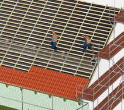
Abb. 4 Arbeiten auf dem Dach
|
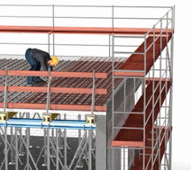
Abb. 5 Bewehrungsarbeiten
|
Abb. 6 Arbeiten auf dem Dach mit einer Dachauflegeleiter und PSA gegen Absturz
|
|
Gefährdungen
|
|
Bei Arbeiten an höher gelegenen Arbeitsplätzen ohne entsprechende Schutzmaßnahmen besteht grundsätzlich Absturzgefahr.
Unfälle mit bleibenden Beeinträchtigungen der Gesundheit können schon beim Absturz aus geringen Höhen die Folge sein.
Achten Sie bei der Nutzung von höher gelegenen Arbeitsplätzen oder Verkehrswegen insbesondere auf die folgenden Gefährdungen:
- Absturz nach innen und außen
- Durchsturz aufgrund unzureichender Tragfähigkeit
|
|
Weitere Informationen
|
- DGUV Information 201-023 "Sicherheit von Seitenschutz, Randsicherungen und Dachschutzwänden als Absturzsicherungen bei Bauarbeiten" (bisher BGI 807)
- DGUV Information 201-057 "Maßnahmen zum Schutz gegen Absturz bei Bauarbeiten"
- Baustein-Merkheft der BG BAU, Abrufnr. 411: Hochbauarbeiten
|
|
Maßnahmen
|
|
Allgemeine Anforderungen
Sorgen Sie dafür, dass Arbeitsplätze und Verkehrswege so eingerichtet werden, dass Gefährdungen durch Absturz von Personen vermieden werden. Legen Sie die Maßnahmen gegen Absturz von Personen in Ihrer Gefährdungsbeurteilung nach dieser Rangfolge fest:
- Absturzsicherungen
- Auffangeinrichtungen
- Individueller Gefahrenschutz
|
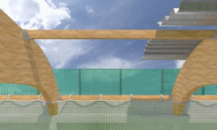
Abb. 7 Mögliche Schutzmaßnahmen bei Dachdeckungen mit Profilblechen
|
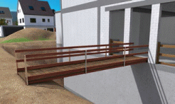
Abb. 8 Laufsteg mit Seitenschutz als Verkehrsweg
|
Ziehen Sie technische Maßnahmen, die einen Absturz verhindern, den organisatorischen oder personenbezogenen Schutzmaßnahmen vor.
Berücksichtigen Sie bei der Festlegung Ihrer Maßnahmen die Beschaffenheit der tiefer gelegenen Fläche, wie z. B. Flüssigkeiten (Ertrinken, Verätzen), Schüttgüter (Versinken), Beton oder Treppen (harter Aufschlag), Bewehrungsanschlüsse (Verletzen)
und Gegenstände/Maschinen. Demzufolge kann es notwendig sein, bereits bei deutlich niedrigeren als den in der Tabelle genannten Absturzhöhen, Schutzmaßnahmen zu ergreifen.
| Maßnahmen gegen Absturz sind nach der ArbStättV erforderlich
|
| ab 0 m |
bei Arbeitsplätzen oder Verkehrswegen an oder über Wasser oder anderen festen oder flüssigen Stoffen, in denen man versinken kann |
| ab 1 m |
für Verkehrswege, welche im Rahmen einer Baumaßnahme fest eingerichtet werden, für frei liegende Treppenläufe und Treppenabsätze sowie für Wandöffnungen |
| ab 2 m |
an allen übrigen Arbeitsplätzen |
Ausführung der Absturzsicherung
Stellen Sie sicher, dass der Seitenschutz ausreichend dimensioniert und so ausgeführt ist, dass ein Hindurch- oder Hinüberfallen verhindert wird.
|
Informationen zur Ausführung des Seitenschutzes finden Sie im Baustein B 100 der BG BAU. |
Als Seitenschutz kann z. B. im Hallenbau ein Randsicherungssystem verwendet werden.
|
Informationen zu Randsicherungen finden Sie in der DGUV Information 201-023 "Sicherheit von Seitenschutz, Randsicherungen und Dachschutzwänden als Absturzsicherungen bei Bauarbeiten" (bisher BGI 807). |
Können aus arbeitstechnischen Gründen Seitenschutz- oder Randsicherungssysteme nicht verwendet werden, sind Auffangeinrichtungen, wie z. B. Dachfanggerüste, Fanggerüste oder Schutznetze einzusetzen.
|
Informationen zu Auffangeinrichtungen finden Sie in den Bausteinen B 102, B 111, B 121 und C 345 der BG BAU. |
Lassen sich keine Absturzsicherungen oder Auffangeinrichtungen einrichten, sind persönliche Schutzausrüstungen gegen Absturz (PSAgA) als individuelle Schutzmaßnahme zu verwenden.
Beachten Sie, dass bei der Verwendung von PSAgA weitere Maßnahmen (z. B. gesonderte Gefährdungsbeurteilung, spezielle Unterweisung, Rettungskonzept) notwendig sind. Legen Sie vor Beginn der Arbeiten die geeigneten Anschlageinrichtungen für die PSAgA fest und achten Sie auf den erforderlichen Freiraum unterhalb des Standplatzes.
Wenn im Bereich von 2 m zur Absturzkante auf Flächen mit weniger als 22,5 Grad Neigung nicht gearbeitet werden muss und dieser Bereich mit einer Absperrung versehen werden kann (z. B.
Ketten über Pfosten gespannt), darf auf sonstige Absturzsicherungen verzichtet werden. Beachten Sie, dass Ihre Beschäftigten entsprechend zu unterweisen sind.
Bei einer Absturzhöhe bis 3 m ist eine Absturzsicherung an Arbeitsplätze und Verkehrswegen auf Dächern und Geschossdecken mit bis zu 22,5° Neigung und nicht mehr als 50 m² Grundfläche entbehrlich, sofern die Arbeiten von hierfür fachlich qualifizierten und körperlich geeigneten Beschäftigten ausgeführt werden, welche besonders unterwiesen sind. Die Absturzkante muss für die Beschäftigten deutlich erkennbar sein.
Sicherung gegen Durchsturz
Sorgen Sie dafür, dass die Gefahr des Durchstürzens verhindert wird. Dies kann z. B. erreicht werden durch:
- lastverteilende Beläge in Kombination mit Absturzsicherung (z. B. Seitenschutz, Schutz- und Arbeitsplattformnetze) auf nicht tragfähigen Flächen, z. B. Wellplatten aus Asbestzement, Faserzement oder Kunststoffen
- fachgerechten Einbau von geprüften durchsturzsicheren Bauteilen
- Seitenschutz bzw. Fangnetze bei nicht durchtrittsicheren Lichtkuppeln oder -bändern
- Verwendung von Dachlatten mit entsprechend dem Sparrenabstand gefordertem Querschnitt und Holzqualität
- tragfähige und unverschiebbare Abdeckungen auf Vertiefungen und Öffnungen in Böden und Decken oder durch Seitenschutz
Sichere Verkehrswege
Als Verkehrswege sind Treppen, Aufzüge oder Laufstege geeignet. Vermeiden Sie den Einsatz von Leitern als Verkehrsweg.
 |
Sorgen Sie dafür, dass die Verkehrswege und Laufflächen sicher begehbar sind, z. B. Stolperstellen entfernen, von Schnee und Eis beräumen und ggf. abstumpfen. |
|
3.1.2 Gefahrstoffe
Beim Rohbau sind Ihre Beschäftigten z. B. durch den Einsatz von Gefahrstoffen oder durch Tätigkeiten, bei denen Stäube oder Abgase freigesetzt werden, gefährdet.
In der Gefährdungsbeurteilung ist das STOP-Prinzip (Substitution – technische – organisatorische – personenbezogene Schutzmaßnahmen in dieser Reihenfolge) zu berücksichtigen.
|
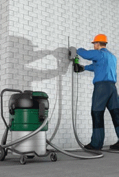
Abb. 9 Sägen mit angeschlossenem Bau-Entstauber
|
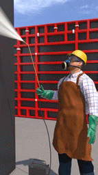
Abb. 10 Sprühen von Schalöl
|
|
Weitere Informationen
|
- Spezielle Informationen zu Gefahrstoffen in Produkten sind in den Sicherheitsdatenblättern der Hersteller zu finden
- WINGIS-Gefahrstoffinformationssystem der BG BAU unter
► www.wingis-online.de
- GefKomm-Bau-Gefahrstoffkommunikation in der Lieferkette der Bauwirtschaft unter
► www.gefkomm-bau.de
|
|
Gefährdungen
|
|
Gefahrstoffe können über die Atemwege, die Haut oder durch Verschlucken in den menschlichen Körper gelangen. Bei der Gefährdung kann man unterscheiden zwischen Gefahrstoffen, die durch Arbeitsverfahren freigesetzt werden (Staub, Abgase)
und verwendeten Gefahrstoffen.
Gefährdungen durch
- Allergie auslösende Stoffe, z. B. in Epoxidharzen
- reizende oder ätzende Stoffe, z. B. zementhaltige Produkte
- lösemittelhaltige Produkte, z. B. Bitumenvoranstriche
- brennbare Produkte, z. B. Montageschaum
Gefährdungen durch Stäube und Rauche
- bei der Steinbearbeitung und ähnlichem, z. B. Dachziegel
- bei der Bearbeitung von Hölzern
- beim Schweißen oder Brennschneiden von Stahl, z. B. beim Hallenbau
Gefährdungen durch Abgase in ganz oder teilweise geschlossenen Arbeitsbereichen (z. B. Hallen, Gräben)
- beim Einsatz von dieselbetriebenen Baumaschinen und Fahrzeugen durch Dieselmotoremissionen (DME)
- beim Einsatz von benzinbetriebenen Baumaschinen und Fahrzeugen durch Kohlenmonoxid
|
|
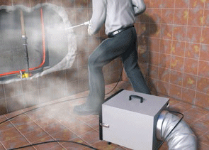
Abb. 11 Luftreiniger
|
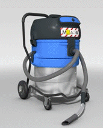
Abb. 12 Bau-Entstauber (z. B. Filterklasse M)
|
|
Maßnahmen
|
|
Allgemeines
Bei der Auswahl von Schutzmaßnahmen ist zunächst zu prüfen, ob Gefahrstoffe ersetzt (substituiert ) werden können. Ist dies nicht möglich, sind technische Schutzmaßnahmen zu ergreifen, bevor organisatorische oder personenbezogene Schutzmaßnahmen in Betracht kommen (STOP-Prinzip).
Bei der Gefährdungsbeurteilung sind die Aufnahme über die Haut, die Inhalation und das Verschlucken zu berücksichtigen, sowie die Brand- und Explosionsgefahren zu prüfen.
Als Unternehmerin bzw. Unternehmer sind Sie für die Einhaltung der Arbeitsplatzgrenzwerte für Gefahrstoffe (AGW) verantwortlich.
Für Gefahrstoffe, für die kein AGW existiert, z. B. krebserzeugende Stoffe, ist die Expositions-Risiko-Beziehung (ERB) und das Minimierungsgebot anzuwenden, d. h. die Gefahrstoffe müssen unter Berücksichtigung des STOP-Prinzips und des Standes der Technik so weit wie möglich reduziert werden.
Beim Auftreten von Gefahrstoffen sind geeignete Schutzmaßnahmen zu ergreifen. Im Rahmen der Gefährdungsbeurteilung ist zu überlegen, ob ungefährlichere Gefahrstoffe eingesetzt und ob emissions- bzw. staubarme Arbeitsverfahren und Arbeitsmittel verwendet werden können.
Bei Tätigkeiten mit Gefahrstoffen ist vor Beginn der Arbeiten immer eine Betriebsanweisung zu erstellen, mit deren Hilfe Ihre Beschäftigten zu unterweisen sind.
|
Betriebsanweisungen können im WINGIS-Gefahrstoffinformationssystem der BG BAU in verschiedenen Sprachen erstellt werden. |
Maßnahmen gegen Gefährdungen durch Stäube und Rauche
Dies können z. B. sein:
- Einsatz von staubarmen Systemen (z. B. Trennschleifer mit Absaugung)
- Einsatz von Bau-Entstaubern zum Reinigen des Arbeitsbereiches und zur Absaugung handgeführter Maschinen
- Einsatz von Luftreinigern zur Reduzierung der Staubbelastung im Arbeitsbereich
- Befestigte Fahrwege/Baustraßen regelmäßig z. B. mit der Kehrmaschine reinigen
- unbefestigte Fahrwege/Baustraßen regelmäßig mit Wasser benetzen, um die Staubfreisetzung zu vermeiden. Bei hoher Abtrocknungsrate kann der Einsatz von staubbindenden Produkten (z. B. Calcium-Magnesium-Acetat) die Wirksamkeit verlängern
- Maschinen mit Wasserspülung oder Staubabsaugung für das Schneiden, Bohren und Schleifen von Materialien, z. B.
Steinzeug, Beton, Asphalt einsetzen (Entsorgen des Schneidwassers beachten)
- Maschinen mit aufsitzendem Maschinenführer (Maschinenführerplatz), z. B. nur mit geschlossener Kabine bzw. mit Belüftungs-/Klimaanlagen der Kabine betreiben, welche geeignete Filteranlagen haben; diese sind regelmäßig zu warten
Maßnahmen gegen Gefährdungen durch Abgase
- Der Einsatz von benzinbetriebenen Maschinen oder Geräten ist in ganz oder teilweise geschlossenen Arbeitsbereichen ohne Katalysator nicht zulässig. Hier sind vorzugsweise Elektrogeräte zu verwenden.
|
Bei Glättarbeiten in Hallen haben sich benzinbetriebene Glättmaschinen mit Katalysator oder gasbetriebene Glättmaschinen bewährt. |
- Der Einsatz von dieselbetriebenen Baumaschinen und Fahrzeugen in ganz oder teilweise geschlossenen Arbeitsbereichen, wie Gräben oder Hallen, ist ohne Dieselpartikelfilter nicht zulässig; die Verwendung alternativer Antriebe (elektro-, elektrohydraulisch oder Gasantrieb) ist zu bevorzugen.
Maßnahmen bei der Verwendung von Gefahrstoffen
- Wasserbasierte und Produkte ohne sensibilisierende Stoffe verwenden
- Haut- und Augenkontakt mit Allergie auslösenden Stoffen, z. B. beim Verwenden von Epoxidharzen, durch Tragen von persönlicher Schutzausrüstung verhindern
- Haut- und Augenkontakt mit reizenden oder ätzenden Stoffen, z. B. beim Verwenden von zementhaltigen Produkten, durch Tragen von persönlicher Schutzausrüstung verhindern
- Bei der Unterweisung zu Tätigkeiten mit Gefahrstoffen müssen die gesundheitsgefährdende Wirkung der Gefahrstoffe und die notwendigen Schutzmaßnahmen vermittelt werden;
Grundlage der Unterweisung ist die Betriebsanweisung
- Die notwendige persönliche Schutzausrüstung ist entsprechend der Betriebsanweisung zur Verfügung zu stellen und zu benutzen
|
3.1.3 Elektrische Gefährdungen
Elektrische Spannungen größer 50 Volt stellen immer eine potentielle Gefahr dar, da sie bei Kontakt mit dem menschlichen Körper Durchströmungen mit tödlichem Ausgang verursachen können. Ein Kontakt mit elektrischer Spannung ist auf verschiedene Art und Weise möglich. Im Arbeitsbereich sind häufig elektrische Freileitungen oder erdverlegte Kabel oder elektrische Anlagen in Gebäuden anzutreffen, von denen eine Gefährdung ausgehen kann. Weiterhin können Gefährdungen durch Fehler in elektrischen Anlagen, unzureichende Schutzmaßnahmen oder ungeeignete Arbeitsmittel entstehen.
|
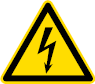
Abb. 13 Symbol für gefährliche elektrische Spannung (W008)
|
Abb. 14 Symbol eines Schalters (M014)
|
|
Gefährdungen
|
|
Achten Sie bei Rohbauarbeiten insbesondere auf elektrische Gefährdungen hinsichtlich Körperdurchströmungen und auf thermische Einwirkungen durch Lichtbögen. Diese Gefährdungen können hervorgerufen werden durch:
- Nutzung von Anschlusspunkten ohne oder mit ungeeigneten Fehlerstrom-Schutzeinrichtungen
- Arbeiten mit ungeeigneten oder beschädigten Arbeitsmitteln
- unzureichende Sicherung elektrischer Anlagen, z. B. aus der Wand und der Decke hängende Leitungen
- Kontakt oder Unterschreitung von Mindestabständen zu Freileitungen durch Personen, Gerüstbauteilen, Baugeräten und -maschinen
- Arbeiten in der Nähe von Photovoltaikanlagen
- Beschädigungen von erdverlegten Kabeln bei Erdarbeiten, z. B. durch Erdnägel, Schachtarbeiten
- Arbeiten in engen und leitfähigen Umgebungen, wie z. B. in Gräben, Schächten, Kanälen usw.
- ungeeignete mobile Stromerzeuger
|
|
Maßnahmen
|
|
Gefährdungsbeurteilung
Stellen Sie in der Gefährdungsbeurteilung fest, welche elektrischen Gefährdungen im Arbeitsbereich auftreten können.
Sichere Anschlusspunkte
Verwenden Sie zum Betrieb Ihrer elektrischen Arbeitsmittel nur geprüfte Anschlusspunkte mit 30 mA Fehlerstrom-Schutzeinrichtung.
|
Bei kleinen Baustellen können alternativ ortsveränderliche Schutzeinrichtungen, z. B. PRCD-S, verwendet werden. |
Beachten Sie, dass beim Einsatz frequenzgesteuerter Arbeitsmittel, z. B. Krane, Betonsägen, Pumpen, allstromsensitive Fehlerstrom-
Schutzeinrichtungen (Typ B) zum Einsatz kommen müssen.
Sichere Arbeitsmittel
Verwenden Sie nur Arbeitsmittel, die für den gewerblichen Einsatz geeignet sind und der Beanspruchung am Arbeitsplatz genügen.
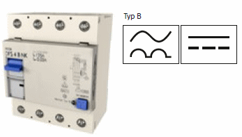
Abb. 15 Allstromsensitive Fehlerstrom-Schutzeinrichtung mit den dazugehörigen Symbolen
|
Verwenden Sie vorzugsweise Handgeräte der Schutzklasse II, welche auch für den rauen Betrieb geeignet sind und erforderlichenfalls einen Nässeschutz aufweisen. |
|
Abb. 15a Symbol für doppelte oder verstärkte Isolation (Schutzklasse II) |
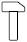 |
Abb. 15b Mit dem Hammersymbol werden Betriebsmittel gekennzeichnet, welche für den "rauen Betrieb" geeignet sind |
|
Abb. 15c Darstellung eines Schutzgrades eines elektrischen Betriebsmittels |
Setzen Sie nur bewegliche Leitungen vom Typ H07RN-F oder H07BQ-F ein. Eine Ausnahme stellen Geräteanschlussleitungen bis 4 m Länge dar, bei denen auch Leitungen vom Typ H05RN-F oder H05BQ-F geeignet sind. Achten Sie bei Leitungsrollern zusätzlich darauf, dass Tragegriff, Kurbelgriff und Trommel aus Isolierstoff bestehen oder mit Isolierstoff umhüllt sind und mindestens Schutzart IP 44 erfüllen.
|
Einen sehr guten Schutz gegen elektrische Gefährdungen bietet die Verwendung von Akkumaschinen. |
Unterweisen Sie Ihre Beschäftigten im Umgang mit den Arbeitsmitteln und stellen Sie dazu Betriebsanweisungen auf. Dokumentieren Sie die Unterweisungen.
Benutzen Sie nur unbeschädigte und aktuell durch eine zur Prüfung befähigte Person geprüfte Arbeitsmittel.
Prüfungen müssen immer dokumentiert werden. Hinweise zur Organisation, Auswahl des Prüfpersonals und Dokumentation der Prüfungen finden Sie in der DGUV Information 203-071 "Wiederkehrende Prüfungen ortsveränderlicher elektrischer Arbeitsmittel – Organisation durch den Unternehmer" (bisher BGI/GUV-I 5190).
Abb. 16 Zusätzliche Dokumentation mittels Prüfplakette
Sicherung bestehender elektrischer Anlagen
Achten Sie darauf, dass im Arbeitsbereich, gleichgültig, ob Bestand oder Neuinstallation, unter Spannung stehende Teile nicht berührt werden können, z. B. durch vorhandene Isolation der Kabelenden. Ist ein sicherer Schutz nicht vorhanden, veranlassen Sie die Abschaltung der elektrischen Spannung und sorgen Sie dafür, dass die Spannung nicht wieder eingeschaltet werden kann.
Mindestabstände zu Freileitungen
Wenn in der Nähe von elektrischen Freileitungen gearbeitet werden muss, stellen Sie sicher, dass
- deren spannungsfreier Zustand hergestellt und für die Dauer der Arbeiten sichergestellt ist oder
- die Mindestabstände zu den Freileitungen eingehalten werden oder
- die aktiven Teile für die Dauer der Arbeiten, insbesondere unter Berücksichtigung von Spannung, Betriebsort, Art der Arbeit und der verwendeten Arbeitsmittel abgedeckt oder abgeschrankt werden.
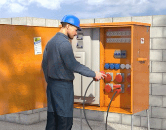
Abb. 17 Verschließbarer Baustromverteiler zur sicheren Stromversorgung einer Baustelle
Mindestabstände in Abhängigkeit zu den Nennspannungen
| Nennspannung |
Mindestabstand |
| bis 1000 V |
1,0 m |
| über 1 kV bis 110 kV |
3,0 m |
| über 110 kV bis 220 kV |
4,0 m |
| über 220 kV bis 380 kV |
5,0 m |
| oder bei unbekannter Nennspannung |
5,0 m |
Prüfung von Photovoltaikanlagen
Stellen Sie sicher, dass bei Arbeiten in der Nähe von Photovoltaikanlagen diese nicht berührt oder betreten werden. Führen Sie keine Arbeiten im Bereich von Photovoltaikanlagen durch, bevor nicht Elektrofachkräfte eindeutige Arbeitsanweisungen erteilt haben.
Erkunden von erdverlegten Kabeln
Erkunden Sie vor Beginn der Arbeiten, ob erdverlegte Kabel im Baufeld vorhanden sind. Messen Sie diese gegebenenfalls ein und kennzeichnen Sie den Verlauf. Beim Antreffen unbekannter Leitungen sind sofort weitere Sicherungsmaßnahmen zu treffen.
Leitfähige Umgebungen
Da die elektrische Gefährdung in engen und leitfähigen Umgebungen besonders groß ist, verwenden Sie als Zusatzschutz ausschließlich Trenntransformatoren oder betreiben Sie ihre Arbeitsmittel mit Schutzkleinspannung.
|
Für jedes Arbeitsmittel muss ein separater Trenntransformator verwendet werden. |
Sicherer Umgang mit mobilen Stromerzeugern
Betreiben Sie mobile Stromerzeuger ausschließlich gemäß DGUV Information 203-032 "Auswahl und Betrieb von Ersatzstromerzeugern auf Bau- und Montagestellen" (bisher BGI 867).
|
3.1.4 Brand- und Explosionsgefährdungen
Eine Brand- und/oder Explosionsgefährdung kann in Arbeitsbereichen vorliegen, in denen brennbare Gefahrstoffe vorhanden sind, eingesetzt oder freigesetzt werden.
Bei Baustellen auf denen z. B. Brenn- oder Schweißarbeiten ausgeführt werden und Lager mit brennbaren Gefahrstoffen sind, besteht eine hohe Brandgefährdung.
Ermitteln Sie im Vorfeld mögliche Brand- und Explosionsgefahren im Rahmen der Gefährdungsbeurteilung. Beachten Sie auch Wechselwirkungen mit anderen Gewerken.
|
Gefährdungen
|
|
Eine Brandgefährdung kann in Arbeitsbereichen vorliegen, in denen brennbare Gefahrstoffe vorhanden sind. Dazu zählen bauchemische Produkte wie z. B. lösemittelhaltige Farben und Lacke, Klebstoffe, Treibstoffe (z. B. Benzin), technische Gase (z. B.
Propan) und entzündbare Sprays. Brennbar sind auch Papier, Holz, Kunststoffe, sowie viele andere Baustoffe und deren Abfälle.
Explosionsgefährdungen bestehen, wenn Dämpfe brennbarer Flüssigkeiten/Gase oder brennbare Stäube mit Luft eine gefährliche explosionsfähige Atmosphäre bilden, die entzündet werden kann. Beispiele:
- Ansammlung von entzündbaren Gasen wie Propan, Butan oder brennbaren Lösemitteldämpfen am Boden oder in Hohlräumen
- Entstehung und Aufwirbeln von Metall- und Holzstäuben,
- austretende Gase bzw. Dämpfe bei der Lagerung von brenbaren Flüssigkeiten und Gasen
- Erwärmung von brennbaren Flüssigkeiten
|
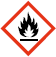
Abb. 18 Kennzeichnung für leicht entzündliche Stoffe
|
Abb. 19 Kennzeichnung für die Warnung vor explosionsfähiger Atmosphäre (W021)
|
|
|
Maßnahmen
|
|
Gefährdungsbeurteilung
Stellen Sie in der Gefährdungsbeurteilung fest, ob und in welcher Menge brennbare Gefahrstoffe am Arbeitsplatz vorhanden sind oder frei gesetzt werden.
- Können sich entzündbare Lösemitteldämpfe bilden und aufgrund fehlender Lüftung anreichern?
- Werden z. B. Gasflaschen mit brennbaren Gefahrstoffen angemessen gelagert?
- Werden Feuerarbeiten auf Dächern ausgeführt?
- Entstehen feine Holz-, Metall- und Kunststoffstäube?
Erste Hinweise kann bei gekauften Bauprodukten die Kennzeichnung auf dem Gebinde liefern. Mehr Informationen sind im Sicherheitsdatenblatt des Herstellers zu finden. Unterweisen Sie Ihre Beschäftigten auch hinsichtlich Brand- und Explosionsgefährdungen.
Sichere Verwendung von Flüssiggas
Beachten Sie, dass Flüssiggasflaschen nur in der für den Fortgang der Arbeiten erforderlichen Anzahl am Arbeitsplatz aufgestellt werden dürfen. Sorgen Sie dafür, dass flüssiggasbefeuerte Geräte, die aus Behältern mit mehr als 1 l Rauminhalt versorgt werden über Erdgleiche mit Schlauchbruchsicherung und unter Erdgleiche mit Leckgassicherungen oder Druckgasreglern mit integrierter Dichtheitsprüfeinrichtung und einer Schlauchbruchsicherung betrieben werden.
Tätigkeiten mit Gefahrstoffen
Ersetzen Sie, wenn möglich, brennbare Gefahrstoffe durch nicht brennbare, z. B. durch den Einsatz von wasserbasierten Produkten.
Werden brennbare Flüssigkeiten wie lösemittelhaltige Farben und Lacke, Klebstoffe, Holzschutzmittel versprüht, dann können sie schon weit unter ihrem Flammpunkt entzündet werden.
|
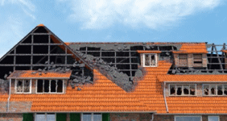
Abb. 20 Gebäude nach einem Dachstuhlbrand
|
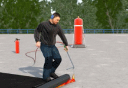
Abb. 21 Dacharbeiten mit Handbrenner
|
Brennbare, unter Druck verflüssigte Gase (z. B. Propan oder Butan) nehmen versprüht ein bis 300-fach vergrößertes Volumen ein, als in der Spraydose. Vorsicht bei mit brennbaren Stoffen getränkter Kleidung! Kein offenes Feuer, keine glimmende Zigaretten!
Sorgen Sie dafür, dass frei werdende Gefahrstoffe, die zu Brand- oder Explosionsgefährdungen führen können, an ihrer Austritts- oder Entstehungsstelle beseitigt werden. Dämpfe und Gase können beispielsweise abgesaugt, Flüssigkeitslachen aufgefangen werden. Ablagerungen brennbarer Stäube sind regelmäßig zu entfernen. Bei der Absaugung sind geeignete Maschinen einzusetzen, gegebenenfalls in explosionsgeschützter Bauweise.
|
Mit dem WINGIS-Gefahrstoffinformationssystem der BG BAU erstellen Sie eine Betriebsanweisung im Sinne der Gefahrstoffverordnung. |
Vermeidung von Zündquellen
Entfernen Sie geeignete Zündquellen, wenn Brand- und Explosionsgefahren bestehen. Dazu zählen offenes Feuer wie Flammen und glimmende Zigaretten, heiße Oberflächen von Verbrennungsmotoren und Heizungen, Schweißspritzer, Lampen, Schweißgeräte, elektrostatische Entladung von Personen oder Arbeitsmitteln, Selbstentzündung.
|
Putzlappen, die mit Fetten und Ölen z. B. Holzöle oder Leinöl getränkt sind, können sich an der Luft selbstentzünden. Bewahren Sie sie daher nur in geeigneten verschließbaren nichtbrennbaren Behältern auf. |
Besonderheiten bei Brandgefährdung
Zu den Arbeiten mit Brandgefährdung zählen u. a. Flamm-, Schweiß-, Lötarbeiten und Arbeiten mit dem Trennschleifer. Verwenden Sie bei diesen Arbeiten ein Freigabesystem z. B. in Form eines Erlaubnisscheines.
|
Ein Muster-Erlaubnisschein ist im Infoblatt Nr. 03 "Erlaubnisschein für Schweiß-, Schneid-, Löt-, Auftau- und Trennschleifarbeiten" des Sachgebiets "Betrieblicher Brandschutz" abgedruckt. |
Für jedes eingesetzte Heißarbeits-Arbeitsmittel wie Schweißgerät oder Trennschleifer ist ein geeigneter Feuerlöscher mit mindestens 6 Löschmitteleinheiten vorzuhalten. Beachten Sie die Beschäftigungsbeschränkungen! Organisieren Sie, dass nach Beendigung der brandgefährdenden Arbeiten der brandgefährdete Bereich auf Entstehungsbrände kontrolliert und gegebenenfalls Kontrollgänge durchgeführt werden bzw. gegebenenfalls eine Brandwache gestellt wird. Kann durch das Entfernen brennbarer Stoffe und Gegenstände eine Brandgefährdung nicht verhindert und eine explosionsfähige Atmosphäre nicht ausgeschlossen werden, haben Sie ergänzende Maßnahmen festzulegen und für deren Durchführung zu sorgen. Ergänzende Maßnahmen können z. B. sein:
- Abdecken verbleibender brennbarer Stoffe und Gegenstände
- Abdichten von Öffnungen benachbarter Bereiche
- Bereitstellen geeigneter Feuerlöscheinrichtungen nach Art und Umfang
- Sicheres Abdichten gegenüber Atmosphäre
- Überwachung der Wirksamkeit der Maßnahmen während der Arbeiten
- Bereitstellung und Einsatz eines mobilen Brandmeldesystems
Beachten Sie Wechselwirkungen mit anderen Arbeitsplätzen und Gewerken wie z. B. einerseits Tätigkeiten mit/oder durch Freisetzen von brennbaren Gefahrstoffen, Anreicherungen von Lösemitteldämpfen am Boden und gleichzeitig die Verwendung von funkenwerfenden Geräten.
Brandschutzzeichen
Brandschutzzeichen sind rot und tragen ein Flammensymbol, sie stehen auch im Flucht- und Rettungsplan.
Abb. 22 Zeichen für Mittel und Geräte zur Brandbekämpfung (F004)
|
Abb. 23 Zeichen für Feuerlöscher (F001)
|
Brandschutzhelfer
In stationären Baustelleneinrichtungen wie Baubüros, Unterkünften oder Werkstätten müssen mindestens 5 % der Beschäftigten als Brandschutzhelfer ausgebildet sein. Auf Baustellen gilt diese Anforderung nicht. Allerdings sind Personen, die auf Baustellen Tätigkeiten mit Brandgefährdung ausführen, wie beispielsweise Flammarbeiten, Schweißen, Brennschneiden, Trennschleifen, Löten, Oberflächenbehandlungen, im Umgang mit Feuerlöscheinrichtungen zu unterweisen. Diese Unterweisung beinhaltet einen theoretischen und einen praktischen Teil.
Bereitstellung bzw. Lagerung von Gefahrstoffen
Stellen Sie die für Ihre Anwendung erforderlichen Gefahrstoffe für die sofortige Verwendung bereit, anstatt sie zu lagern. Ausgenommen sind Produkte, die regelmäßig in Gebrauch sind. Eine Lagerung liegt nach der Definition der Gefahrstoffverordnung vor, wenn die Bereitstellung länger als 24 Stunden bzw. über den darauffolgenden Werktag hinaus dauert. Bei einer Lagerung von Gefahrstoffen sind die Anforderungen der Gefahrstoffverordnung und des Wasserhaushaltsgesetzes einzuhalten. Bereiche, in denen brennbare Gefahrstoffe in solchen Mengen gelagert werden, dass eine erhöhte Brandgefährdung besteht, sind mit dem Warnzeichen zu kennzeichnen.
Abb. 24 Kennzeichnung für die Warnung vor feuergefährlichen Stoffen (W021)
|
3.1.5 Gefährdung durch Lärm
Lärm ist jeder Schall, der bei Tätigkeiten im Rohbau zu Hörminderungen oder Gehörschäden oder zu einer sonstigen mittelbaren oder unmittelbaren Gefährdung von Sicherheit und Gesundheit der Beschäftigten führen kann.
|
Gefährdungen
|
|
Beurteilen Sie die Arbeitsbedingungen in der Gefährdungsbeurteilung und stellen Sie fest, ob Ihre Beschäftigten Lärm ausgesetzt sind oder ausgesetzt sein können.
Bei Arbeiten auf Baustellen und in Werkstätten/-hallen sind die Ursachen für Lärmgefährdungen z. B. folgende:
- Lärmintensive Arbeitsverfahren
- Lärmintensive Arbeitsmittel
- Lärmexpositionen durch Nebenarbeitsplätze
- Schallpegelerhöhungen durch Reflexionen
- Umgebungslärm
Über eine fachkundig durchgeführte Messung können Sie die auftretenden Lärmexpositionen am Arbeitsplatz ermitteln und die Ergebnisse anschließend bewerten. Die Lärmbelastung am Arbeitsplatz wird als Tages-Lärmexpositionswert LEX,8 h ermittelt und durch den Vergleich mit den unteren und oberen Auslösewerten sowie den maximal zulässigen Expositionswerten bewertet.
Bereits ab den unteren Auslösewerten besteht eine mögliche Lärmgefährdung. Potentielle Lärmgefährdungen setzen ein, wenn einer der oberen Auslösewerte aus der Lärm- und Vibrations-Arbeitsschutzverordnung erreicht oder überschritten wird.
Untere Auslösewerte:
Tages-Lärmexpositionspegel LEX,8 h = 80 dB (A)
Spitzenschalldruckpegel LpC,peak = 135 dB (C)
Obere Auslösewerte bzw. maximal zulässige Expositionswerte:
Tages-Lärmexpositionspegel LEX,8 h = 85 dB (A)
Spitzenschalldruckpegel LpC,peak = 137 dB (C)
|
|
Maßnahmen
|
|
Entsprechend dem Ergebnis der Gefährdungsbeurteilung leiten Sie Schutzmaßnahmen nach dem Stand der Technik ein. Berücksichtigen Sie, dass technische Maßnahmen vorrangig vor organisatorischen und diese wiederum vorrangig vor personenbezogenen Schutzmaßnahmen festzulegen sind.
Abb. 25 Das Gebotszeichen kennzeichnet Bereiche in denen das Tragen von Gehörschutz Pflicht ist (M 003)
Können trotz technischer und organisatorischer Schutzmaßnahmen die unteren Auslösewerten nicht eingehalten werden, haben Sie den Beschäftigten geeigneten persönlichen Gehörschutz zur Verfügung zu stellen. Ab den oberen Auslösewerten haben Sie dafür Sorge zu tragen, dass die Beschäftigten den Gehörschutz bestimmungsgemäß verwenden.
|
Unabhängig von der Höhe der Lärmexposition besteht die Forderung, Lärmbelastungen an Arbeitsplätzen zu vermeiden oder soweit wie möglich zu verringern.
|
Lärmreduzierte Arbeitsverfahren
Gewährleisten Sie, dass das von Ihnen gewählte Arbeitsverfahren eine geringe Lärmexposition aufweist. Wenn der Schallpegel Ihres Arbeitsverfahrens den oberen Auslösewert überschreitet, kennzeichnen Sie den Lärmbereich und falls technisch möglich, erstellen Sie eine Abgrenzung und eine Zugangsbeschränkung.
In diesem Bereich besteht eine Gehörschutztrageverpflichtung.
Stellen Sie geeigneten Gehörschutz zur Verfügung. Unterweisen Sie Ihre Beschäftigten bereits ab Erreichen des unteren Auslösewertes
über das Thema Lärm und über die Verwendung von geeignetem Gehörschutz. Informieren Sie Ihre Beschäftigten, die in lärmexponierten Bereichen tätig sind, über die regelmäßig durchzuführende arbeitsmedizinische Vorsorge Lärm.
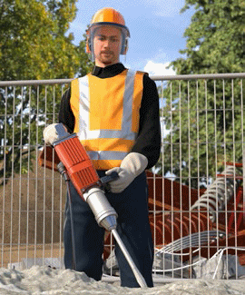
Abb. 26 Persönliche Schutzausrüstung bei Arbeiten mit dem Stemmhammer
Reduzierung der Lärmemission von Arbeitsmitteln
Stellen Sie möglichst schallreduzierte Arbeitsmittel bereit. Informieren Sie sich bei Ihrem Lieferanten über das Angebot von schallreduzierten Arbeitsmitteln und Werkzeugen.
Der Schallleistungspegel LWA ist die für eine Schallquelle kennzeichnende schalltechnische Größe und ist weder abhängig vom Raum noch vom Abstand. Die Schallleistung beschreibt die Gesamtleistung (tatsächliche Schallenergie), die von einer Schallquelle abgegeben wird.
|
Vergleichen Sie die Arbeitsmittel anhand der Kenngrößen der Schallleistungspegel (LWA), die von den Herstellern in den Betriebsanleitungen oder auf den Maschinen angegeben sind. |
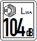
Abb. 27 Kennzeichnung des Schallleistungspegels an der Maschine
Reduzierung der Lärmeinwirkung auf benachbarte Arbeitsplätze
Gestalten Sie Ihre Arbeitsplätze unter Berücksichtigung der auftretenden Lärmexposition so, dass eine Lärmeinwirkung auf unmittelbar benachbarte Arbeitsplätze so gering wie möglich ist. Sind Lärmexpositionen für Nebenarbeitsplätze nicht zu vermeiden, leiten Sie sekundäre Schallschutzmaßnahmen ein.
Mobile Schallschutzwände reduzieren den Schalldruckpegel um 5 dB - 15 dB. Im Freien ist eine Schallpegelabnahme von 6 dB bei einer Abstandsverdopplung anzunehmen.
|
Eine Schallpegelminderung um 3 dB entspricht einer Halbierung der Schallintensität, auch wenn sie nur gering wahrnehmbar ist. Die Gefährdung ist um die Hälfte reduziert.
|
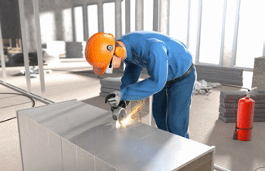
Abb. 28 Persönliche Schutzausrüstung beim Schneiden von Metall
Schallpegelminderungen von 10 dB lassen das wirkende Geräusch um die Hälfte leiser empfinden. Koordinieren Sie möglichst ein zeitlich versetztes Arbeiten, wenn sekundäre Schallschutzmaßnahmen nicht einsetzbar sind. Sind technische und organisatorische Maßnahmen, wie vor beschrieben, nicht möglich, sorgen Sie für die Verwendung von geeignetem Gehörschutz.
|
Zur Auswahl des Gehörschutzes finden Sie Informationen im Baustein E 609 der BG BAU.
|
Vermeidung von Schallreflexionen
Stellen Sie fest, ob an Ihren Arbeitsplätzen und Maschinenstellplätzen schallharte Raumbegrenzungsflächen ungewollte Schallreflexionen verursachen können.
Berücksichtigen Sie bei der Auslegung Ihrer Schallschutzmaßnahmen, dass durch ungewollte Schallreflexionen in Räumen Schallpegelüberhöhungen von bis zu 8 dB anzunehmen sind.
Gestalten Sie Ihre Werkstatt oder -halle mit ausreichend schallabsorbierenden Materialien, damit die Reflexionen und die damit verbundenen Pegelüberhöhungen vermindert werden und der TRLV Lärm entsprechen. Berücksichtigen Sie hierbei, dass kleine und große Räume unterschiedlich zu bewerten sind.
|
Mobile oder stationäre Schallschutzwände sollten in Werkstätten und -hallen beidseitig schallabsorbierend und mittig mit einem schalldämmenden Stahlblech ausgestattet sein, damit von den verwendeten Schallschutzwänden keine zusätzlichen Reflexionen ausgehen.
|
Umgebungslärm
Berücksichtigen Sie, dass der Umgebungslärm, z. B. Verkehrslärm oder Lärm aus bestehenden Anlagen zusätzlich zur Lärmbelastung am Arbeitsplatz einwirkt.
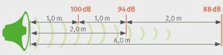
Abb. 29 Schallpegelabnahme durch Entfernung
|
3.1.6 Tätigkeiten mit wesentlich erhöhten körperlichen Belastungen
Wesentlich erhöhte körperliche Belastungen der Beschäftigten können zu Erkrankungen bis hin zur Berufsunfähigkeit führen. Die ergonomische Gestaltung von Arbeitsplätzen und Arbeitsmitteln kann Unfälle verhindern und Belastungen reduzieren, so dass die Gesundheit und Arbeitsfähigkeit der Beschäftigten gefördert wird.
|
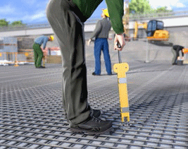
Abb. 30 Bewehrungsbindegerät im Einsatz
|
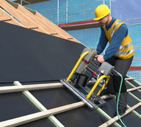
Abb. 31 Einlattgeräte unterstützen das ergonomische Arbeiten
|
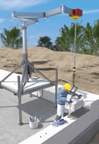
Abb. 32 Versetzgerät zum Mauern von großformatigen Steinen
|
|
Weitere Informationen
|
- DGUV Information 208-033 "Belastungen für Rücken und Gelenke – was geht mich das an?" (bisher BGI/GUV-I 7011)
- DGUV Information 206-007 "So geht´s mit Ideen-Treffen" (bisher BGI/GUV-I 7010-1)
- BG BAU-Broschüren
"Ergonomie am Bau – Damit es leichter geht" und
"Ergonomie am Bau – Das kann jeder tun!"
► www.ergonomie-bau.de
|
|
Gefährdungen
|
|
Folgende körperliche Belastungen können zu Gesundheitsschäden der Wirbelsäule, der Gelenke und der Muskulatur führen und somit die Gesundheit der Beschäftigten negativ beeinflussen:
- Heben, Halten und Tragen sowie Ziehen und Schieben von schweren Lasten
- Arbeiten in Zwangshaltungen (Bücken, Knien, Hocken, Arbeiten über Schulterniveau)
- Arbeiten mit gleichförmigen Bewegungsabläufen, insbesondere bei erhöhter Kraftanstrengung (Hämmern, Drehen, Drücken)
- Bewegungsarmut durch lang andauerndes Sitzen bei der Steuerung von Maschinen
- Einwirkungen von Hand-Arm-Vibrationen oder Ganzkörpervibrationen
Zusätzlich können Lärm, Staub, klimatische und psychische Belastungen zu einer Verstärkung der körperlichen Beanspruchung führen.
|
|
Maßnahmen
|
|
Zur Verringerung der Belastungen und gesundheitlichen Beeinträchtigungen werden nachfolgende Maßnahmen empfohlen:
Arbeitsverfahren
Wählen Sie Arbeitsverfahren nach ergonomischen Gesichtspunkten aus.
|
Maschinelle Versetzhilfen für großformatige Steine, Einwegkartons für Spachtelmassen, Estrichmischsysteme und Silos haben sich beispielsweise bewährt.
|
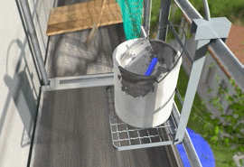
Abb. 33 Eimerträger
Maschinen, Geräte und Arbeitsmittel
Setzen Sie ergonomische Maschinen, Geräte und Arbeitsmittel ein, die einschließlich ihrer Schnittstelle zum Menschen an die körperlichen Eigenschaften und Kompetenzen angepasst sind und biomechanische Belastungen vermeiden
|
Wählen Sie Arbeitsmittel nach Gewicht, Griffgestaltung, Kraftaufwand bei Verwendung, Transportierfähigkeit, Handhabung bzw. Praktikabilität, Rechts- und Linkshänderfähigkeit aus.
|
Setzen Sie bei schweren Lasten technische Arbeits- und Hilfsmittel für den Materialtransport ein.
|
Beispielsweise eignen sich Krane, Bauaufzüge, Karren, Transportzangen und Saugheber zum Transportieren schwerer Lasten.
|
Verwenden Sie erhöhte Ablageflächen für das Lagern und Bearbeiten von Materialien.
|
Hilfreich sind z. B. höhenverstellbare Arbeitstische, Eimerträger (siehe Abbildung 33) (zulässige Lasteinwirkung auf den Seitenschutz beachten) und einhängbare Leitertritte.
|
Setzen Sie höhenverstellbare Geräte ein und passen Sie die Geräte der jeweiligen Körpergröße an.
|
Als höhenverstellbare Geräte eignen sich z. B. Scheren- und mastgeführte Kletterbühnen oder Teleskop-Anlegeleitern.
|
Wählen Sie bei Neuanschaffungen grundsätzlich staub-, vibrations- und lärmgeminderte Maschinen, Fahrzeuge und Geräte aus.
Arbeitsabläufe
Berücksichtigen Sie bei der Organisation der Arbeitsabläufe auch ergonomische Gesichtspunkte, um eine Übereinstimmung der Anforderungen einer Tätigkeit mit den Fähigkeiten und Fertigkeiten des Mitarbeiters zu erreichen.
Vermeiden Sie lange Transportwege, lassen Sie direkt an den Einbauort liefern.
Sorgen Sie dafür, dass ein regelmäßiger Wechsel der Arbeitshaltungen oder auch der Arbeitstätigkeiten erfolgt. Das verteilt die Belastungen auf mehrere Mitarbeiter.
Verhalten
Achten Sie darauf, dass bei Bedarf passende persönliche Schutzausrüstung mit möglichst hohem Tragekomfort, z. B. Knieschutzhosen mit dazugehörigen Einlegepolstern, verwendet wird.
Weisen Sie Beschäftigte in neue Arbeitsverfahren, Maschinen und Geräte ein. Neues bedarf der bewussten Übung.
Zeigen Sie Ihren Beschäftigten rückengerechte Hebe- und Tragetechniken (siehe Abbildungen 34).
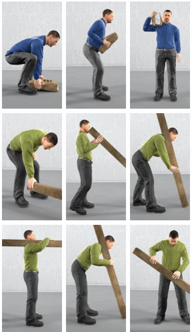
Abb. 34 Hebe- und Tragetechniken
Weisen Sie Ihre Beschäftigten in geeignete Ausgleichsübungen ein.
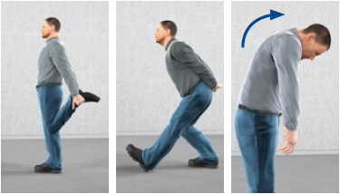
Abb. 35 Ausgleichsübungen
|
Weitere Hinweise können Sie der BG BAU-Broschüre "Ergonomie am Bau – damit es leichter geht!" entnehmen.
|
|
3.1.7 Einflüsse durch psychische Belastung
Im Arbeitsalltag sind oftmals eng gesetzte Zeitvorgaben einzuhalten. Das Arbeitstempo kann hoch sein, bei gleichzeitig hohen Qualitätsansprüchen. Eine gute Arbeitsgestaltung und die Stärkung der Beschäftigten im Hinblick auf die Arbeitsanforderungen unterstützen dabei die gesundheitsförderlichen Aspekte der Arbeit. Die Beschäftigten sind dann besser in der Lage mit psychischer Belastung umzugehen, so dass berufliche Anforderungen herausfordernd und nicht überfordernd bzw. stressend auf sie wirken.
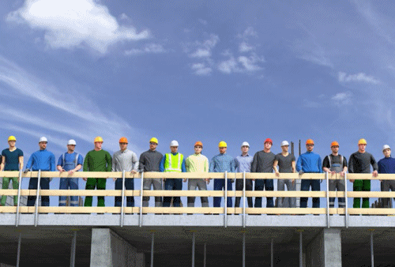
Abb. 36 Teamarbeit und gute Organisation unterstützen die Abwicklung von Projekten
|
Weitere Informationen
|
- DGUV Information 206-006 "Arbeiten: entspannt, gemeinsam, besser" (bisher BGI/GUV-I 7010)
- DGUV Information 206-007 "So geht´s mit Ideen-Treffen" (bisher BGI/GUV-I 7010-1)
- DIN EN ISO 10075-1 "Ergonomische Grundlagen bezüglich psychischer Arbeitsbelastung – Teil 1: Allgemeine Konzepte und Begriffe"
- BG BAU-Broschüre "Damit es gelassen läuft! Tipps, damit Sie und Ihre Mitarbeiter gesund bleiben"
► www.bgbau.de/ergonomie-bau
|
|
Gefährdungen
|
|
Psychische Belastung ist zunächst neutral als "die Gesamtheit aller Einflüsse, die von außen auf den Menschen zukommen und psychisch auf ihn einwirken" definiert. Sie wirkt sich individuell auf die Person aus und kann ihn bzw. sie positiv (z. B. aktivieren, herausfordern) oder negativ beanspruchen (z. B. Stress verursachen).
Eine Gesundheitsgefährdung entsteht dann, wenn sich ein Mensch längerfristig gestresst (negativ beansprucht) fühlt und körperliche sowie psychische Stressreaktionen zeigt.
Arbeitsbedingte psychische Belastung kann entstehen durch Einflüsse aus:
- der Arbeitsaufgabe, z. B. Gefährlichkeit der Arbeit, Monotonie
- der Arbeitsorganisation, z. B. Zeitdruck, häufige Arbeitsunterbrechungen
- der Arbeitsumgebung, z. B. Klima, Lärm
- Arbeitsmitteln, z. B. fehlende oder ungeeignete Werkzeuge, Maschinen
- sozialen Faktoren, z. B. Betriebsklima
Der Grad einer gesundheitlichen Gefährdung variiert in Abhängigkeit von:
- Art, Häufigkeit und Intensität der auftretenden Belastung
- individuellen Leistungsvoraussetzungen und Stressbewältigungsmöglichkeiten der Person
- Arbeitsgestaltung und -organisation
|
|
Maßnahmen
|
|
Berücksichtigen Sie bei Ihrer Gefährdungsbeurteilung die möglichen arbeitsbedingten psychischen Belastungen.
Lassen Sie sich bei Gefährdungen durch psychische Belastungsfaktoren sowie bei der Ableitung entsprechender Maßnahmen bei Bedarf z. B. von Ihrer Fachkraft für Arbeitssicherheit, Ihrem Betriebsarzt, Ihrer Betriebsärztin oder einem Psychologen, einer Psychologin beraten.
Reduzieren Sie die Belastungen, z. B. durch Optimierung von Arbeitsabläufen und der Auswahl von geeigneten Arbeitsmitteln sowie der Förderung der individuellen Fähigkeiten der Beschäftigten.
|
Reduktion von Belastung z. B. durch gut organisierte Arbeitsabläufe; Bereitstellung von geeigneten Werkzeugen.
|
| |
|
Stärkung der Beschäftigten z. B. durch Einhaltung der Erholungspausen; Weiterbildung; Unterstützung durch Kollegen.
|
Zur Ermittlung von wirkungsvollen Maßnahmen können Sie Ihre Beschäftigten in den Prozess der betriebsspezifischen Maßnahmenfindung einbeziehen (z. B. durch Teambesprechungen, Workshops).
|
3.1.8 Persönliche Schutzausrüstungen
Persönliche Schutzausrüstungen (PSA) sind immer dann bereitzustellen und zu benutzen, wenn die technischen und organisatorischen Maßnahmen ausgeschöpft sind und eine Restgefährdung verbleibt, die durch PSA weiter minimiert werden kann. Bei Tätigkeiten mit Gefahrstoffen ist vorher zudem die Substitution zu prüfen. PSA müssen für die jeweiligen Arbeitsbedingungen geeignet sein, den Beschäftigten zur Verfügung stehen. Die Kosten für PSA dürfen den Beschäftigten nicht auferlegt werden.
|
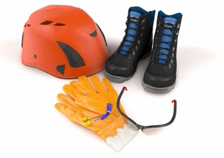
Abb. 37 Persönliche Schutzausrüstungen
|
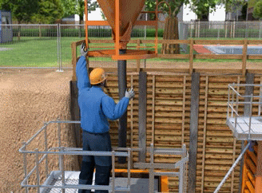
Abb. 38 Persönliche Schutzausrüstungen bei Betonierarbeiten
|
|
Weitere Informationen
|
- DGUV Information 212-515 "Persönliche Schutzausrüstungen" (bisher BGI 515)
- DGUV Information 212-007 "Chemikalienschutzhandschuhe" (bisher BGI/GUV-I 868)
- DGUV Information 212-139 "Notrufmöglichkeit für alleinarbeitende Personen" (bisher BGI/GUV-I 5032)
- DGUV Information 212-014 "Hautschutz" (bisher GUV-I 8516)
- DGUV Information 212-015 "Hautkrankheiten und Hautschutz" (bisher GUV-I 8559)
- DGUV Information 212-016 "Warnkleidung" (bisher BGI/GUV-I 8591)
- DGUV Information 212-019 "Chemikalienschutzkleidung bei der Sanierung von Altlasten, Deponien und Gebäuden" (bisher BGI/GUV-I 8685)
- DGUV Grundsatz 312-906 "Auswahl, Ausbildung und Befähigungsnachweis von Sachkundigen für persönliche Schutzausrüstungen gegen Absturz" (bisher BGG 906)
- DGUV Grundsatz 312-001 "Anforderungen an Ausbildende und Ausbildungsstätten zur Durchführung von Unterweisungen mit praktischen Übungen bei Benutzung von persönlichen Schutzausrüstungen gegen Absturz und Rettungsausrüstungen"
|
|
Gefährdungen
|
|
Gefährdungen entstehen in der Regel durch unsachgemäße Bereitstellung und falsche Benutzung von PSA, z. B.:
- Die PSA schützt nicht vor den Gefährdungen, weil sie aufgrund falscher Auswahl ungeeignet ist.
- Die Schutzfunktionen sind beeinträchtigt, weil mehrere PSA verwendet werden, die nicht aufeinander abgestimmt sind.
- Es werden Zusatzausrüstungen verwendet, die nicht auf die PSA abgestimmt sind.
- Die Schutzfunktion ist beeinträchtigt, weil die PSA verschmutzt ist.
- Die Funktionstüchtigkeit ist nicht mehr gegeben, weil die PSA über die zulässige Gebrauchsdauer hinaus verwendet wird.
- Die Schutzfunktion der PSA kann durch Veränderungen an der PSA beeinträchtigt werden, z. B. durch das Kürzen von Hosenbeinen, das Aufnähen von Taschen oder das Aufbringen von Beschriftungen.
- Die PSA ist dem Benutzer nicht angepasst.
- Die PSA wird nicht den Herstellerangaben entsprechend verwendet.
|
|
Maßnahmen
|
|
Gefährdungsbeurteilung
Voraussetzung für die Auswahl von geeigneter PSA ist die Kenntnis aller am Arbeitsplatz auftretenden Gefährdungen. Dazu gehören auch Gefährdungen, die durch die Tätigkeiten entstehen, bzw. die an benachbarten Arbeitsplätzen erzeugt werden.
Wenn PSA zur Minimierung vieler Gefährdungen gleichzeitig verwendet werden müssen, achten Sie darauf, dass die PSA-Arten aufeinander abgestimmt sind und zusammen verwendet werden dürfen.
Achten Sie darauf, dass die Gebrauchseigenschaften der PSA auf die Tätigkeit abgestimmt sind und die Beschäftigten durch die PSA nicht unnötig behindert werden.
Bereitstellung
Beschaffen Sie nur PSA, die mit einer CE-Kennzeichnung versehen ist, die über eine aussagekräftige Herstellerinformation verfügt, bei der die Ersatzteilbeschaffung möglich und die Wartung über einen längeren Zeitraum gesichert ist.
Abb. 39 CE-Kennzeichnung
PSA müssen den Beschäftigten individuell passen. Auffanggurte, die nicht auf die Körperform des Benutzers abgestimmt sind oder Schutzhelme, die zu klein oder zu groß sind, beeinträchtigen die Schutzwirkung bzw. führen zu zusätzlichen Gefährdungen der Benutzer und Benutzerinnen.
Abb. 40 Stemmarbeiten mit geeigneter PSA
|
Detaillierte Informationen zur Auswahl der PSA finden Sie in den entsprechenden DGUV Regeln sowie in den Bausteinen E 600 bis 609 der BG BAU.
|
Stellen Sie sicher, dass eine ausreichende Anzahl von persönlichen Schutzausrüstungen für den Zeitraum der Tätigkeit zur Verfügung steht. Bei Chemikalienschutzkleidung (Einwegschutzkleidung) kann nach jeder Arbeitsunterbrechung oder bei jedem Wiedereintritt in den Tätigkeitsbereich neue Chemikalienschutzkleidung notwendig sein.
|
Hören Sie die Beschäftigten an, bevor Sie PSA zur Verfügung stellen. Die Tragebereitschaft von PSA ist erfahrungsgemäß größer, wenn die Beschäftigten bei der Auswahl der PSA beteiligt werden.
|
Stellen Sie sicher, dass die PSA nach einem Einsatz entsprechend der Herstellerangaben geprüft wird, bevor sie einer erneuten Nutzung zugeführt wird.
Durch Wartungs-, Reparatur-, Ersatzmaßnahmen und ordnungsgemäße Lagerung stellen Sie sicher, dass die PSA während der gesamten Gebrauchsdauer funktionieren und sich in einem hygienisch einwandfreien Zustand befinden. So ist bei der Reinigung von PSA darauf zu achten, dass die Waschverfahren die Schutzwirkung nicht beeinflussen, z. B. bei Warnwesten.
PSA ist mindestens einmal jährlich zu prüfen. PSA gegen Absturz, Atemschutzgeräte und Chemikalienschutzausrüstungen sind mindestens einmal jährlich durch Sachkundige zu prüfen.
Benutzung
Sie sind dafür verantwortlich, dass die PSA bestimmungsgemäß benutzt werden.
Die Herstellerinformation muss für den Benutzer zugänglich sein und beschreibt die wichtigsten Einsatzbedingungen, Gebrauchsdauer und Benutzungseinschränkungen der PSA. Daneben muss die PSA regelmäßig auf Vollständigkeit und Beschädigungen überprüft und gegebenenfalls direkt ersetzt werden.
Die Beschäftigten müssen in der sachgerechten Benutzung der PSA unterwiesen werden. Dabei ist es hilfreich, auch praktische Übungen durchzuführen. Für einige PSA sind praktische Übungen vorgeschrieben, z. B. PSA gegen Absturz, Atemschutz.
|
3.2 Verwendung von Arbeitsmitteln
3.2.1 Leitern
Leitern werden als Arbeitsplätze und als Verkehrswege genutzt. Die Häufigkeit der Absturzunfälle von Leitern ist auffallend – auch bereits aus niedriger Höhe. Bevor eine Leiter als hochgelegener Arbeitsplatz oder als Zugang zu hochgelegenen Arbeitsplätzen bereitgestellt und verwendet wird, ist im Rahmen einer Gefährdungsbeurteilung zu ermitteln, ob Arbeitsmittel mit einer geringeren Gefährdung zu verwenden sind. Sollte dies nicht möglich sein, ist für den jeweiligen Einsatzbereich eine geeignete Leiter auszuwählen, deren Sicherheit durch den Einsatz von Leiterzubehör erhöht werden kann.
|
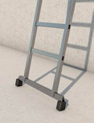
Abb. 41 Fußverbreiterung
|
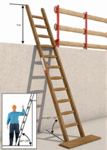
Abb. 42 Sicherung gegen Wegrutschen
|
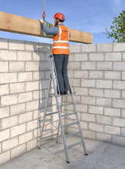
Abb. 43 Abschlagen von Lasten mithilfe einer leichten Plattformleiter
|
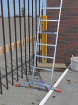
Abb. 44 Leiterfuß zum Ausgleich von Niveauunterschied
|
|
Gefährdungen
|
|
Achten Sie bei einem Einsatz von Leitern insbesondere auf folgende Gefährdungen:
- Absturz von für die Tätigkeit ungeeigneter bzw. nicht gesicherter Leiter
- Umkippen oder Wegrutschen der Leiter aufgrund eines unebenen, rutschigen oder nicht tragfähigen Untergrundes
- Abstürzen bzw. Abrutschen von der Leiter
|
|
Maßnahmen
|
|
Gegen diese und weitere Gefährdungen sind, abhängig von Ihrer Gefährdungsbeurteilung, folgende Maßnahmen zu treffen:
Geeignete Leitern
Wählen Sie für den jeweiligen Einsatz die passende und sicherste Leiter aus (z. B. Podestleiter, Leiter mit Fußverbreiterung).
Sorgen Sie dafür, dass die Sicherheit gegebenenfalls durch Leiterzubehör, (z. B. mit Plattform- oder Leiterkopffixierungen, Erdspitzen, Holmverlängerungen, Einhängepodeste), erhöht wird.
Sicherung gegen Umkippen oder Wegrutschen
Stellen Sie vor der Verwendung sicher, dass Leitern auf einem tragfähigen und ausreichend großen Untergrund aufgestellt sind. Zudem sind Leitern gegen Umstürzen und Verrutschen am Fuß- bzw. am Kopf der Leiter zu sichern (siehe Abbildung 45).
|
Kontrollieren Sie die Rutschhemmung temporärer Abdeckungen, z. B. von Malervlies oder Folien gegen Verschieben.
|
Unterweisen Sie die Beschäftigten hinsichtlich der Aufstellung der Leiter. Es ist zu gewährleisten, dass der Arbeitsbereich sicher erreicht werden kann und sich der Beschäftigte nicht mit dem Körperschwerpunkt außerhalb der Holme hinauslehnen muss. Bei Anlegeleitern sollte der Aufstellwinkel zwischen 65
und 75 Grad betragen.
Achten Sie darauf, dass bei Arbeiten auf der Leiter die gegenüber dem Bauwerk aufgebrachten Kräfte, z. B. beim Bohren oder Stemmen, nicht die Kippsicherheit gefährden. Dies gilt insbesondere für Stehleitern, die parallel zur Wand aufgestellt sind.
Leitern sollten nicht bei Witterungsbedingungen verwendet werden, die eine zusätzliche Gefährdung hervorrufen, z. B bei starkem oder böigem Wind, Vereisung oder Schneeglätte. Unterweisen Sie die Beschäftigten über das Verbot des Übersteigens von der Stehleiter auf hochgelegene Arbeitsplätze oder Einrichtungen.
Zudem sind Stehleitern nicht als Anlegeleitern zu verwenden.
Sorgen Sie dafür, dass bei Anlege- und Schiebeleitern die obersten drei Stufen/Sprossen nicht betreten werden. Bei fahrbaren Leitern sind die Fahrrollen vor der Verwendung festzusetzen.
Absturz- bzw. Abrutschsicherung
Stellen Sie sicher, dass bei Arbeiten von Leitern aus jederzeit ein sicheres Festhalten und Stehen möglich ist. Auch ein Transport von Lasten auf der Leiter darf den sicheren Kontakt zur Leiter nicht einschränken.
|
Zum Transport von Arbeitsmitteln haben sich umhängbare Werkzeugtaschen, -gürtel oder -schürzen bewährt.
|
Zur Minimierung der Abrutschgefahr sind Stufenleitern den Sprossenleitern vorzuziehen.
Unterweisen Sie die Beschäftigten, dass Leitern nicht mit stark verschmutzten Schuhsohlen begangen werden.
Vergewissern Sie sich, dass beim Einsatz von Schiebeleitern oder Leitern, die aus mehreren Teilen bestehen, deren Leiterteile unbeweglich miteinander verbunden bleiben.
Stellen Sie sicher, dass mit Mängeln behaftete Leitern nicht verwendet werden. Legen Sie Prüfintervalle fest und sorgen Sie dafür, dass die Leitern durch zur Prüfung befähigte Personen geprüft werden. Leitern sind vor der Verwendung durch den Benutzer oder die Benutzerin auf ordnungsgemäßen Zustand zu überprüfen. Mängel sind dem oder der Vorgesetzten zu melden.
Abb. 45 Fixierung der Leiter durch Leiterhaken
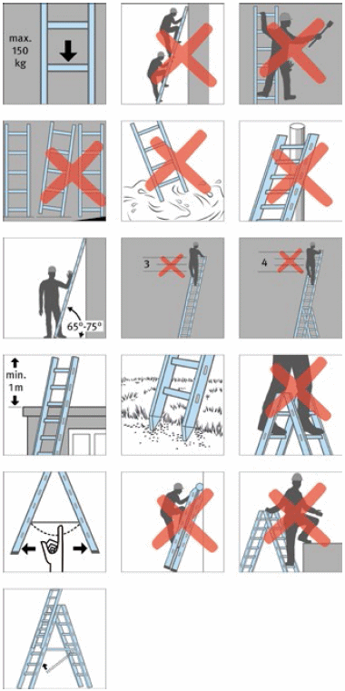
Abb. 46 Hinweise zur Verwendung von Leitern
|
3.2.2 Fahrbare Arbeitsbühnen
Fahrbare Arbeitsbühnen sind bei bestimmungsgemäßer Verwendung sichere mobile hochgelegene Arbeitsplätze. Auf- und Abbau sowie die Benutzung von Fahrbaren Arbeitsbühnen sind durch die Aufbau- und Verwendungsanleitung des Herstellers geregelt. Diese ist den Beschäftigten vor Ort zur Verfügung zu stellen. Die Fahrbare Arbeitsbühne ist vor der ersten Verwendung hinsichtlich des korrekten Aufbaus und der sicheren Funktion zu überprüfen. Eine fehlerhafte Verwendung kann insbesondere zu Absturzunfällen und zum Verlust der Standsicherheit führen.
|
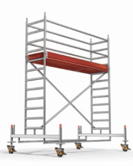
|
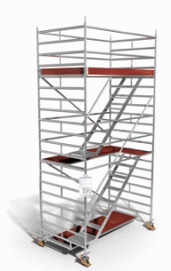
|
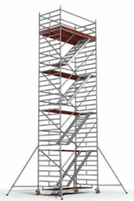
|
Abb. 47 Fahrbare Arbeitsbühne mit einem Belag |
Abb. 48 Fahrbare Arbeitsbühne mit Treppenaufstieg |
Abb. 49 Fahrbare Arbeitsbühne mit Treppenaufstieg und Abstützungen |
|
Weitere Informationen
|
- DIN EN 1004 "Fahrbare Arbeitsbühnen aus vorgefertigten Bauteilen – Werkstoffe, Maße, Lastannahmen und sicherheitstechnische Anforderungen"
|
|
Gefährdungen
|
|
Achten Sie bei der Nutzung von Fahrbaren Arbeitsbühnen insbesondere auf die folgenden Gefährdungen:
- Absturz von der Fahrbaren Arbeitsbühne
- Umkippen der Fahrbaren Arbeitsbühne
- Verlust der Betriebssicherheit durch Änderung an der Fahrbaren Arbeitsbühne abweichend von der Aufbau- und Verwendungsanleitung des Herstellers
- schädigende Auswirkungen auf die Fahrbare Arbeitsbühne infolge außergewöhnlicher Ereignisse, z. B. Wind
- nicht bestimmungsgemäße Verwendung
|
|
Maßnahmen
|
|
Gegen diese und weitere Gefährdungen sind, abhängig von Ihrer Gefährdungsbeurteilung, folgende Maßnahmen zu treffen:
Absturzsicherung
Stellen Sie sicher, dass auf den jeweiligen Arbeitsebenen dreiteiliger Seitenschutz vorhanden ist. Die Durchstiegsklappe auf der Arbeitsebene ist geschlossen zu halten.
Sorgen Sie dafür, dass die Arbeitsebene über die innenliegenden Auf- und Abstiege erreicht wird und dass regelmäßig Zwischenbeläge nach der Aufbau- und Verwendungsanleitung des Herstellers vorgesehen sind.
Achten Sie darauf, dass beim Auf- und Abstieg über eine Leiter, anders als bei einer Treppe, nur Material oder Werkzeug mitgeführt werden kann, welche ein sicheres Festhalten nicht verhindern.
Grundsätzlich dürfen sich beim Verfahren keine Personen auf der Fahrbaren Arbeitsbühne befinden.
|
Fahrbare Arbeitsbühnen mit Treppen als Aufstiege sind zu bevorzugen. Weitere Informationen sind im Baustein B 112 der BG BAU zu finden.
|
Standsicherheit
Stellen Sie sicher, dass die Ausleger zur Verbreiterung der Standfläche bzw. die Ballastierung entsprechend der Standhöhe nach Aufbau- und Verwendungsanleitung des Herstellers ausgeführt werden.
Achten Sie darauf, dass die Fahrbare Arbeitsbühne nur langsam und auf ebenem, tragfähigem und hindernisfreiem Untergrund in Längsrichtung bzw. über Eck verfahren wird.
Beachten Sie die zulässige Gesamtbelastung der Fahrbaren Arbeitsbühne.
Stellen Sie sicher, dass die Fahrbare Arbeitsbühne immer, auch nach Beendigung der Arbeiten gegen Umsturz und Wegrollen gesichert ist.
Legen Sie bei der Unterweisung besonderen Wert darauf, dass es verboten ist, auf eine Fahrbare Arbeitsbühne zu springen oder sie als Ersatz für eine geeignete Absturzsicherung einzusetzen und dass die Fahrrollen durch Bremshebel vor jeder Verwendung festgestellt werden.
Betriebssicherheit
Stellen Sie sicher, dass kein nach der Aufbau- und Verwendungsanleitung erforderliches Bauteil verändert bzw. beseitigt wird.
Generell ist das Anbringen von Hebezeugen (z. B. Seilrollenaufzügen) bzw. anderen die Standsicherheit beeinträchtigenden Teilen (z. B. Big-Bags) an der Fahrbaren Arbeitsbühne verboten. Ausnahme: Der Hersteller erlaubt dieses in seiner Aufbau- und Verwendungsanleitung. Beachten Sie dann die vom Hersteller vorgegebenen Maßnahmen zur Sicherstellung der Standsicherheit.
|
Sehen Sie den Einsatzbereich der Fahrbaren Arbeitsbühne so vor, dass die vorgeschriebenen Einsatzhöhen von maximal 12 m innerhalb und 8 m außerhalb von Gebäuden eingehalten werden. Beachten Sie in jedem Fall die Aufbau- und Verwendungsanleitung des Herstellers.
|
Prüfung nach schädigenden Ereignissen
Sorgen Sie dafür, dass die Fahrbare Arbeitsbühne nach schädigenden Ereignissen wie beispielsweise Unfällen, längeren Zeiträumen der Nichtverwendung oder Naturereignissen (Stürme, Blitzeinschlag, Vereisungen, starke Schneefälle usw.) vor der erneuten Verwendung durch eine zur Prüfung befähigte Person geprüft wird.
|
Ein Formular zur Bestellung einer zur Prüfung befähigten Person finden Sie im Baustein F 704 der BG BAU.
|
Organisation
Legen Sie Verantwortung und Aufgaben Ihrer Beschäftigten für die Baustelle fest und sorgen Sie für deren Qualifikation (z. B.
aufsichtführende Person). Stellen Sie sicher, dass die Fahrbare Arbeitsbühne nach dem Aufbau und vor der Verwendung durch eine zur Prüfung befähigte Person auf sichere Funktion geprüft wird. Arbeitstäglich ist die Fahrbare Arbeitsbühne auf augenfällige Mängel zu kontrollieren.
Sorgen Sie dafür, dass die Aufbau- und Verwendungsanleitung des Herstellers für die Erstellung und Verwendung der Fahrbaren Arbeitsbühne auf der Baustelle vorhanden ist. Unterweisen Sie Ihre Beschäftigten über die sichere Verwendung von Fahrbaren Arbeitsbühnen.
|
3.2.3 Arbeits- und Schutzgerüste
Jedes Unternehmen, das Gerüste oder Teilbereiche von Gerüsten nutzt, ist dafür verantwortlich, dass sich diese in einem ordnungsgemäßen Zustand befinden und für die vorgesehenen Tätigkeiten geeignet sind. Vor der ersten Verwendung hat jedes Unternehmen das Gerüst auf dessen sichere Funktion zu überprüfen.
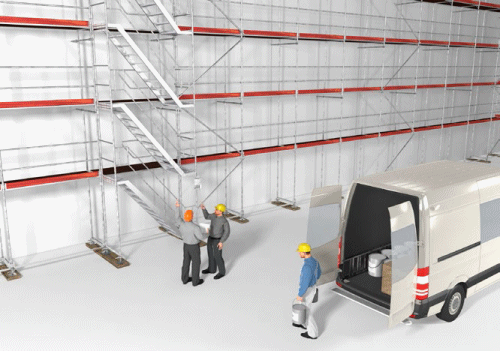
Abb. 50 Ein Gerüst ist vor der Verwendung auf offensichtliche Mängel zu überprüfen
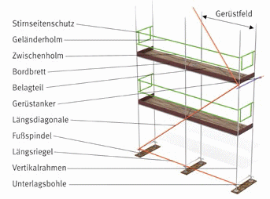
Abb. 51 Bezeichnung von Gerüstbauteilen
|
Gefährdungen
|
|
Achten Sie bei der Gerüstnutzung insbesondere auf die folgenden Gefährdungen:
- Absturz aufgrund nicht bestimmungsgemäßer Benutzung des Gerüstes oder durch Gerüstmängel wegen unzureichender betrieblicher Organisation
- Absturz aufgrund von Mängeln an den Außen-, Innen- und Stirnseiten des Gerüstes sowie bei mangelhafter Ausbildung des Gerüstes als Fanggerüst
- Durchsturz bei nicht geschlossenen Durchstiegsklappen am Leiteraufstieg
- Getroffen werden durch herabfallende Gegenstände
- Stolpern und Rutschen wegen unebenen oder glatten Gerüstbelägen
- Verlust der Tragfähigkeit der Gerüstbeläge durch Überlastung der Gerüstlagen
- Verlust der Stand- oder Betriebssicherheit durch eigenmächtige Veränderungen am Gerüst
- mangelhafte oder ungeeignete Zugänge zu den Arbeitsplätzen auf dem Gerüst
- Verlust der Betriebssicherheit des Gerüstes infolge außergewöhnlicher Ereignisse, die schädigende Auswirkungen auf das Gerüst haben können
|
|
Maßnahmen
|
|
Gegen diese und weitere Gefährdungen sind, abhängig von der Gefährdungsbeurteilung, folgende Maßnahmen zu treffen:
Organisation
Legen Sie Verantwortung und Aufgaben Ihrer Beschäftigten für die Baustelle fest und sorgen Sie für deren Qualifikation (z. B.
aufsichtführende Person). Stellen Sie sicher, dass das Gerüst vor der Verwendung durch eine zur Prüfung befähigte Person auf sichere Funktion geprüft wird.
|
Im Anhang 7 der DGUV Information 201-011 "Handlungsanleitung für den Umgang mit Arbeits- und Schutzgerüsten" (bisher BGI/GUV-I 663) ist das Muster eines Prüfprotokolls vor der ersten Inbetriebnahme enthalten.
|
Sorgen Sie dafür, dass die notwendigen Unterlagen für die Gerüstbenutzung (z. B. Kennzeichnung des Gerüstes, Plan für die Benutzung) vom Gerüstersteller zur Verfügung gestellt werden und auf der Baustelle vorhanden sind. Unterweisen Sie Ihre Beschäftigten über die sichere Benutzung von Gerüsten.
|
Sinnvoll ist es, wenn Warnhinweise aus dem Plan für die Benutzung am Gerüst ersichtlich sind (siehe Abbildung 52).
|
Absturzsicherungen
Stellen Sie sicher, dass jede Gerüstlage, die als Arbeits- und Zugangsbereich genutzt werden kann, während der Benutzung durch Seitenschutz gesichert ist. Maßnahmen zum Schutz gegen Absturz sind dann nicht erforderlich, wenn die Arbeits- und Zugangsbereiche höchstens 0,30 m von anderen tragfähigen und ausreichend großen Flächen entfernt liegen.
Vergewissern Sie sich, dass genutzte Fang- bzw. Dachfanggerüste die vorgeschriebenen Anforderungen erfüllen.
|
Im Baustein B111 bzw. B121 der BG BAU finden Sie Hinweise zu Fang- bzw. Dachfanggerüsten.
|
Mangelhafte Bereiche am Gerüst dürfen nicht benutzt werden.
Wenden Sie sich an Ihren Auftraggeber, Ihrer Auftraggeberin oder den Gerüstersteller zur Beseitigung der Mängel. Bis die Mängel beseitigt sind, sollte der Bereich kenntlich gemacht bzw.
abgesperrt werden.
Durchstiegsklappen
Unterweisen Sie Ihre Beschäftigten, dass die Durchstiegsklappen am Leitergang, nach dem Durchstieg zu schließen sind.
Vorteilhafter ist ein separat vor das Gerüst gestelltes Gerüstfeld als Treppen- oder Leiteraufgang. Damit können die Arbeiten auf der jeweiligen Gerüstebene ungestört und sicherer ablaufen.
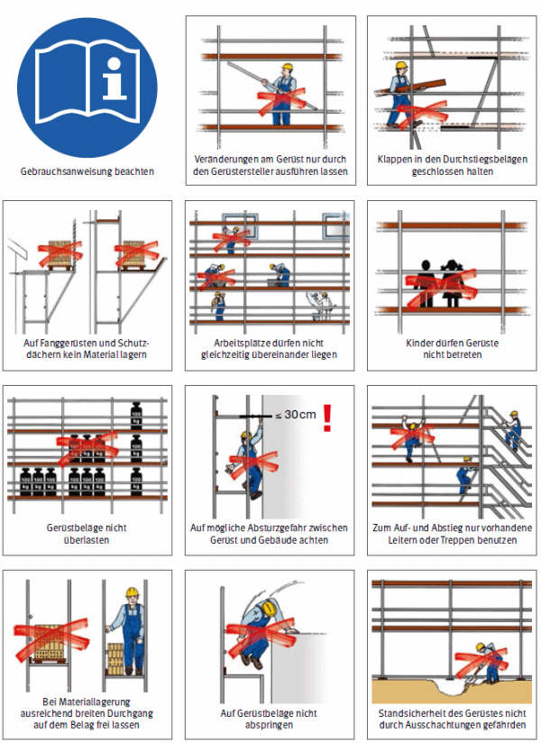
Abb. 52 Warnhinweise zum Gerüst
Schutz vor herabfallenden Gegenständen
Sorgen Sie dafür, dass auf den Gerüstlagen in einem Gerüstfeld nicht gleichzeitig übereinander gearbeitet wird und dass die Zugänge/Verkehrswege gesichert sind, z. B. durch Absperrungen oder mit einem Schuzdach.
Gerüstbeläge
Stellen Sie sicher, dass die Gerüstbeläge sicher begangen werden können. Dazu müssen die Gerüstbeläge so ausgebildet sein, dass sie dicht aneinander verlegt sind und weder wippen noch ausweichen oder sich verschieben können. Gerüstbeläge sind von Eis und Schnee vor der Verwendung zu beräumen. Achten Sie darauf, dass Material auf dem Gerüstbelag nur so abgelegt werden darf, dass ein ausreichend breiter Durchgang erhalten bleibt.
|
Unterweisen Sie insbesondere, dass es verboten ist auf Gerüstbeläge zu springen oder etwas auf sie zu werfen.
|
Lastklasse
Vergewissern Sie sich vor der Gerüstnutzung, dass die Lastklasse des Gerüstes für Ihre auszuführenden Tätigkeiten ausreichend ist. Beachten Sie dabei, dass die Summe der Lasten auf den einzelnen Gerüstlagen innerhalb eines Gerüstfeldes den Wert der maximal zulässigen Belastung (Lastklasse) nicht überschreiten darf.
Standsicherheit
Achten Sie darauf, dass am Gerüst keine eigenmächtigen Veränderungen vorgenommen werden, wie z. B.:
- Entfernen von Verankerungen
- Ausbau von Gerüstbelägen, Seitenschutzbauteilen
- Anbau von Aufzügen, Schuttrutschen, Netzen oder Planen
Werden Veränderungen am Gerüst erforderlich, so ist der Gerüstersteller zu kontaktieren. Grundsätzlich darf nur er Veränderungen vornehmen.
Zugänge
Vergewissern Sie sich vor der Gerüstnutzung, dass jede Gerüstlage über einen sicheren Zugang, z. B. Treppen- oder Leitergang, erreichbar ist. Achten Sie darauf, dass Aufzüge, Transportbühnen oder Treppen als Zugang vorhanden sind, wenn:
- über den Zugang umfangreiche Materialien transportiert werden
- die Aufstiegshöhe mehr als 10 m beträgt
|
Für ein schnelleres, wirtschaftlicheres und ergonomischeres Arbeiten hat es sich bewährt Gerüstreppen statt Leitergänge zu verwenden.
|
Außergewöhnliche Ereignisse
Sorgen Sie dafür, dass nach außergewöhnlichen Ereignissen wie z. B. Unfällen, Naturereignissen (Stürme, starke Regenfälle, Vereisungen, starke Schneefälle usw.) oder auch längere Zeiträume der Nichtbenutzung das Gerüst vor der erneuten Benutzung durch eine zur Prüfung befähigten Person geprüft wird. Bestehen Zweifel an der sicheren Funktion des Gerüstes, kontaktieren Sie den Gerüstersteller.
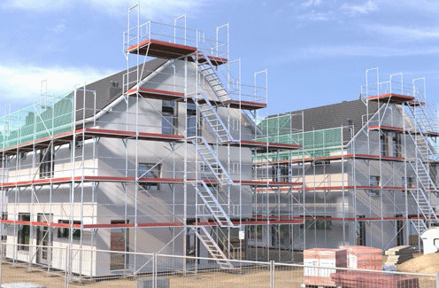
Abb. 53 Fachgerechter Zugang zum Gerüst
|
3.2.4 Gleit- und Kletterschalungen
Die Errichtung von Türmen, Schornsteinen oder Pfeilern mit Gleit- und Kletterschalungen ist ein spezielles Arbeitsverfahren, welches bis in große Höhen durchgeführt werden kann. Dabei ergeben sich verschiedenste Gefährdungen während der Baudurchführung wie z. B. durch Absturz, herabfallende Gegenstände oder mangelhafte Standsicherheit von Baugeräten. Die Verwendung von Bauaufzügen mit Personenbeförderung zur Erreichung der hochgelegenen Arbeitsplätze reduziert die körperliche Belastung Ihrer Beschäftigten.
|
Weitere Informationen
|
- DGUV Information 201-055 "Feuerfest-, Turm- und Schornsteinbau"
- Baustein-Merkheft der BG BAU, Abrufnr. 411: Hochbauarbeiten
- BG BAU Info CD "Informationen für Ihr Gewerk" unter
► www.bgbau-medien.de
- WINGIS-Gefahrstoffinformationssystem der BG BAU unter
► www.wingis-online.de
- GefKomm-Bau-Gefahrstoffkommunikation in der Lieferkette der Bauwirtschaft unter
► www.gefkomm-bau.de
|
|
Gefährdungen
|
|
Achten Sie beim Gleit- und Kletterschalungsbau insbesondere auf folgende Gefährdungen:
- Mängel in der betrieblichen Organisation sowie unzureichende Qualifikation der Beschäftigten
- Absturz von Personen bei der Montage der Schalung oder bei deren Benutzung
- herabfallende Gegenstände durch
- ungenügende Sicherung von Schalungsmaterial, Kleinteilen und Werkzeug auf den Arbeitsbühnen
- unsachgemäßes Anschlagen von Lasten
- mangelhafte Standsicherheit der Schalungskonstruktion und der Baugeräte
- Erkrankungen des Muskel-Skelett-Systems und Belastung des Herz-Kreislaufsystems durch die Benutzung nicht ergonomischer Aufstiege in große Arbeitshöhen
|
|
Maßnahmen
|
|
Gegen diese und weitere Gefährdungen sind, abhängig von Ihrer Gefährdungsbeurteilung, folgende Maßnahmen zu treffen:
Organisation
Legen Sie die Verantwortung und Aufgaben Ihrer Beschäftigten für die Baustelle fest und sorgen Sie für deren Qualifikation (z. B.
fachkundige Person für Gleit- und Kletterschalungsarbeiten, zur Prüfung befähigte Person für die fertiggestellte Gleit- und Kletterschalung, Bedienpersonal von Bauaufzügen und Hebezeugen).
Stellen Sie sicher, dass die erforderlichen Unterlagen (z. B. Aufbau- und Verwendungsanleitung für die Schalung, Betriebsanleitung, Montageanweisung) auf der Baustelle vorhanden sind.
Unterweisen Sie die Beschäftigten in den sicheren Auf-, Um- und Abbau der Schalungen.
Absturzsicherung
Sorgen Sie dafür, dass an den Außenseiten der Arbeitsbühnen der Seitenschutz vollständig vorhanden ist. An den Innenseiten der Arbeitsbühnen ist Seitenschutz anzubringen, wenn es nach der Gefährdungsbeurteilung erforderlich ist.
|
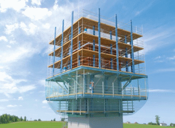
Abb. 54 Kletterschalung an turmartigem Bauwerk
|
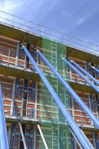
Abb. 55 Wandschalungssystem mit Seitenschutz
|
Ebenso sind Betoniergerüste und Flechterbühnen mit den notwendigen Absturzsicherungen (Seitenschutz) zu versehen.
Gewährleisten Sie, dass Förderöffnungen, Aussparungen und Wandöffnungen gegen Absturz gesichert sind.
Durchstiege zu Nacharbeitsbühnen sind mit selbsttätig schließenden Klappen auszurüsten, um ein unbeabsichtigtes Hineintreten zu verhindern.
Die Beläge der Arbeitsbühnen müssen dicht und lückenlos verlegt sein.
Für den Auf- und Abbau der Schalungen kann zusätzlich die Bereitstellung und Benutzung von PSAgA erforderlich sein.
Schutz vor herabfallenden Gegenständen
Vermeiden Sie, dass sich im Gefahrenbereich Arbeitsplätze und Verkehrswege befinden. Ist dies nicht möglich, stellen Sie sicher, dass die folgenden Maßnahmen gegen herabfallende Gegenstände ergriffen werden:
- Sorgen Sie dafür, dass Arbeits- und Nacharbeitsbühnen zusätzlich mit Schutznetzen zum Schutz gegen Herabfallen von Bau- und Schalungsmaterial, Kleinteilen und Werkzeug verkleidet werden. Vermeiden Sie möglichst die Verwendung von Planen wegen der erhöhten Windlasten.
- Bilden Sie gegebenenfalls den Seitenschutz als geschlossene Schutzwand aus und lassen Sie Schutzdächer errichten.
- Verwenden Sie Schutznetze mit 2 cm Maschenweite nur als Auflegenetze. Unter diesen Auflegenetzen müssen Auffangnetze mit max. 10 cm Maschenweite vorhanden sein.
- Führen Sie die Schutznetze an der Innenseite der Arbeitsbühnen so dicht wie möglich (ca. 5 cm) an das Bauwerk heran.
- Ermitteln Sie den Gefahrenbereich am Fuß des Bauwerks. Sperren Sie diesen Bereich ab und kennzeichnen Sie ihn mit dem Verbotszeichen "Zutritt für Unbefugte verboten" (D-P006).
- Sehen Sie einen höher ausgebildeten Seitenschutz an den Arbeitsbühnen vor, um das Herabfallen von aufgestellter Bewehrung zu vermeiden.
- Stellen Sie geeignete Anschlag- und Lastaufnahmemittel zur Verfügung, die das sichere Heben und Transportieren von Lasten gewährleisten. Unterweisen Sie Ihre Beschäftigten darin, wie Lasten ordnungsgemäß anzuschlagen sind.
Radius des Gefahrbereichs um das Bauwerk mit den hochgelegenen Arbeitsplätzen gemäß der DGUV Information 201-055 "Feuerfest-, Turm- und Schornsteinbau"
| jeweilige Höhe h der baul. Anlage (m) |
erforderlicher Radius abhängig von h |
erforderlicher Mindestradius (m) |
| h bis 100 |
h/5 |
12,50 |
| h > 100 bis 150 |
h/6 |
20,00 |
| h > 150 bis 200 |
h/7 |
25,00 |
| h > 200 |
h/8 |
30,00 |
Beispiel: Bei einer Bauwerkshöhe von 102 m beträgt der erforderliche Radius h/6 = 17 m. Es ist jedoch der Mindestradius von 20 m einzuhalten.
Standsicherheit
Lassen Sie die Standsicherheit der Schalungskonstruktion statisch nachweisen. Sorgen Sie dafür, dass Arbeitsbühnen beispielsweise durch Materialanhäufungen nicht überlastet werden.
Die entsprechenden Vorgaben in den Aufbau- und Verwendungsanleitungen der Hersteller sind zu beachten. Wählen Sie ausreichend dimensionierte Hebezeuge aus und stellen Sie diese standsicher auf.
Ergonomie
Schaffen Sie sichere und ergonomische Verkehrswege zu den hochgelegenen Arbeitsplätzen, wie z. B. mit Aufzügen, Transportbühnen oder Treppen.
|
Auch bei geringen Höhen hat sich an Bauwerken sowie an Gleit- und Kletterschalungen der Einsatz von Aufzügen für die Personenbeförderung aus ergonomischen und wirtschaftlichen Gesichtspunkten bewährt.
|
|
3.2.5 Montage von Schutz- und Arbeitsplattformnetzen
Schutznetze (Sicherheitsnetze) zur horizontalen Verwendung auf Baustellen können, wenn der Einsatz von Seitenschutzsystemen nicht möglich ist, als zweckmäßige Lösung zum Auffangen von abstürzenden Personen eingesetzt werden. Arbeitsplattformnetze sind aufgrund ihrer hohen Steifigkeit und horizontalen Ausrichtung besondere Arbeitsplätze, von denen Montagearbeiten in größeren Höhen ausgeführt werden können. Die Netzmontagearbeiten werden in der Regel auf der Baustelle von hochgelegenen Arbeitsplätzen ausgeführt. Dabei sind insbesondere Maßnahmen gegen die Gefährdung durch Absturz festzulegen.
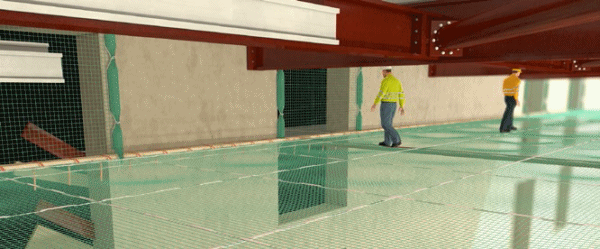
Abb. 56 Arbeitsplattformnetz im Einsatz
|
Weitere Informationen
|
- DGUV Information 201-010 "Handlungsanleitung für den Umgang mit Arbeitsplattformnetzen" (bisher BGI 662)
- DGUV Information 208-019 "Sicherer Umgang mit fahrbaren Hubarbeitsbühnen" (bisher BGI 720)
- DGUV Information 212-001 "Arbeiten unter Verwendung von seilunterstützten Zugangs- und Positionierungsverfahren"
|
|
Gefährdungen
|
|
Achten Sie bei den Netzmontagearbeiten auf Baustellen insbesondere auf folgende Gefährdungen:
- Fehler bei der Montage bzw. Demontage durch unzureichende betriebliche Organisation und durch mangelhaft oder nicht unterwiesene Beschäftigte
- Absturz von z. B. Deckenkanten, Boden- und Wandöffnungen, unvollständigen Gerüsten oder Tragkonstruktionen im Hallenbau
- Durchsturz durch nicht tragfähige Dachbaustoffe, z. B. Faserzement- bzw. Asbestfaser-Wellplatten, Lichtbänder
- Absturz infolge nicht tragfähiger oder fehlender Anschlageinrichtungen für persönliche Schutzausrüstungen gegen Absturz (PSAgA)
- Umsturz von Hubarbeitsbühnen aufgrund nicht bestimmungsgemäßer Verwendung, z. B. durch unkontrollierte Lastbewegungen bei der Netzaufhängung und unsachgemäßes Transportieren der Last (z. B. durch aus dem Arbeitskorb hängende Netze)
- Umsturz von Tragkonstruktionen aufgrund der eingeleiteten Kräfte aus der Netzmontage
- alte Mineralwolle, Taubenkot, Asbest oder Faserdämmstoffe
- schweres, wiederholtes Heben und Tragen sowie Arbeiten in Zwangshaltungen (kann z. B. zur Erkrankungen des Muskel-Skelettsystems führen)
|
|
Maßnahmen
|
|
Gegen diese und weitere Gefährdungen sind, abhängig von Ihrer Gefährdungsbeurteilung, folgende Maßnahmen zu treffen:
Organisation
Sorgen Sie dafür, dass die Netzmontage von fachlich geeigneten Vorgesetzten geleitet und von einer hierzu befähigten Person beaufsichtigt wird. Erfolgt die Netzmontage durch Zugangs- und Positionierungsverfahren unter Zuhilfenahme von Seilen gelten gesonderte Regelungen. Stellen Sie sicher, dass die notwendigen Unterlagen (z. B. baustellenbezogene Montageanweisungen, Betriebsanleitungen von Hubarbeitsbühnen) auf der Baustelle vorhanden sind und die Beschäftigten eine baustellenspezifische Unterweisung erhalten.
|
Muster einer Montageanweisung finden Sie in der DGUV Regel 101-011 "Einsatz von Schutznetzen (Sicherheitsnetzen)".
|
Stellen Sie sicher, dass die bedienenden Personen von Hubarbeitsbühnen theoretische und praktische Kenntnisse über den sicheren Umgang mit der Hubarbeitsbühne besitzen.
Absturzsicherung
Sorgen Sie durch technische (t) oder nachrangig personenbezogene (p) Schutzmaßnahmen dafür, dass die Gefährdung durch Absturz von Personen bei der Netzmontage so gering wie möglich gehalten wird. Zum Beispiel:
| (t) |
Hubarbeitsbühne, Arbeits- und Schutzgerüste und lastverteilende Beläge. Kontrollieren Sie die Gerüste vor deren Nutzung auf Betriebssicherheit (z. B. dreiteiliger Seitenschutz). Eine Leiter ist kein geeigneter Arbeitsplatz bei der Montage von Netzen. |
| (p) |
PSA gegen Absturz. Beachten Sie, dass bei der Verwendung von PSAgA weiterführende Maßnahmen (z. B. gesonderte Gefährdungsbeurteilung, spezielle Unterweisung, geeignete Anschlageinrichtungen, Rettungskonzept) notwendig sind. |
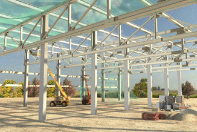
Abb. 57 Montage von Schutznetzen mit Hubarbeitsbühnen
Maschineneinsatz
Sorgen Sie dafür, dass die Sicherheitseinrichtungen, wie z. B. Lastmesseinrichtungen, wirksam sind, um ein Umkippen der Hubarbeitsbühne zu verhindern. Halten Sie die vom Hersteller angegebene maximale Korblast ein. Stellen Sie sicher, dass keine Lasten außerhalb des Arbeitskorbes angebracht sind.
|
Hinweise zum sicheren Umgang mit Hubarbeitsbühnen finden Sie im Baustein B 212 der BG BAU.
|
Standsicherheit
Stellen Sie sicher, dass alle in die Aufhängepunkte der Netze eingeleiteten Kräfte von den Bauteilen aufgenommen und abgeleitet werden können.
|
Baustein B 102 der BG BAU enthält wichtige Hinweise zur Aufhängung von Schutznetzen.
|
Sichere Tätigkeiten mit Gefahrstoffen
Informieren Sie sich bei Ihrem Aufraggeber, Ihrer Auftraggeberin ob gesundheitsschädigende Stoffe am Einsatzort vorhanden sind und sorgen Sie für die Umsetzung der notwendigen Schutzmaßnahmen. Bedenken Sie, dass Ihre Netze durch die durchgeführten Arbeiten kontaminiert sein können und treffen Sie vor deren Demontage entsprechende Maßnahmen.
|
Informationen zu Asbestzementprodukten, alten Mineralwolle-Dämmstoffen und Verunreinigung durch Tauben finden Sie in den Bausteinen C311, C320 und C324 der BG BAU.
|
Ergonomie
Stellen Sie Ihren Beschäftigten entsprechende Geräte für den Transport und die Montage der Netze zur Verfügung, um damit die körperliche Beanspruchung zu minimieren, z. B. Hebezeuge, Teleskopstapler, Montagelift. Beachten Sie, dass Netze, die der Feuchtigkeit ausgesetzt werden, ein erheblich größeres Gewicht aufweisen.
|
3.2.6 Schutznetze
Unternehmerinnen und Unternehmer, die Schutznetze zur Verwendung als horizontale Auffangeinrichtung einsetzen lassen, tragen Verantwortung dafür, dass sich diese in einem ordnungsgemäßen Zustand befinden und für die vorgesehenen Tätigkeiten geeignet sind. Stellen Sie sicher, dass Schutznetze insbesondere vor der ersten Benutzung auf deren sichere Funktion überprüft werden.
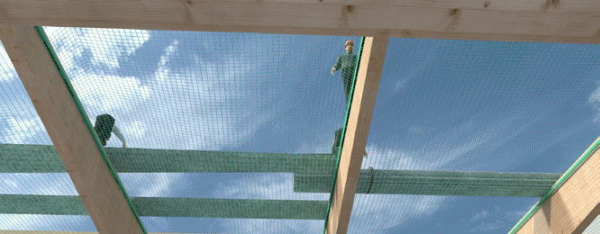
Abb. 58 Schutznetz im Einsatz
|
Weitere Informationen
|
- DGUV Information 201-023 "Sicherheit von Seitenschutz, Randsicherungen und Dachschutzwänden als Absturzsicherungen bei Bauarbeiten" (bisher BGI 807)
|
|
Gefährdungen
|
|
Achten Sie bei der Schutznetznutzung insbesondere auf die folgenden Gefährdungen:
- Mängel in der betrieblichen Organisation sowie unzureichende Qualifikation der Beschäftigten
- Absturz von Personen an den Außenseiten des Schutznetzes oder infolge mangelhafter oder nicht dem Arbeitsumfang entsprechender Zugänge zu den Arbeitsplätzen über dem Schutznetz
- Herabfallende Gegenstände bei Hebe- und Transportvorgängen
- Verlust der Stand- oder Betriebssicherheit durch herabfallende Gegenstände oder Beschädigungen sowie durch eigenmächtige Veränderungen am Schutznetz sowie infolge außergewöhnlicher Ereignisse, die schädigende Auswirkungen auf das Schutznetz haben können
|
|
Maßnahmen
|
|
Gegen diese und weitere Gefährdungen sind, abhängig von Ihrer Gefährdungsbeurteilung, folgende Maßnahmen zu treffen:
Organisation
Legen Sie Verantwortung und Aufgaben Ihrer Beschäftigten für die Baustelle fest und sorgen Sie für deren Qualifikation (z. B. aufsichtführende Person). Stellen Sie sicher, dass das Schutznetz vor der Benutzung durch eine hierfür befähigte Person auf sichere Funktion geprüft wird. Sorgen Sie dafür, dass die notwendigen Unterlagen für die Schutznetzbenutzung (z. B. Kennzeichnung des Schutznetzes, Plan für die Benutzung) auf der Baustelle vorhanden sind. Unterweisen Sie Ihre Beschäftigten über die sichere Benutzung von Schutznetzen.
|
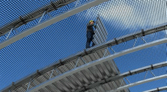
Abb. 59 Schutznetz bei Trapezblechmontage
|
Abb. 60 Beispiel einer Kennzeichnung des Schutznetzes nach EN 1263-1
|
Achten Sie insbesondere darauf, dass die Schutznetze so ausgebildet sind, dass:
- die verwendeten Netze eine Maschenweite nicht größer als 100 mm aufweisen
- der horizontale Abstand zwischen Netz und Absturzkante nicht größer als 30 cm sein darf
- die Netze mit z. B. Aufhängeseilen, Karabinerhaken oder Schäkeln an den Aufhängepunkten befestigt sind. Der Abstand zwischen den Aufhängepunkten darf nicht mehr als 2,5 m betragen.
- die Schutznetze, die miteinander mit Kopplungsseilen verbunden sind, keine Zwischenräume von mehr als 10 cm aufweisen oder wenn die Schutznetze überlappend ohne Kopplungsseil verwendet werden, die Überlappung der Netze mindestens 2,0 m beträgt
- die Schutznetze möglichst dicht unterhalb der zu sichernden Arbeitsplätze montiert sind. Lassen sich aus arbeitstechnischen Gründen und baulichen Gegebenheiten Schutznetze nicht unmittelbar unter dem Arbeitsplatz montieren, sind Absturzhöhen in Netze entsprechend der DGUV Regel 101-011 "Einsatz von Schutznetzen (Sicherheitsnetzen)" möglich.
|
Zur Ausbildung Ihrer befähigten Personen hat sich das Seminar 703 / BGG 965 Ausbildung von Netzmonteuren für die Montage von Schutz- und Arbeitsplattformnetzen der BG BAU bewährt. Im Anhang der DGUV Regel 101-011 ist ein Muster eines Prüfprotokolls vor der ersten Benutzung enthalten.
|
Absturzsicherung
Stellen Sie sicher, dass die Randbereiche des Schutznetzes durch technische Maßnahmen wie z. B. Seitenschutz, Gerüste, Randsicherungen gesichert sind. Maßnahmen zum Schutz gegen Absturz sind dann nicht erforderlich, wenn die Arbeits- und Zugangsbereiche höchstens 0,30 m von anderen tragfähigen und ausreichend großen Flächen entfernt liegen. Lassen sich keine technische Maßnahmen einrichten, sind persönliche Schutzausrüstungen gegen Absturz (PSAgA) als individuelle Schutzmaßnahme zu verwenden. Die geeignete PSAgA muss sich aus der Gefährdungsbeurteilung ergeben.
|
Im Baustein B100 bzw. C 342 der BG BAU finden Sie Hinweise zu Seitenschutz bzw. Randsicherungen.
Informationen zu PSAgA finden Sie im Baustein E 601 der BG BAU.
|
Schutz vor herabfallenden Gegenständen
Sorgen Sie dafür, dass bei den Arbeiten oberhalb von Schutznetzen keine Gegenstände auf tiefer liegende Arbeitsplätze herabfallen.
Verwenden Sie z. B. Auflegenetze mit einer Maschenweite
2 cm. Schutznetze sind von hinabgefallenen Gegenständen zu beräumen.
Standsicherheit
Sorgen Sie dafür, dass die Schutznetze tragfähig sind und nicht beschädigt werden können. Beachten Sie, dass:
- durch Ihre Kontrolle der Kennzeichnung des Netzes gewährleistet ist, dass das Schutznetz noch weiter benutzt werden kann (siehe Abbildung 60: nächste Prüfung 4/2018)
- die Schutznetze System S an tragfähigen Konstruktionen befestigt sind, die im Falle eines Absturzes in das Netz mindestens 6 KN aufnehmen können
- Sie den Nachweis der Bruchkräfte der Seile bei einsträngiger Aufhängung von ≥ 30 kN und bei zweisträngiger Aufhängung von ≥ 15 kN von der Netzmontagefirma erhalten
- am Schutznetz keine eigenmächtigen Veränderungen vorgenommen werden dürfen. Das darf grundsätzlich nur das Montagepersonal der Schutznetze
- die Schutznetze nicht begangen werden dürfen, außer zur Bergung von Personen und zum Entfernen von hineingefallenen Gegenständen
- die Prüfung der Beschädigung aufgrund von z. B. hineingefallenen Personen oder Gegenständen von der Netzmontagefirma durchgeführt werden muss, bevor über dem Netz weitergearbeitet wird
Verkehrswege
Sorgen Sie dafür, dass die Arbeitsplätze oberhalb der Schutznetze
über einen sicheren Zugang erreichbar sind, z. B. Aufzüge, Transportbühnen oder Treppen.
Außergewöhnliche Ereignisse
Sorgen Sie dafür, dass das Schutznetz nach außergewöhnlichen Ereignissen wie Unfällen, längere Zeiträume der Nichtbenutzung oder Naturereignisse (Stürme, starke Regenfälle, Vereisungen, starke Schneefälle usw.) vor der erneuten Benutzung durch eine zur Prüfung befähigte Person geprüft wird. Bestehen Zweifel an der sicheren Funktion des Schutznetzes, kontaktieren Sie den Ersteller des Schutznetzes.
|
3.2.7 Arbeitsplattformnetze
Unternehmerinnen und Unternehmer, die Arbeitsplattformnetze benutzen lassen, tragen Verantwortung dafür, dass sich diese in einem ordnungsgemäßen Zustand befinden und für die vorgesehenen Tätigkeiten geeignet sind. Vor der ersten Verwendung hat jedes Unternehmen das Arbeitsplattformnetz auf dessen sichere Funktion zu überprüfen.
|
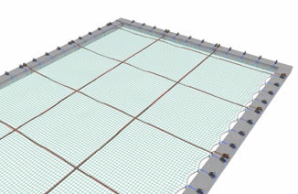
Abb. 61 Prinzip eines Arbeitsplattformnetzes
|
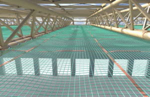
Abb. 62 Arbeitsplattformnetz in einer Stahlkonstruktion
|
|
Weitere Informationen
|
- DGUV Information 201-010 "Handlungsanleitung für den Umgang mit Arbeitsplattformen" (bisher BGI 662)
- DGUV Information 201-023 "Sicherheit von Seitenschutz, Randsicherungen und Dachschutzwänden als bei Bauarbeiten" (bisher BGI 807)
|
|
Gefährdungen
|
|
Achten Sie bei der Nutzung von Arbeitsplattformnetzen insbesondere auf die folgenden Gefährdungen:
- Mängel in der betrieblichen Organisation sowie unzureichende Qualifikation der Beschäftigten
- Absturz von Personen an den Außenseiten des Schutznetzes oder infolge mangelhafter oder nicht dem Arbeitsumfang entsprechender Zugänge zu den Arbeitsplätzen auf dem Schutznetz
- Herabfallende Gegenstände bei Hebe- und Transportvorgängen
- Verletzungen von Personen infolge von Stolpern und Rutschen bei unebenen oder glatten Laufflächen
- Verlust der Stand- oder Betriebssicherheit durch herabfallende Gegenstände oder Beschädigungen oder durch eigenmächtige Veränderungen am Arbeitsplattformnetz sowie infolge außergewöhnlicher Ereignisse, die schädigende Auswirkungen auf das Arbeitsplattformnetz haben können
|
|
Maßnahmen
|
|
Gegen diese und weitere Gefährdungen sind, abhängig von Ihrer Gefährdungsbeurteilung, folgende Maßnahmen zu treffen:
Organisation
Legen Sie Verantwortung und Aufgaben Ihrer Beschäftigten für die Baustelle fest und sorgen Sie für deren Qualifikation (z. B. aufsichtführende Person). Stellen Sie sicher, dass das Arbeitsplattformnetz vor der Benutzung durch eine hierfür befähigte Person auf sichere Funktion geprüft wird. Sorgen Sie dafür, dass die notwendigen Unterlagen für die Nutzung des Arbeitsplattformnetzes (z. B. Kennzeichnung des Arbeitsplattformnetzes, Plan für die Benutzung) auf der Baustelle vorhanden sind.
Unterweisen Sie Ihre Beschäftigten über die sichere Benutzung von Arbeitsplattformnetzen.
|
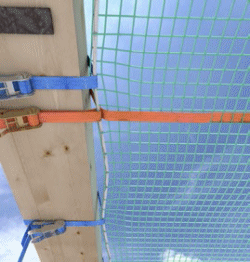
Abb. 63 Spanngurt- Randbefestigung am Holzbalken
|
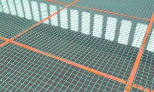
Abb. 64 Durchstich Traversengurte mindestens alle 10 Maschen
|
|
Zur Ausbildung Ihrer befähigten Personen hat sich das Seminar 703 / BGG 965 Ausbildung von Netzmonteuren für die Montage von Schutz- und Arbeitsplattformnetzen der BG BAU bewährt. Im Anhang der DGUV Information 201-010 "Handlungsanleitung für den Umgang mit Arbeitsplattformen" (bisher BGI 662) ist ein Muster eines Prüfprotokolls vor der ersten Benutzung enthalten.
|
Absturzsicherung
Stellen Sie sicher, dass die Randbereiche des Arbeitsplattformnetzes durch technische Maßnahmen, wie z. B. Seitenschutz, Randsicherungen gesichert sind. Maßnahmen zum Schutz gegen Absturz sind nicht erforderlich, wenn die Arbeits- und Zugangsbereiche höchstens 0,15 m von anderen tragfähigen und ausreichend großen Flächen entfernt liegen. Lassen sich keine technischen Maßnahmen einrichten, sind persönliche Schutzausrüstungen gegen Absturz (PSAgA) als individuelle Schutzmaßnahme zu verwenden. Die geeignete PSAgA muss sich aus der Gefährdungsbeurteilung ergeben.
|
Im Baustein B 100 bzw. C 342 der BG BAU finden Sie Hinweise zu Seitenschutz bzw. Randsicherungen.
Informationen zu PSAgA finden Sie im Baustein E 601 der BG BAU.
|
Schutz vor herabfallenden Gegenständen
Sorgen Sie dafür, dass auf den Arbeitsplattformnetzen, auf denen gearbeitet wird, nicht Gegenstände von höher liegenden Arbeitsplätzen herabfallen können.
Verkehrswege
Stellen Sie sicher, dass die Arbeitsplattformnetze sicher benutzt werden können. Achten Sie insbesondere darauf, dass die Arbeitsplattformnetze so ausgebildet sind, dass:
- das verwendete Netzmaterial eine Maschenweite nicht größer als 45 mm aufweist
- die Neigung des eingebauten Netzes nicht mehr als 22,5 Grad beträgt
- die Befestigung der Arbeitsplattformnetze mit Seilen oder Gurten im Abstand von maximal 50 cm erfolgt
- der maximale Durchhang des Netzes bei Belastung mit einer Person an der ungünstigsten Stelle nicht mehr als 30 cm beträgt (gegebenenfalls sind die Spann- und Traversengurte durch das Netzmontagepersonal nach zu spannen)
- der Aufstieg über einen sicheren Zugang erreichbar ist, z. B. Aufzüge, Transportbühnen oder Treppen
Arbeitsplattformnetze sind von Eis und Schnee zu beräumen.
Standsicherheit
Sorgen Sie dafür, dass die Arbeitsplattformnetze tragfähig sind und nicht beschädigt werden können. Achten Sie darauf, dass:
- die Netze ohne Prüfung der Prüfmasche gemäß der DGUV Regel 101-011 "Einsatz von Schutznetzen (Sicherheitsnetzen)" nur innerhalb der ersten 12 Monate nach Herstellung benutzt werden dürfen
- die Prüfung der Alterung, der Beschädigung und des Abriebes regelmäßig durchgeführt wird und der Prüfnachweis dokumentiert ist
- am Arbeitsplattformnetz keine eigenmächtigen Veränderungen, wie z. B. Entfernen von Befestigungen, Spanngurten und Randsicherungen vorgenommen werden dürfen. Das darf grundsätzlich nur das Montagepersonal der Arbeitsplattformnetze.
- es z. B. ein Verwendungsverbot gibt für chemische Stoffe und den Umgang mit Feuer, offenen Flammen oder heißen Stoffen, die zu einer Zerstörung des Netzes oder seiner Befestigungsmittel führen können
- das Arbeitsverfahren einschließlich Arbeitsmittel und verwendete Baustoffe und Bauteile nicht zu einer Zerstörung des Netze führen dürfen, z. B. Schweißen, Schneiden, scharfe Kanten
- bei der Benutzung des Arbeitsplattformnetzes eine maximale Belastung von 6 KN in die Tragkonstruktion eingeleitet werden darf
Außergewöhnliche Ereignisse
Sorgen Sie dafür, dass das Arbeitsplattformnetz nach außergewöhnlichen Ereignissen wie Unfälle, längere Zeiträume der Nichtbenutzung oder Naturereignisse (Stürme, starke Regenfälle, Vereisungen, starke Schneefälle usw.) vor der erneuten Benutzung durch eine befähigte Person geprüft wird. Bestehen Zweifel an der sicheren Funktion des Arbeitsplattformnetzes, kontaktieren Sie den Arbeitsplattformnetzersteller.
|
3.2.8 Schweiß- und Schneidgeräte
Auf Baustellen werden Stähle durch thermisches Schweißen oder Brennschneiden verbunden bzw. getrennt. Zum Verbinden von metallischen Werkstoffen werden hierbei überwiegend Autogen- sowie Lichtbogenschweißverfahren eingesetzt. Je nach Einsatzort und gewähltem Schweißverfahren können Gefährdungen, z. B. durch Stromschlag, Brand, Explosion, optische Strahlung, Verbrennung und einatembare Schadstoffe entstehen. Wechselnde Einsatzorte verlangen eine besondere Sorgfalt bei der Vorbereitung und Ausführung der Schweißarbeiten.
Abb. 65 Schweißen nur mit Schutzausrüstungen
|
Abb. 66 Selbstabdunkelnder Schweißer-Schutzschirm
|
|
Weitere Informationen
|
- DGUV Information 209-010 "Lichtbogenschweißer" (bisher BGI 553)
- DGUV Information 209-011 "Gasschweißer" (bisher BGI 554)
- DGUV Information 209-016 "Schadstoffe beim Schweißen und bei verwandten Verfahren" (bisher BGI 593)
- DGUV Information 205-002 "Brandschutz bei feuergefährlichen Arbeiten" (bisher BGI 653)
|
|
Gefährdungen
|
|
Bei Schweiß- und Brennschneidearbeiten auf Baustellen ist mit den nachfolgend aufgeführten besonderen Gefährdungen zu rechnen:
- Brände, Verpuffungen oder Explosionen durch austretendes Brenngas oder Sauerstoff sowie durch entzündliche Materialien im Arbeitsbereich
- Flammenrückschlag aufgrund mangelhafter oder fehlender Schutzeinrichtungen
- Verbrennungen durch heiße Werkstücke, Schlackespritzer und Schweißelektroden
- Haut- und Augenschäden durch nicht sichtbare Infrarot- und Ultraviolettstrahlung und Blendung durch intensive sichtbare Strahlung
- einatembare Schadstoffe wie Gase, Rauche, Stäube
- Stromschlag durch das Berühren von spannungsführenden Teilen
- Lärm
|
Abb. 67 Schutzausrüstung beim Gasschweißen
|
Abb. 68 Schutz weiterer Personen durch Abschirmung beim Lichtbogenschweißen.
|
|
Maßnahmen
|
|
Sorgen Sie für die erforderliche Qualifikation Ihrer Beschäftigten.
Erstellen Sie eine Gefährdungsbeurteilung und die für die Schweißverfahren notwendigen Betriebsanweisungen. Legen Sie die entsprechenden Schutzmaßnahmen nach dem Stand der Technik fest und unterweisen Sie Ihre Mitarbeiter.
Brand- und Explosionsschutz
Sorgen Sie dafür, dass die allgemeinen Maßnahmen zur Vermeidung von Brand- und Explosionsgefährdungen eingehalten werden.
Insbesondere sind bei Schweißarbeiten folgende Maßnahmen zu beachten:
- Entfernen Sie möglichst brennbare und entzündliche Stoffe im Arbeitsbereich.
- Treffen Sie ggf. weitere Maßnahmen, um das Entzünden von Stoffen durch offene Flammen, Schlackespritzer oder Elektrodenreste zu vermeiden.
- Betreiben Sie Autogeneinrichtungen nur mit den erforderlichen Sicherheitseinrichtungen wie z. B. Druckminderer, Entnahmestellen- oder Einzelflaschensicherungen.
- Sorgen Sie dafür, dass sich Ihre schweißtechnische Ausrüstung in einem ordnungsgemäßen Zustand befindet.
- Schützen Sie Ihre schweißtechnische Ausrüstung auf Baustellen vor Beschädigungen durch druckfeste Überdeckungen von Gas-Schläuchen, Netzanschluss- und Schweißstromleitungen im Bereich von Verkehrswegen.
- Halten Sie geeignete Feuerlöscheinrichtungen bereit.
Schutz vor Verbrennungen und optischer Strahlung
Stellen Sie, je nach Ergebnis der Gefährdungsbeurteilung geeignete PSA zur Verfügung. Zum Schutz des Körpers werden u. a.
Schweißerschürzen, Schutzanzüge, Lederstulpenhandschuhe, Nackenleder verwendet. Augenschutzgeräte wie z. B. Schutzschilde, Schutzschirme und Schutzbrillen müssen die entsprechend dem Schweißverfahren erforderliche Schutzstufe aufweisen.
|
Bei Lichtbogenverfahren haben sich Schutzschirme mit Schweißerschutzfiltern, die sich selbsttätig mit dem Zünden des Lichtbogens verdunkeln, besonders bewährt.
|
Schirmen Sie Arbeitsplätze beim Lichtbogenschweißen z. B. durch Stellwände oder Vorhänge so ab, dass weitere Personen gegen die Einwirkung der Strahlung geschützt sind (siehe Abbildung 68).
Schutz vor einatembaren Schadstoffen
In Abhängigkeit von den Werkstoffen, den Schweißzusatzstoffen und dem angewandten Schweißverfahren können unterschiedliche gas- und partikelförmige Schadstoffe in unterschiedlichen Konzentrationen freigesetzt werden. Wählen Sie vorrangig emissionsarme Schweißverfahren aus. Kann die Exposition von Beschäftigten gegenüber Gefahrstoffen nicht vermieden werden, sind lüftungstechnische, organisatorische und gegebenenfalls personenbezogene Schutzmaßnahmen erforderlich. Beachten Sie Beschäftigungsbeschränkungen beim Auftreten bestimmter Gefahrstoffe.
|
Zu Schutzalterbestimmungen finden Sie Informationen im Baustein H 900 der BG BAU.
|
Schutz vor Stromschlag
Verwenden Sie zum Betrieb Ihrer elektrischen Arbeitsmittel nur Anschlusspunkte mit entsprechenden Fehlerstromschutzeinrichtungen.
Arbeitsmittel müssen für den gewerblichen Einsatz und dem Einsatz auf Baustellen geeignet sein.
Stellen Sie sicher, dass schweißtechnische Ausrüstungen wie z. B. Schweißstromquelle, Schweißstromleitungen, Elektrodenhalter sowie Schweißerschutzkleidung unbeschädigt und funktionsfähig sind. Beachten Sie die für die verschiedenen Einsatzbereiche zulässigen Höchstwerte der Leerlaufspannung der Schweißstromquelle. Bei Arbeiten unter erhöhter elektrischer Gefährdung sind hierfür geeignete und als solche gekennzeichnete Schweißstromquellen zu verwenden.
Schutz vor Lärm
Beachten Sie, dass bei der Verwendung von Schweiß- und Schneidbrennern Grenz- und Orientierungswerte überschritten werden können. Prüfen Sie, ob durch Auswahl geeigneter Brenner eine Lärmreduzierung möglich ist und stellen Sie gegebenenfalls geeignete persönliche Schutzausrüstungen zur Verfügung.
|
Zur Auswahl von Gehörschutz finden Sie Informationen im Baustein E 609 der BG BAU.
|
|
3.2.9 Arbeiten mit Maschinen im Rohbau
Maschinen im Rohbau erleichtern und beschleunigen die Arbeiten beim Errichten von Gebäuden. Sie werden überwiegend zum Transportieren, Fördern, Heben von Material und Personen und zum Verarbeiten von Baustoffen eingesetzt. Gefährdungen können z. B. durch das Herabfallen von gehobenen Lasten, durch Abstürze oder durch Stromschlag verursacht werden. Die wechselnden Einsatzorte sowie die Vielzahl der verschiedenen auszuführenden Arbeiten verlangen eine besondere Sorgfalt bei der Planung und Vorbereitung des Maschineneinsatzes.
Abb. 69 Kleiner Trommelmischer im Einsatz auf der Baustelle
|
Abb. 70 Baustellenkeissäge
|
|
Weitere Informationen
|
- Bekanntmachung zur Betriebssicherheit 1114 "Anpassung an den Stand der Technik bei der Verwendung von Arbeitsmitteln" (BekBS 1114)
|
|
Gefährdungen
|
|
Bei der Verwendung von Maschinen im Rohbau ist mit den nachfolgend aufgeführten besonderen Gefährdungen zu rechnen, die unmittelbar in Abhängigkeit zum jeweiligen Verwendungszweck stehen.
- Nicht bestimmungsgemäße Verwendung aufgrund fehlender oder mangelhafter Unterweisung und Einweisung
- herabfallende oder unkontrolliert bewegte Gegenstände
- Unterschreitung der Sicherheitsabstände
- Verlust der Standsicherheit von Baumaschinen
- Stromschlag
- Staub, Lärm und Vibrationen bei der Arbeit
- mangelhafte Instandhaltung und fehlende Prüfungen
|
Bestimmungsgemäße Verwendung
Sorgen Sie dafür, dass Maschinen ausschließlich nach der in der Betriebsanleitung angegebenen bestimmungsgemäßen Verwendung betrieben werden. Machen Sie Ihren Beschäftigten deutlich, dass bei einem Abweichen von der bestimmungsgemäßen Verwendung gravierende Gefährdungen auftreten können.
Erwerben und verwenden Sie ausschließlich Maschinen, die CE-gekennzeichnet sind. Für einige Maschinenarten, z. B.
Maschinen zum Heben von Personen, können EG-Baumusterprüfungen durch den Hersteller erforderlich sein. Entsprechende Nachweise finden Sie in den Unterlagen zur Maschine.
Bei der Verwendung von Maschinen sind die körperlichen Voraussetzungen und Kompetenzen der Beschäftigten zu berücksichtigen.
Berücksichtigen Sie die örtlichen Bedingungen, an dem die Maschine verwendet werden sollen, wie z. B. öffentlicher Verkehrsraum, Nähe zu Freileitungen, Gräben und Böschungen oder beengte Platzverhältnisse. Berücksichtigen Sie auch Einflüsse der möglichen Arbeitsumgebungen wie z. B.:
- Wettererscheinungen wie Sturm, Regen, Schnee, Hagel, Frost
- Feuchte oder Nässe
- unzureichende Beleuchtung
Maschinen müssen für die am Arbeitsplatz gegebenen Bedingungen geeignet sein. Bei deren Verwendung müssen die Sicherheit und der Gesundheitsschutz entsprechend dem Stand der Technik gewährleistet sein. Legen Sie gegebenenfalls geeignete technische, organisatorische und personenbezogene Schutzmaßnahmen fest, damit die Maschinen sicher verwendet werden können.
|
Aktuelle Hinweise zum Stand der Technik finden Sie u.a. auf der Seite der Bundesanstalt für Arbeitsschutz und Arbeitsmedizin ► www.baua.de (Suchbegriff: BekBS).
|
|
Verwenden Sie bei der Baustellenkreissäge die Anschläge und prüfen Sie die Wirksamkeit der Schutzeinrichtungen (z. B. Schutzhaube).
|
Unterweisung und Einweisung
Sorgen Sie dafür, dass Beschäftigte die Eignung und Befähigung zum sicheren Bedienen von Maschinen besitzen. Dies kann durch eine Ausbildung oder geeignete Qualifikationsmaßnahmen sichergestellt werden.
Stellen Sie fest, ob eine Verwendungseinschränkung für bestimmte Personengruppen besteht, z. B. Jugendliche vor Vollendung des 18. Lebensjahres. Für diese Personengruppe gelten besondere Bestimmungen.
Abb. 71 Stationärer und mobiler Kran
Stellen Sie den Beschäftigten die Betriebsanleitung des Herstellers und Ihre Betriebsanweisung zur Verfügung und ermöglichen Sie ihnen, diese zu lesen und zu verstehen.
Unterweisen Sie Ihre Beschäftigten vor der Bedienung von Maschinen auf der Grundlage der Betriebsanleitung des Herstellers.
Weisen Sie sie auf der Grundlage der von Ihnen erstellten Betriebsanweisung in die örtlichen Gegebenheiten ein. Dokumentieren Sie die Unterweisung. Beauftragen Sie Führer von Turmdrehkranen schriftlich. Unterweisen Sie auch weitere Beschäftigte im Umfeld der Maschinen wie z. B. Anschläger.
|
Beispielsweise gelten Führer von Teleskopmaschinen und Turmdrehkranen als qualifiziert, wenn sie an einer zugelassenen Prüfungsstätte die Prüfung bestanden haben.
Weitere Informationen
► www.zumbau.org
|
Schutz vor herabfallenden Gegenständen
Vermeiden Sie den Transport von Lasten über Personen. Stellen Sie geeignete Lastaufnahmemittel und Anschlagmittel zur Verfügung, z. B.: geeignete Behälter für Kleinteile, Steinkörbe, Steingabeln.
Standsicherheit und Sicherheitsabstände
Sorgen Sie für ausreichende Standsicherheit von Maschinen, Bauteilen und Baumaterial. Informieren Sie sich, wenn erforderlich, vor der Aufstellung über die Tragfähigkeit der Aufstandsfläche und halten Sie die Sicherheitsabstände zu Baugruben und Gräben ein.
Kennzeichnen Sie Gefahrbereiche und sperren Sie diese möglichst ab. Vermeiden Sie beengte Verhältnisse an Arbeitsplätzen.
Gewährleisten Sie, dass sich keine anderen Beschäftigten im Gefahrenbereich der Maschinen aufhalten.
Schutz vor Stromschlag
Verwenden Sie zum Betrieb für Ihre elektrischen Arbeitsmittel nur Anschlusspunkte mit entsprechenden Fehlerstromschutzeinrichtungen.
Benutzen Sie nur Arbeitsmittel, die für den gewerblichen Einsatz und auf Baustellen geeignet sind.
Kennzeichnung:
rauer Betrieb
Verwenden Sie vorzugsweise Handgeräte der Schutzklasse II, welche einen erforderlichen Nässeschutz aufweisen.
Kennzeichnung:
Spritzwasserschutz
Schutz vor Staub, Lärm und Vibration
Wählen Sie Maschinen, Baustoffe und Arbeitsverfahren aus, welche möglichst geringe Belastungen durch Lärm, Staub und Vibrationen verursachen.
Stellen Sie geeignete persönliche Schutzausrüstungen zur Verfügung, wenn verfahrensbedingt Grenz- und Orientierungswerte
überschritten werden oder die Benutzung einer solchen vom Hersteller in der Betriebsanleitung gefordert wird, z. B. Atem-
und Gehörschutz.
Instandhaltung und Prüfung
Gewährleisten Sie, dass eine regelmäßige Instandhaltung (Inspektion, Wartung, Instandsetzung) gemäß der Betriebsanleitung des Herstellers durchgeführt wird.
Sorgen Sie dafür, dass Ersatz- und Verschleißteile den in der Betriebsanleitung beschriebenen technischen Spezifikationen entsprechen z. B. durch die Verwendung von Originalteilen.
Stellen Sie sicher, dass die Instandhaltung ausschließlich durch dafür qualifizierte Beschäftigte durchgeführt wird. Informieren Sie sich bei Reparaturen über die speziellen Anforderungen z. B.
bei Schweiß- und Elektroarbeiten.
Abb. 72 Teleskopradlader beim Transport von Material
Prüfen Sie oder Ihre Beschäftigten die Maschine vor jedem Einsatz auf augenfällige Mängel und und stellen Sie sicher, dass sicherheitstechnische Einrichtungen funktionsfähig sind.
Bestimmen Sie die Prüffristen mittels Ihrer Gefährdungsbeurteilung unter Berücksichtigung der Vorgaben der Hersteller bzw.
des Regelwerkes und den Einsatzbedingungen.
Sorgen Sie dafür, dass Prüfungen ausschließlich von zur Prüfung befähigten Personen durchgeführt werden. Erstellen Sie Aufzeichnungen als Nachweis über die von Ihnen veranlassten Prüfungen.
|
Hinweise zu Prüfungen finden Sie zum Beispiel in der DGUV Information 203-071 "Wiederkehrende Prüfungen ortsveränderlicher elektrischer Arbeitsmittel – Organisation durch den Unternehmer" (bisher BGI/GUV-I 5190).
|
Abb. 73 Prüfplakette
Abb. 74 Steinversetzkran zum Mauern großformatiger Steine
3.2.10 Maschinen zum Heben von Personen
Maschinen zum Heben von Personen erleichtern und beschleunigen die Arbeiten beim Errichten und Instandhalten von Gebäuden. Sie dienen beispielsweise als Verkehrsmittel zum Befördern von Personen zu hochgelegenen Arbeitsplätzen (Bauaufzüge mit Personenbeförderung) sowie als Arbeitsplätze zur Ausführung der verschiedensten Tätigkeiten wie Montage und Reinigung. Die wechselnden Einsatzorte sowie die Vielzahl der verschiedenen auszuführenden Arbeiten verlangen eine besondere Sorgfalt bei Planung und Vorbereitung des Maschineneinsatzes.
Abb. 75 Fahrbare Hubarbeitsbühne
Abb. 76 Arbeiten an Betonfertigteilen
|
Weitere Informationen
|
- DGUV Information 201-029 "Handlungsanleitung für Auswahl und Betrieb von Arbeitsplattformen an Hydraulikbaggern und Ladern" (bisher BGI 872)
- DGUV Information 208-019 "Sicherer Umgang mit fahrbaren Hubarbeitsbühnen" (bisher BGI 720)
- Bekanntmachung zur Betriebssicherheit 1114 "Anpassung an den Stand der Technik bei der Verwendung von Arbeitsmitteln" (BekBS 1114)
- DIN EN 280 "Fahrbare Hubarbeitsbühnen – Berechnung – Standsicherheit – Bau – Sicherheit – Prüfungen"
- DIN EN 1808 "Sicherheitsanforderungen an hängende Personenaufnahmemittel – Berechnung, Standsicherheit, Bau – Prüfungen"
|
|
Gefährdungen
|
|
Bei der Verwendung von Maschinen zum Heben von Personen ist mit den nachfolgend aufgeführten besonderen Gefährdungen zu rechnen, die unmittelbar in Abhängigkeit zum jeweiligen Verwendungszweck stehen:
- Nicht bestimmungsgemäße Verwendung aufgrund fehlender oder mangelhafter Unterweisung
- Absturz an der Ladestelle bzw. aus der angehobenen Arbeitsbühne
- herabfallende oder sich unkontrolliert bewegende Gegenstände
- Unterschreitung der Sicherheitsabstände, Verlust der Standsicherheit
- mangelhafte Instandhaltung und fehlende Prüfungen
|
Abb. 77 Befahranlage im Einsatz
|
Maßnahmen
|
|
Bestimmungsgemäße Verwendung
Sorgen Sie dafür, dass die Maschinen zum Heben von Personen ausschließlich nach der in der Betriebsanleitung angegebenen bestimmungsgemäßen Verwendung betrieben werden.
Stellen Sie sicher, dass Beschäftigte die Eignung und Befähigung zum sicheren Bedienen besitzen. Unterweisen Sie Ihre Beschäftigten auf der Grundlage der Betriebsanleitung des Herstellers.
Dies kann durch eine Ausbildung oder geeignete Qualifikationsmaßnahme sichergestellt werden. Lassen Sie den Notablass üben.
Stellen Sie den Beschäftigten die Betriebsanleitung des Herstellers und Ihre Betriebsanweisung zur Verfügung und ermöglichen Sie Ihnen, diese zu lesen und zu verstehen.
Erwerben und verwenden Sie ausschließlich Maschinen, die CE-gekennzeichnet sind. Für einige Maschinen kann eine EG-Baumusterprüfung durch den Hersteller erforderlich sein.
Berücksichtigen Sie die örtlichen Bedingungen, an denen Sie die Maschinen verwenden wollen, wie z. B. öffentlicher Verkehrsraum, Nähe zu Freileitungen, beengte Platzverhältnisse. Achten Sie auch auf Einflüsse der möglichen Arbeitsumgebungen wie z. B. Wettererscheinungen und Beleuchtung.
|
Aktuelle Hinweise zum Stand der Technik finden Sie u.a. auf der Seite der Bundesanstalt für Arbeitsschutz und Arbeitsmedizin ► www.baua.de (Suchbegriff: BekBS).
|
Beachten Sie, dass die Personenbeförderung mit hierfür nicht vorgesehenen Arbeitsmitteln (z. B. Krane) nur ausnahmsweise und nur unter Ergreifung einer Vielzahl von besonderen Maßnahmen zulässig ist.
Absturzsicherung
Sorgen Sie beispielsweise dafür, dass die Montage und Demontage von Bauaufzügen oder auch von Befahranlagen unter Verwendung geeigneter Absturzsicherungen geschieht.
Hochgelegene Lade- bzw. Haltestellen sind immer gegen Absturz zu sichern, wenn sich der Lastträger nicht an ihnen befindet.
Lassen Sie sichere Übergänge zwischen den Lade- bzw. Haltestellen und den Lastträgern vorsehen.
Abb. 78 Haltestelle mit Übergang
Beachten Sie, dass bei dem Risiko des Herauskatapultierens aus einer Arbeitsbühne spezielle PSAgA zur Verfügung zu stellen ist, die u. a. nicht länger als 1,80 m ist. Unterweisen Sie Ihre Beschäftigten über die erforderliche und richtige Verwendung von PSA gegen Absturz in den Arbeitsbühnen. Lassen Sie nur die Nutzung von in der Betriebsanleitung vorgesehenen Anschlagpunkten zu. Sorgen Sie dafür, dass nur Arbeitsbühnen eingesetzt werden, die für die Benutzung von Auffangsystemen ausgelegt sind.
Schutz vor herabfallenden Gegenständen
Sichern Sie die unteren Zugänge oder Haltestellen vor herabfallenden Gegenständen mit einem Schutzdach bzw. sperren Sie den Gefahrenbereich am Boden ausreichend und wirkungsvoll ab.
Stellen Sie sicher, dass Werkzeug und Kleinmaterial in geeigneten Behältern mitgeführt wird.
Bei Beschleunigungs- und Bremsbewegungen muss sichergestellt sein, dass die Beschäftigten durch umkippende oder wegrollende Gegenstände nicht verletzt werden. Gegebenenfalls sind die Gegenstände zu sichern.
Sicherheitsabstände und Standsicherheit
Sorgen Sie für ausreichende Standsicherheit der Maschinen.
Informieren Sie sich, wenn erforderlich, vor der Aufstellung über die Tragfähigkeit der Aufstandsfläche und halten Sie die Sicherheitsabstände zu Baugruben und Gräben ein.
Montage, Betrieb und Demontage müssen nach der Betriebsanleitung erfolgen. Insbesondere betrifft dies beispielsweise die vorgeschriebenen Verankerungen am Bauwerk, die Ballastierung der Auslegerkonstruktionen, das Ausfahren der Abstützungen und die Einhaltung der zulässigen Tragfähigkeit (Nutzlast).
Instandhaltung und Prüfung
Gewährleisten Sie, dass eine regelmäßige Instandhaltung (Inspektion, Wartung, Instandsetzung) gemäß der Betriebsanleitung des Herstellers durchgeführt wird. Sorgen Sie dafür, dass Ersatz-
und Verschleißteile den in der Betriebsanleitung beschriebenen technischen Spezifikationen entsprechen z. B. durch die Verwendung von Originalteilen.
Stellen Sie sicher, dass die Instandhaltung ausschließlich durch dafür qualifizierte Beschäftigte durchgeführt wird. Informieren Sie sich bei Reparaturen über spezielle Anforderungen z. B. bei Schweiß- und Elektroarbeiten. Prüfen Sie oder Ihre Beschäftigten die Maschine vor jedem Einsatz auf augenfällige Mängel und sicherheitsrelevante Funktionen. Bestimmen Sie die Prüffristen mittels Ihrer Gefährdungsbeurteilung unter Berücksichtigung der Vorgaben der Hersteller und den Einsatzbedingungen. Sorgen Sie dafür, dass Prüfungen ausschließlich von zur Prüfung befähigten Personen oder ggf. durch Prüfsachverständige durchgeführt werden. Erstellen Sie Aufzeichnungen als Nachweis über die von Ihnen veranlassten Prüfungen.
|
Bedenken Sie, dass bei dem Anbau einer Arbeitsbühne als auswechselbare Ausrüstung an ein Grundgerät (Lader, Stapler) u. U. eine nach Maschinenrichtlinie prüfpflichtige Maschine zum Heben von Personen entstanden ist. Weiterhin können für Baustellenaufzüge mit Personenbeförderung und Befahranlagen Prüfungen durch zugelassene Überwachungsstellen erforderlich sein.
|
|
3.2.11 Maschinen zum Heben von Lasten
Durch den Einsatz von Maschinen zum Heben von Lasten wird den Beschäftigten schwere körperliche Arbeit erspart. Bei unsachgemäßer Bedienung können gehobene Lasten unkontrolliert frei werden. Lasten können sowohl geführt z. B. mit Zahnstangenaufzügen oder ungeführt und frei hängend wie z. B. am Kran gehoben werden. Die wechselnden Einsatzorte und die damit verbundene Aufstellung und Montage der Hebezeuge sowie die Vielzahl der verschiedenen auszuführenden Arbeiten verlangen eine besondere Sorgfalt bei Planung, Vorbereitung und Betrieb.
Abb. 79 Turmdrehkrane
Abb. 80 Lastenaufzug
Abb. 81 Mobilkran
Abb. 82 Mobiler Lastenaufzug" />
Abb. 82 Mobiler Lastenaufzug
|
Gefährdungen
|
|
Beim Heben von Lasten auf Baustellen mit Maschinen ist mit den nachfolgend aufgeführten besonderen Gefährdungen zu rechnen, die unmittelbar in Abhängigkeit zum jeweiligen Verwendungszweck stehen.
- Nicht bestimmungsgemäße Verwendung aufgrund mangelhafter Unterweisung und Einweisung
- herabfallende und unkontrolliert bewegte Gegenstände
- Unterschreitung der Sicherheitsabstände
- Verlust der Standsicherheit von Baumaschinen
- unergonomische Steuerstände und Fahrersitze sowie ungeeignete klimatische Bedingungen
- mangelhafte Instandhaltung und fehlende Prüfungen
|
|
Maßnahmen
|
|
Bestimmungsgemäße Verwendung
Planen Sie Ihren Maschineneinsatz unter Berücksichtigung der auszuführenden Arbeitsverfahren, der individuellen Leistungsfähigkeit Ihrer Beschäftigten und der Einflüsse aus dem Umfeld der Baustelle. Erwerben und verwenden Sie ausschließlich Maschinen, die CE-gekennzeichnet sind.
|
Die erforderlichen Informationen zur bestimmungsgemäßen Verwendung und zum sicheren Betrieb finden Sie in der Betriebsanleitung des Herstellers.
|
Beurteilen Sie die persönlichen Voraussetzungen Ihrer Beschäftigten wie z. B. Qualifikation, Erfahrung, Belastbarkeit und Einschränkungen der Leistungsfähigkeit. Machen Sie sich ein Bild von den örtlichen Bedingungen am Arbeitsplatz, an dem Sie die Maschine verwenden wollen, z. B. öffentlicher Verkehrsraum, Nähe zu Freileitungen oder Bahnlinien. Beachten Sie auch Einflüsse der möglichen Arbeitsumgebungen, z. B.:
- Wetter: Wind, Regen, Schnee, Hagel, Frost
- Tragfähigkeit des Untergrundes
- Wasserzutritt im Bereich von Böschungen
Überprüfen Sie, ob Ihr Arbeitsverfahren mit der eingesetzten Maschine dem Stand der Technik entspricht. Legen Sie gegebenenfalls geeignete technische, organisatorische und persönliche Schutzmaßnahmen fest, damit die Maschinen sicher verwendet werden können.
|
Aktuelle Hinweise zum Stand der Technik finden Sie u. a. auf der Seite der Bundesanstalt für Arbeitsschutz und Arbeitsmedizin ► www.baua.de (Suchbegriff: BekBS).
|
Einweisung und Unterweisung
Sorgen Sie dafür, dass Beschäftigte die Eignung und Befähigung zum sicheren Bedienen von Maschinen besitzen. Dies kann durch eine Ausbildung oder geeignete Qualifikationsmaßnahmen sichergestellt werden.
|
Ein Formular zur Beauftragung eines Kranführers bzw. einer Kranführerin finden Sie im Baustein F 701, Bausteinordner der BG BAU.
|
Stellen Sie fest, ob eine Verwendungseinschränkung für bestimmte Personengruppen besteht, z. B. Jugendliche vor Vollendung des 18. Lebensjahres. Für diese Personengruppen gelten besondere Bestimmungen.
Stellen Sie den Beschäftigten die Betriebsanleitung des Herstellers und Ihre Betriebsanweisung zur Verfügung und ermöglichen Sie Ihnen, diese zu lesen und zu verstehen.
Unterweisen Sie Ihre Beschäftigten vor der Bedienung von Maschinen auf der Grundlage der Betriebsanleitung des Herstellers.
Weisen Sie auf der Grundlage der von Ihnen erstellten Betriebsanweisung in die örtlichen Gegebenheiten ein. Dokumentieren Sie die Unterweisung und die Einweisung. Beauftragen Sie die Maschinenführer schriftlich. Unterweisen Sie auch weitere Beschäftigte im Umfeld der Maschinen wie z. B. Anschläger.
|
Führer von Teleskopmaschinen und Turmdrehkranen gelten als qualifiziert, wenn sie an einer zugelassenen Prüfungsstätte die Prüfung zum/zur Maschinenführer/in bestanden haben. Weitere Informationen ► www.zumbau.org
|
Abb. 83 ZUMBau Logo
Schutz vor herabfallenden Gegenständen
Vermeiden Sie den Transport von Lasten über Personen. Stellen Sie geeignete Lastaufnahmemittel und Anschlagmittel zur Verfügung, z. B. geeignete Behälter für Kleinteile, Steinkörbe, Krangabeln.
Verwenden Sie Leitseile zur Positionierung von ungeführten Lasten.
Abb. 84 Verwendung von Leitseilen beim Transport von Fertigteilen
Standsicherheit und Sicherheitsabstände
Sorgen Sie für ausreichende Standsicherheit von Maschinen, Bauteilen und Baumaterial. Informieren Sie sich, wenn erforderlich, vor der Aufstellung über die Tragfähigkeit der Aufstandsfläche und halten Sie die Sicherheitsabstände zu Baugruben und Gräben ein. Gewährleisten Sie, dass Lastbegrenzungs-, Brems-
und Schutzeinrichtungen funktionsfähig sind und niemals manipuliert oder demontiert werden.
Abb. 85 Fachgerechte Abstützung
Kennzeichnen Sie Gefahrbereiche und sperren Sie diese möglichst ab, z. B. Schwenkbereich der Ballastierung am Untendreherkran.
Vermeiden Sie beengte Verhältnisse an Arbeitsplätzen.
Gewährleisten Sie, dass sich keine anderen Beschäftigten im Gefahrenbereich der Maschinen aufhalten.
Ergonomie und ungeeignete klimatische Bedingungen
Wählen Sie Maschinen, die den Bedienern ein ergonomisches Sitzen ermöglichen. Sorgen Sie an den Steuerständen für angemessene Arbeitsbedingungen, z. B. durch Möglichkeiten der Beschattung, Kühlung oder Heizung.
Instandhaltung und Prüfung
Gewährleisten Sie, dass eine regelmäßige Instandhaltung (Inspektion, Wartung, Instandsetzung) gemäß der Betriebsanleitung des Herstellers durchgeführt wird.
Sorgen Sie dafür, dass Ersatz- und Verschleißteile den in der Betriebsanleitung beschriebenen technischen Spezifikationen entsprechen z. B. durch die Verwendung von Originalteilen. Stellen Sie sicher, dass die Instandhaltung ausschließlich durch dafür qualifizierte Beschäftigte durchgeführt wird. Informieren Sie sich bei Reparaturen über die speziellen Anforderungen, z. B.
bei Schweiß- und Elektroarbeiten. Prüfen Sie oder Ihre Beschäftigten die Maschine vor jedem Einsatz auf augenfällige Mängel und stellen Sie sicher, dass sicherheitstechnische Einrichtungen funktionsfähig sind. Bestimmen Sie die Prüffristen mittels Ihrer Gefährdungsbeurteilung unter Berücksichtigung der Vorgaben der Hersteller, den Einsatzbedingungen und unter Einhaltung der Mindestprüffristen, z. B. bei Kranen.
Sorgen Sie dafür, dass Prüfungen ausschließlich von zur Prüfung befähigten Personen oder ggf. durch Prüfsachverständige durchgeführt werden. Erstellen Sie Aufzeichnungen als Nachweis über die von Ihnen veranlassten Prüfungen.
|
Hinweise zur Prüfung finden Sie in der Betriebssicherheitsverordnung.
Im Anhang III werden Angaben zur Prüfung von Kranen und zu den jeweiligen Prüffristen gemacht.
Ein Formular zur Bestellung einer zur Prüfung befähigten Person finden Sie im Baustein F 704 der BG BAU.
|
|
3.2.12 Anschlag- und Lastaufnahmemittel
Die richtige Auswahl und Verwendung von Anschlag- und Lastaufnahmemitteln als Bindeglied zwischen den zu hebenden Lasten und dem Hebezeug, wie z. B. Krane oder Winden, sind eine wichtige Voraussetzung für sichere Hebe- und Transportvorgänge.
Beide sind nicht zum Hebezeug gehörende Einrichtungen, unterliegen jedoch aufgrund ihrer besonderen Beanspruchungen einem hohen Verschleiß. Der Lagerung, Prüfung und Instandsetzung dieser Arbeitsmittel kommt deswegen eine große Bedeutung zu.
|
Weitere Informationen
|
- Baustein-Merkheft der BG BAU, Abrufnr. 411: Hochbauarbeiten
- DGUV Information 209-061 "Gebrauch von Hebebändern und Rundschlingen aus Chemiefasern" (bisher BGI 873)
- DIN EN 13155 "Krane – Sicherheit – Lose Lastaufnahmemittel"
|
|
Gefährdungen
|
|
Achten Sie bei der Verwendung von Anschlag- und Lastaufnahmemitteln auf Baustellen insbesondere auf folgende Gefährdungen:
- Absturz von Lasten durch unzureichende Organisation (z. B. durch beschädigte, nicht ausreichend tragfähige oder ungeeignete Anschlag- und Lastaufnahmemittel, unsachgemäßes Anschlagen, ungenügende Qualifikation der Anschläger)
- Absturz der Beschäftigten von
- Leitern beim Anschlagen von Lasten,
- Lastaufnahmemitteln durch unerlaubtes Mitfahren auf und in diesen.
- Herabfallende Gegenstände bei Hebe- und Transportvorgängen z. B. durch
- unzureichende Sicherung lose transportierter Lasten
- über die Ladekante hinaus beladene Lastaufnahmemittel
- die Verwendung ausschließlich kraftschlüssig wirkender Lastaufnahmemittel ohne formschlüssige Halteeinrichtung
- Stromschlag bei Arbeiten in der Nähe von elektrischen Freileitungen
|
Abb. 86 Lasthaken mit Sicherungsfalle
|
Abb. 87 Kennzeichnung eines Anschlagkettengehänges
|
Abb. 88 Kugelkopfanker mit zugehörigem Abheber
|
|
Maßnahmen
|
|
Organisation
Sorgen Sie dafür, dass entsprechend den zu hebenden Lasten und deren Abmessungen geeignete Anschlag- und Lastaufnahmemittel verwendet werden.
Wählen Sie die Anschlagmittel wie Seile, Ketten und Hebebänder nach der Form und den Abmessungen der Last, den Greifpunkten, den Einhakvorrichtungen, der Art und Weise des Anschlagens, dem Neigungswinkel und den Witterungsbedingungen (Temperaturen, Nässe) aus.
Anschlag- und Lastaufnahmemittel dürfen über ihre zulässige Tragfähigkeit hinaus nicht belastet werden. Die Tragfähigkeit ist, neben weiteren wichtigen Informationen, der Kennzeichnung zu entnehmen.
Lassen Sie die Lasten nur an nachgewiesenen und gekennzeichneten Anschlagpunkten anschlagen. Beachten Sie bei der Verwendung/Inverkehrbringung von selbst hergestellten Lastaufnahmemitteln (z. B. Transportankern, Anschlagösen, Klemmen) die einschlägigen europäischen und nationalen Vorgaben, wie beispielsweise die Anbringung der Kennzeichnung und die Erstellung einer Betriebsanleitung.
Abb. 89 Lastaufnahmemittel mit Sicherungsbügel für großformatige Steine
|
Abb. 90 Krangabel mit Sicherungskette
|
Abb. 91 Beispiele für Ablegekriterien von Drahtseilen
|
Beachten Sie, dass bei der Verwendung mehrsträngiger Gehänge nur zwei Stränge als tragend angenommen werden dürfen, wenn keine Ausgleichseinrichtungen vorhanden sind. Der maximale Neigungswinkel des Anschlagmittels darf 60 Grad nicht überschreiten.
Sorgen Sie dafür, dass lange stabförmige Lasten nicht in Einzelschlingen angeschlagen, sondern mit beispielsweise Traversen gehoben werden, damit sie nicht durchbiegen, brechen oder herausrutschen können.
Lassen Sie nur Anschlagmittel verwenden, die mit Sicherheitshaken ausgerüstet sind.
Müssen Lasten mit scharfen Kanten gehoben werden, sind die verwendeten Anschlagmittel durch Kantenschoner oder Schläuche zu schützen.
Verwenden Sie auf Baustellen nur formschlüssig wirkende Lastaufnahmemittel.
Gewährleisten Sie, dass Lasten mit kraftschlüssig wirkenden Lastaufnahmemitteln nicht über Beschäftigte gehoben werden. Auf Baustellen eingesetzte Klemmen müssen formschlüssig wirken oder mit einer zusätzlichen formschlüssigen Halteeinrichtung (z. B. Netze, Käfige, Ketten) ausgerüstet sein.
Bei der Verwendung von Transportankersystemen (Transportanker und zugehöriger Abheber) muss die bestimmungsgemäße Zuordnung durch deren Bauart sichergestellt sein.
|
Informationen zum Anschlagen von Lasten und Anschlagmittel finden Sie zudem im Baustein B 164 der BG BAU.
|
Bewahren Sie Anschlag- und Lastaufnahmemittel geschützt vor Witterungseinflüssen und aggressiven Stoffen auf, damit ihre Funktionsfähigkeit nicht beeinträchtigt wird. Unterweisen Sie die an den Hebevorgängen beteiligten Beschäftigten (Kranführende, Anschläger) in die bestimmungsgemäße Verwendung von Anschlag- und Lastaufnahmemitteln, in die richtige Auswahl der Anschlagart und -weise und in die Erkennung von sicherheitsrelevanten Mängeln an Anschlag- und Lastaufnahmemitteln.
Entziehen Sie Anschlag- und Lastaufnahmemittel der weiteren Benutzung, wenn Mängel festgestellt werden, die die Sicherheit beeinträchtigen. Ablegekriterien von Drahtseile zeigt Abbildung 94.
|
Ablegekriterien für Anschlagmittel enthält die DGUV Regel 100-500 (bisher BGR 500), Kapitel 2.8 "Betreiben von Lastaufnahmeeinrichtungen im Hebezeugbetrieb".
|
Absturzsicherung
Prüfen Sie die Möglichkeit der Verwendung von fernauslösbaren Lastaufnahmemitteln, Entladesysteme oder Hubarbeitsbühnen, um den Einsatz von Leitern zum Erreichen hochgelegener Arbeitsplätze für das An- und Abschlagen der Lasten zu minimieren.
Stellen Sie sicher, dass sich die Beschäftigten während der Hebe- und Transportvorgänge nicht auf den Lastaufnahmemitteln, wie z. B. Traversen oder Krangabeln, oder auf der Last selbst aufhalten.
Schutz vor herabfallenden Gegenständen
Sorgen Sie dafür, dass lose Einzelteile nicht ungesichert auf palettierten Ladeeinheiten transportiert werden.
|
Als Foliendicke zur Transportsicherung von palettierten Ladeeinheiten (z. B. Steinpakete) haben sich 90 µm bewährt.
|
Stellen Sie sicher, dass die Sicherungskette an der Krangabel um das Steinpaket gelegt und geschlossen wird, um ein Herabfallen der kompletten Last zu vermeiden.
Lastaufnahmemittel dürfen nicht über deren Rand hinaus beladen werden. Herausragende Lasten sind gegebenenfalls gegen Herabfallen gesondert zu sichern.
Verzichten Sie bei der Montage von Fertigteilen gleich welcher Art auf die Verwendung von Klemmen ohne formschlüssige Halteeinrichtung wie z. B. Netze, Planen, Sicherungsbügel. Bei einem unvermeidbaren Aufenthalt von Beschäftigten im Gefahrenbereich (bedingt durch das manuelle Führen der Last) ist ein ausschließlich kraftschlüssiges Heben von Lasten nicht zulässig.
Schutz vor Stromschlag
Klären Sie mit Ihrem Auftraggeber, Ihrer Auftraggeberin bzw. dem Versorgungsunternehmen ab, welche Maßnahmen bei Unterschreitung der vorgeschriebenen Sicherheitsabstände zu elektrischen Freileitungen zu ergreifen sind. Beachten Sie dabei die Abmessungen der zu hebenden Lasten, die Länge der Anschlagmittel, die konstruktive Gestaltung der Lastaufnahmemittel sowie ein mögliches Pendeln der hängenden Last.
|
Informationen zu elektrischen Anlagen und Betriebsmitteln sowie Wiederholungsprüfungen finden Sie in den Bausteinen B171 und B172 der BG BAU.
|
|
3.2.13 Mobile Holzbearbeitungsmaschinen
Maschinen zur Holzbearbeitung erleichtern und beschleunigen die Arbeit beim Errichten von Gebäuden. Zum Einsatz kommen überwiegend Baustellenkreissägen, Handkreissägen, Kettensägen und Pendelsäbelsägen. Verfahrensabhängig können die unterschiedlichsten Gefährdungen auftreten; die häufigste sind Schnittverletzungen.
Die wechselnden Einsatzorte sowie die Vielzahl der auszuführenden Arbeiten verlangen eine besondere Sorgfalt bei der Planung und Vorbereitung des Maschineneinsatzes.
Abb. 92 Baustellenkreissäge
|
Abb. 93 Handkreissäge
|
Abb. 94 Elektrischer Fuchsschwanz
|
|
Gefährdungen
|
|
Bei der Verwendung von Holzbearbeitungsmaschinen ist mit den nachfolgend aufgeführten besonderen Gefährdungen zu rechnen, z. B. durch:
- nicht bestimmungsgemäße Verwendung
- Schneiden, Rückschlag
- Lärm, Vibration
- Abgase, Holzstaub oder
- mangelhafte Instandhaltung und fehlende Prüfungen
|
|
Maßnahmen
|
|
Bestimmungsgemäße Verwendung
Erstellen Sie eine Gefährdungsbeurteilung unter Berücksichtigung der vorgesehenen Maschine, dem Arbeitsverfahren und der Arbeitsumgebung.
Erwerben und verwenden Sie ausschließlich Maschinen, die CE-gekennzeichnet und für den Einsatzzweck geeignet sind.
Stellen Sie sicher, dass die von Ihnen ausgewählte Maschine für das von Ihnen bestimmte Arbeitsverfahren geeignet ist. Sie erlangen die erforderlichen Kenntnisse aus der Betriebsanleitung des Herstellers, für welche Verwendungsarten und an welchen Arbeitsplätzen die von Ihnen ausgewählte Maschine eingesetzt werden kann.
Abb. 95 Rückschlag der Kettensäge
|
Abb. 96 Lärmarmes Sägeblatt für Baustellenkreissäge
|
Berücksichtigen Sie bei Ihrer Beurteilung die örtlichen Bedingungen am Arbeitsplatz, an dem Sie die Maschine verwenden wollen, wie z. B. hochgelegene Arbeitsplätze, Zugänglichkeit oder enge Räume. Weitere Einflussmöglichkeiten für die Arbeitsumgebung ergeben sich z. B. aus:
- Witterungsbedingungen
- Feuchte oder Nässe
- Beengte Arbeitsverhältnisse
Stellen Sie sicher, dass die vom Hersteller bestimmten Verwendungsarten berücksichtigt werden und sorgen Sie dafür, dass sich keine anderen Beschäftigten im Gefahrenbereich aufhalten.
Legen Sie die geeigneten technischen, organisatorischen und personenbezogene Schutzmaßnahmen fest.
|
Machen Sie Ihren Beschäftigten deutlich, dass bei einem Abweichen von der bestimmungsgemäßen Verwendung gravierende Gefährdungen (z. B. Verstümmelung) die Folge sein kann.
|
Unterweisung
Sorgen Sie dafür, dass Beschäftigte die Eignung und Befähigung dazu haben, die Maschinen sicher zu bedienen.
Erstellen Sie eine Betriebsanweisung unter Berücksichtigung Ihrer Gefährdungsbeurteilung und der Betriebsanleitung des Herstellers. Somit bestimmen Sie den Umgang und die sichere Verwendung. Weisen Sie Ihre Beschäftigten vor der erstmaligen Verwendung auf die vorhandenen Gefahren und die sichere Verwendung der Maschine hin.
Unterweisen Sie Ihre Beschäftigten regelmäßig auf der Grundlage Ihrer Betriebsanweisung und erstellen Sie einen schriftlichen Nachweis. Ermöglichen Sie Ihren Beschäftigten, die Betriebsanleitung des Herstellers lesen und verstehen zu können.
Beachten Sie, dass es Beschäftigungsbeschränkungen für gewisse Personengruppen gibt, z. B. für Jugendliche vor Vollendung des 18. Lebensjahres.
|
Zu Schutzalterbestimmungen finden Sie Informationen im Baustein H 900 im Bausteinordner der BG BAU.
|
Schutz vor mechanischen Gefahren
Minimieren Sie gemäß der Betriebsanleitung des Herstellers die mechanischen Gefährdungen der Maschine.
|
Beim Umgang mit Kettensägen nicht mit der Schienenspitze sägen, Rückschlaggefahr (siehe Abbildung 95)!
|
Gewährleisten Sie, dass Start-, Brems- und Schutzeinrichtungen niemals manipuliert oder demontiert werden und die erforderlichen persönlichen Schutzausrüstungen (Schnittschutz) verwendet werden. Stellen sie sicher, dass die zu bearbeitenden Werkstücke sicher geführt bzw. fixiert werden können.
|
Für die Baustellenkreissäge eignen sich für die Werkstückauflage seitlich aufgestellte Böcke. Für das Arbeiten mit Handmaschinen sind die Werkstücke festzuspannen.
|
Der Gefahrenbereich um die Maschine ist freizuhalten. Achten Sie darauf, dass die Arbeitsbereiche gut begehbar und frei von Stolpergefahren (z. B. Materialreste) sind. Sind für den Einsatz der Maschine elektrische Leitungen erforderlich, sorgen Sie dafür, dass diese keine Stolperstellen bilden.
Schutz vor physikalischen Gefahren
Verwenden Sie Elektromaschinen, die von sicheren Anschlusspunkten, z. B. PRCD-S, betrieben werden und für den rauen Baustellenbetrieb geeignet sind.
Gewährleisten Sie, dass sich keine anderen Beschäftigten ungeschützt im Lärmbereich der Maschine aufhalten. Reduzieren Sie nach Möglichkeit die Lärmexposition am Arbeitsplatz, z. B. durch die Verwendung schallreduzierter Arbeitsmittel und Werkzeuge.
Erwerben Sie ausschließlich vibrationsarme Hand(gehaltene)- Maschinen.
Stellen Sie geeignete persönliche Schutzausrüstungen zur Verfügung, wenn verfahrensbedingt physikalische Grenzwerte überschritten oder vom Hersteller in der Betriebsanleitung gefordert werden, z. B. Gehörschutz.
Schutz vor Gefahrstoffen
Bestimmen Sie den gefahrfreien Einsatz von Maschinen, die bauartbedingt gesundheitsschädigende Emissionen durch ihren Antrieb oder den Arbeitsprozess freisetzen, z. B. Abgase oder Holzstaub.
Instandhaltung und Prüfung
Gewährleisten Sie, dass eine regelmäßige Instandhaltung (Inspektion, Wartung, Instandsetzung) gemäß den Vorgaben aus Ihrer Gefährdungsbeurteilung durch hierzu beauftragte Personen durchgeführt wird. Stellen Sie sicher, dass Ersatz- und Verschleißteile den in der Betriebsanleitung beschriebenen technischen Bestimmungen entsprechen.
|
Vor jeder Verwendung ist die Maschine auf augenfällige Mängel zu prüfen und die sicherheitsrelevanten Funktionen sind zu testen.
|
Erstellen Sie Aufzeichnungen als Nachweis über die von Ihnen veranlassten Prüfungen.
|
3.3 Mauerarbeiten
Mauerarbeiten umfassen die Erstellung von Mauerwerk aus natürlichen oder künstlichen Steinen, die mit oder ohne Mörtel in einem Mauerwerksverband miteinander verbunden sind. Zum Einsatz kommen Steine mit verschiedenen Formaten und Gewichten.
Abb. 97 Mauern mit Klinkern
|
Abb. 98 Verarbeiten großformatiger Steine mit Hilfe eines Steinversetzkrans
|
Abb. 99 Steingreifer mit Auffangplane
|
|
Weitere Informationen
|
- DGUV Information 201-015 "Merkblatt für das Handhaben von Mauersteinen" (bisher BGI 695)
- Baustein-Merkheft der BG BAU, Abrufnr. 411: Hochbauarbeiten
- WINGIS-Gefahrstoffinformationssystem der BG BAU unter
► www.wingis-online.de
|
|
Gefährdungen
|
|
Achten Sie bei den Mauerarbeiten insbesondere auf folgende Gefährdungen:
- Absturz von Personen an Bauteilen (z. B. Deckenkanten, Boden- und Wandöffnungen) und von Arbeits- und Transportmitteln (z. B. Gerüste, Maurerarbeitsbühnen, Leitern, Fahrzeuge),
- Getroffen werden von herabfallenden Gegenständen bei Hebe- und Transportvorgängen, z. B. bei:
- unsachgemäßem Anschlagen der Last
- nicht bestimmungsgemäßer Verwendung des Lastaufnahmemittels
- Verlust der Klemm- oder Saugwirkung bei hauptsächlich kraftschlüssig wirkenden Lastaufnahmemitteln
- Umsturz aufgemauerter Wandscheiben
- Staub- und Lärm, z. B. bei Arbeiten mit Steinbearbeitungsmaschinen
- Erkrankungen des Muskel-Skelett-Systems durch schweres wiederholtes Heben und Tragen sowie Arbeiten in Zwangshaltungen
- Hauterkrankungen beim Umgang mit Mörtel, Zement und Putz
|
|
Maßnahmen
|
|
Gegen diese und weitere Gefährdungen sind, abhängig von der Gefährdungsbeurteilung, folgende Maßnahmen zu treffen:
Absturzsicherung
Sorgen Sie dafür, dass:
- als Absturzsicherung Seitenschutz verwendet wird. Nachrangig können Auffangeinrichtungen (z. B. Fanggerüste) an den Absturzkanten eingesetzt werden
- Öffnungen in Fußböden bzw. Decken mit Seitenschutz umwehrt oder unverschieblich und begehbar abgedeckt sind
- Sichere Verkehrswege, wie z. B. Treppen statt Leitern zu den Arbeitsplätzen vorhanden sind
- Gerüste und Maurerarbeitsbühnen mit dreiteiligem Seitenschutz ausgestattet sind
Abb. 100 Bockgerüst
|
Abb. 101 Gesicherte Wandscheibe
|
|
Im Baustein B 117 der BG BAU finden Sie weitere Hinweise zur sicheren Benutzung von Bockgerüsten.
|
Sicherer Transport von Lasten
Vermeiden Sie, dass Lasten über Beschäftigte hinweg gehoben werden. Wählen Sie entsprechend der Last, den Abmessungen und der Verpackung der Last ein geeignetes Lastaufnahmemittel aus. Vermeiden Sie hauptsächlich kraftschlüssig wirkende Lastaufnahmemittel (Klemmwirkung). Sollte aus technologischen Gründen deren Verwendung notwendig sein, verwenden Sie dann Geräte mit zusätzlicher Sicherung der Last, z. B. durch Ketten, Auffangplanen, Haltebügel (siehe Abbildung 99).
Unterweisen Sie Ihre Beschäftigten darüber, wie die Lasten sicher anzuschlagen sind.
|
Informationen zu Lastaufnahmemitteln und Anschlagen von Lasten finden Sie in den Bausteinen B 161 und B 164 der BG BAU.
|
Standsicherheit
Achten Sie beim Mauern von Wandscheiben auf deren Standsicherheit.
Wandscheiben sind in allen Bauzwischenzuständen unter Beachtung des Verhältnisses von Mauerlänge, -höhe und -dicke entweder durch endgültige (z. B. Deckenscheiben, Mauerpfeiler, Zwischenwände, Verankerungen) oder, wenn diese noch nicht vorhanden, durch zusätzliche Maßnahmen (z. B. zug- und druckfeste Abstützungen) gegen Umkippen zu sichern (siehe Abbildung 101). Vermeiden Sie bei dem Verlegen von Deckenplatten das Anstoßen an die Wände. Beachten Sie, dass Witterungseinflüsse, wie z. B. Wind und Frost die Standsicherheit beeinträchtigen können.
Schutz vor Staub und Lärm
Sorgen Sie dafür, dass die Gefährdungen durch Staub und Lärm so gering wie möglich gehalten werden. Wenden Sie dabei vorrangig technische Maßnahmen (t) und nachrangig personenbezogene Maßnahmen (p) an.
| (t) |
z. B.: Staubabsaugung der Steinbearbeitungsmaschinen, Verwendung von lärmreduzierten Sägeblättern, Nassschnittverfahren (Bestimmungen zur Entsorgung des Schneidwassers beachten) |
| (p) |
Verwendung von PSA: Staubschutzmasken bzw. Gehörschutz |
Ergonomie
Gestalten Sie die Arbeitsabläufe so, dass schweres Heben und Tragen sowie Arbeiten in Zwangshaltungen vermieden werden.
Setzen Sie beispielsweise Versetzgeräte, Maurerarbeitsbühnen oder höhenverstellbaren Gerüste mit Stand- und Materiallagerungsebene ein. Bedenken Sie, dass bei einer dauerhaften Verarbeitung von Einhand- bzw. Zweihandmauersteinen von
7,5 kg bzw. 25 kg Muskel- und Skeletterkrankungen entstehen können.
Abb. 102 Versetzhilfe für Mauersteine
|
Abb. 103 Maurerarbeitsbühne
|
|
Im Baustein C 366 der BG BAU finden Sie weitere Hinweise zur ergonomischen Verarbeitung von Mauersteinen.
|
Sichere Tätigkeiten mit Gefahrstoffen
Informieren Sie sich, welche Gesundheitsgefahren sich für Ihre Beschäftigten aus den bei Ihnen verwendeten Baustoffen (z. B.
Zement, Mörtel, Putz, Montageschaum) ergeben. Erstellen Sie eine Betriebsanweisung für den Umgang mit dem jeweiligen Produkt und unterweisen Sie Ihre Beschäftigten. Stellen Sie Ihren Beschäftigten die gegebenenfalls notwendigen persönlichen Schutzausrüstungen, z. B. Schutzhandschuhe, zur Verfügung.
|
Mit dem WINGIS-Gefahrstoffinformationssystem der BG BAU können Sie eine Betriebsanweisung im Sinne der Gefahrstoffverordnung erstellen.
► www.wingis.de
|
Abb. 104 Gefahrstoffhinweise auf Gebinde
|
3.4 Stahlbeton- und Spannbetonbau
Neben der Herstellung von Fertigteilen in stationären Werken werden Stahlbeton- und Spannbetonteile vor allem auch auf der Baustelle gefertigt. Zusätzlich zu den Gefährdungen im Stahlbetonbau, insbesondere durch Absturz, können im Spannbetonbau beim Spannen- und Entspannen der Litzen Gefährdungen durch die sehr hohen Spannkräfte entstehen.
Abb. 105 Einbau von Transportbeton mit Betonpumpe
|
Abb. 106 Funkferngesteuerter Betonkübel
|
|
Gefährdungen
|
|
Achten Sie im Beton- und Spannbetonbau insbesondere auf folgende Gefährdungen:
- Absturz beim Schalen, Bewehren und Betonieren von monolithischen Bauteilen:
- durch mangelhaft erstellte Stand- und Konsolgerüste
- durch fehlende oder mangelhafte Absturzsicherungen an ungesicherten Absturzkanten und Wand- oder Deckenöffnungen
- durch ungeeignete Arbeitsmittel, wie z. B. Leitern bei der Nachbearbeitung bzw. Nachbehandlung der fertigen Betonoberflächen
- Verletzung durch unkontrolliert bewegte Teile beim Betonieren mit Betonpumpen, z. B. Endschlauch beim Anpumpen und unter Druck herausspritzender Beton
- Herabfallende Gegenstände bei Hebe- und Transportvorgängen, z. B. bei:
- unsachgemäßem Anschlagen der Last
- nicht bestimmungsgemäßer Verwendung des Lastaufnahmemittels
- Ausschalarbeiten
- Umkippen, Umstürzen oder Abrutschen von Baugeräten, Material, Gerüsten, Schalungen aufgrund mangelnder Standsicherheit
- Stromschlag bei Arbeiten in der Nähe von elektrischen Freileitungen
- Hitzeerschöpfung bzw. Hitzschlag durch Arbeiten unter der Sonne und UV-Strahlung beim Elektroschweißen von Bewehrungsstählen
- Brände durch unsachgemäße Verwendung von z. B. Elektroschweißgeräten und mangelhafter Organisation des Brandschutzes beim Umgang mit Elektroschweißgeräten
- Lärm und Vibration, z. B. beim Zuschneiden der Schalung oder beim Verdichten des Betons
- Verwendung von gefahrstoffhaltigen Baustoffen und die Entstehung von Gefahrstoffen bei der Bearbeitung von Betonoberflächen , z. B. Betontrennmittel beim Betonieren, Staub und Kohlenmonoxid bei der Nachbehandlung von Beton
Achten Sie speziell im Spannbetonbau wegen der großen gespeicherten Energie in den Spanndrähten beim Spannen und Entspannen auf folgende besondere Gefährdungen:
- Verletzungen durch unkontrollierte Bewegungen der Spanndrähte (z. B. Durchrutschen von Spanndrähten in der Verankerung beim Vorspannen)
- Verletzungen durch unkontrollierte Bewegungen der Spannvorrichtungen (Querlochplatte und Hydraulikzylinder) beim Spannen und Entspannen infolge von Bedienungsfehlern
|
|
Maßnahmen
|
|
Gegen diese und weitere Gefährdungen sind, abhängig von der Gefährdungsbeurteilung, folgende Maßnahmen zu treffen:
Absturzsicherung
Sorgen Sie dafür, dass:
- die Gerüste vor ihrer Benutzung durch eine zur Prüfung befähigte Person auf sichere Funktion und fachgerechte Ausführung überprüft wurden
- als Absturzsicherung Seitenschutz verwendet wird. Öffnungen, wie z. B. Deckendurchbrüche, sind unverschieblich und begehbar abzudecken. Nachrangig können Auffangeinrichtungen (z. B. Fanggerüste) an Absturzkanten eingesetzt werden
- nachfolgende Arbeiten, wie z. B. Schließen der Ankerlöcher, Betonkosmetik, Gerüstverankerungen von sicheren Arbeitsplätzen (z. B. Fahrgerüste) ausgeführt werden
Sicherer Einsatz von Betonpumpen
Sorgen Sie dafür, dass die Personen, die die Betonierarbeiten durchführen, eine spezielle Unterweisung erhalten, insbesondere zum Verhalten beim Anpumpen, bei Verstopfungen und deren Beseitigung sowie bei der Durchführung der Reinigung.
|
Bei jedem Anpumpen, z. B. auch nach Verstopfern, muss der Endverteilerschlauch frei pendelnd hängen. Im Gefahrbereich des Endverteilerschlauches ist dann der Aufenthalt von Personen untersagt.
|
Abb. 107 Gefahrenbereich des Endverteilerschlauches
Sicherer Transport von Lasten
Sorgen Sie dafür, dass Betonkübel vor dem Anheben von losen Betonteilen gereinigt sind, die Deckenschalungsteile nach der von Ihnen erstellten Betriebsanweisung ausgebaut, Kleinteile sicher aufbewahrt und Lasten (beispielsweise Bewehrungsbündel) ordnungsgemäß angeschlagen werden.
|
Es hat sich bewährt, dass nach vorheriger Abstimmung mit den Lieferanten die Bewehrung bereits mit Anschlagmitteln (z. B. Stahldrahtseile) angeliefert wird. Die Drahtumschnürung des Bewehrungsbündels ist zum Anschlagen nicht geeignet.
|
Standsicherheit
Sorgen Sie dafür, dass Schalungen nach der Aufbau- und Verwendungsanleitung des Herstellers und der daraus abgeleiteten Montageanweisung auf- und abgebaut werden.
Lassen Sie die Anschlagmittel bei der Montage erst lösen, wenn die Schalelemente standsicher abgestützt sind. Beachten Sie dabei eventuell auftretende Windlasten. Achten Sie darauf, dass die Schalelemente bei der Demontage vor dem Lösen der Verankerungen gegen Umstürzen gesichert sind (z. B. Element angeschlagen).
|
Informationen zu Gleit- und Kletterschalung, Traggerüsten und Wand- und Stützschalung finden Sie in den Bausteinen B 135, B 120 und B 134 der BG BAU.
|
Abb. 108 Sicherheitsabstände zu Baugruben und Gräben
Stellen Sie sicher, dass Betonpumpen mit Verteilermast standsicher aufgestellt sind. Verwenden Sie lastverteilende Unterlagen und halten Sie den Sicherheitsabstand zu Böschungskanten ein. Beachten Sie, dass beim Umsetzen nicht mit ausgefahrenem Mast gefahren wird. Verteilermaste dürfen nicht über die in der Betriebsanleitung angegebene Maximallänge hinaus verlängert werden.
Schutz vor Stromschlag
Klären Sie mit Ihrem Auftraggeber, Ihrer Auftraggeberin bzw.
dem Versorgungsunternehmen ab, welche Maßnahmen bei Unterschreitung der vorgeschriebenen Sicherheitsabstände zu elektrischen Freileitungen zu ergreifen sind, z. B. beim Einsatz von Betonpumpen.
Schutz vor Hitzeerschöpfung und Strahlung
Organisieren Sie die Arbeitsabläufe so, dass die körperliche Belastung durch Hitze so gering wie möglich gehalten wird. Die regelmäßige Flüssigkeitsaufnahme, die Verlagerung körperlich schwerer Arbeiten in kühlere Tageszeiten und der Aufenthalt während Pausen im Schatten sind sinnvoll. Informieren Sie sich und Ihre Beschäftigten über die besonderen Maßnahmen der Ersten Hilfen bei Hitzeerschöpfung bzw. Hitzschlag. Sorgen Sie bei Schweißarbeiten für die Bereitstellung der erforderlichen persönlichen Schutzausrüstungen, um sich vor der Strahlung zu schützen.
|
Der Baustein C 424 der BG Bau enthält wichtige Hinweise für das Elektroschweißen.
|
Brandschutz
Sorgen Sie für eine ausreichende Ausstattung mit geeigneten Feuerlöschern und eine Überwachung der Arbeitsbereiche während und ggf. nach der Durchführung von feuergefährlichen Arbeiten in ihnen (z. B. Brandwache).
Schutz vor Lärm und Vibration
Sorgen Sie dafür, dass die Gefährdungen durch Lärm und Vibration so gering wie möglich gehalten werden. Wenden Sie dabei vorrangig technische Maßnahmen (t) und nachrangig personenbezogene Maßnahmen (p) an.
| (t) |
z. B.: Verwendung von lärmreduzierten Sägeblättern und vibrationsarmen Rüttlern |
| (p) |
Verwendung von Gehörschutz |
Sichere Tätigkeiten mit Gefahrstoffen
Informieren Sie sich, welche Gesundheitsgefahren sich für Ihre Beschäftigten aus den bei Ihnen verwendeten Bau- und Arbeitsstoffen (z. B. Zement, Mörtel, Montageschaum, Betontrennmittel)
ergeben. Erstellen Sie eine Betriebsanweisung für den Umgang mit dem jeweiligen Produkt und unterweisen Sie Ihre Beschäftigten. Stellen Sie die ggf. notwendige persönliche Schutzausrüstung Ihren Beschäftigten zur Verfügung. Verwenden Sie vorrangig Glättmaschinen mit Elektromotor.
Sorgen Sie bei der Verwendung von benzinbetriebenen Glättmaschinen mit Katalysator bzw. dieselbetriebenen Glättmaschinen mit Partikelfilter für ausreichende Lüftung.
Stellen Sie sicher, dass die Arbeitsplatzgrenzwerte von giftigem Kohlenmonoxid (CO) und krebserzeugendem Dieselruß eingehalten werden.
Sicherheit im Spannbetonbau
Sorgen Sie dafür, dass die Betriebsanleitung des Herstellers des Spanngerätes auf der Baustelle vorliegt, Ihre Beschäftigten darin unterwiesen sind und die von Ihnen erstellte Betriebsanweisung umgesetzt wird.
Stellen Sie sicher, dass insbesondere folgende technischen und organisatorischen Maßnahmen durchgeführt werden:
- Während des Vorspannes sind hinter der Spannvorrichtung und dem Widerlager ausreichend dimensionierte Fangwände oder Auffangkästen anzuordnen.
- Der Aufenthalt hinter Spannvorrichtungen, Widerlagern und zwischen Spanngliedern während des Vorspannes ist untersagt. Diese Bereiche sind abzusperren.
- Vor dem Spannen ist darauf zu achten, dass die Spannglieder zentrisch, auf die Quer- und Längsachse der Spannbahn bezogen, durch die Querlochplatte eingelegt und dann gespannt werden.
- Beim Entspannen ist darauf zu achten, dass die Hydraulikzylinder gleichmäßig zurückgefahren werden und dass die Abstützschalen nach und nach herausgenommen werden.
|
3.5 Fertigteilmontage
Die Montage von Fertigteilen, egal ob sie aus Beton, Holz bzw. Holzwerkstoffen oder Mauerwerk bestehen, setzt eine sorgfältige Planung und Organisation für den reibungslosen und sicheren Ablauf der Arbeiten voraus. Eine wesentliche Rolle spielt dabei die Gestaltung der Hebe- und Transportvorgänge auf den Baustellen sowie die Sicherung von Personen gegen Absturz.
Abb. 109 Montage von Fertigteilen aus Stahlbeton
|
Abb. 110 Montage von Holzbauteilen
|
|
Weitere Informationen
|
- Baustein-Merkheft der BG BAU, Abrufnr. 411: Hochbauarbeiten
- DIN 4124 "Baugruben und Gräben – Böschungen, Verbau, Arbeitsraumbreiten"
|
|
Gefährdungen
|
|
Achten Sie bei den Montagearbeiten von Fertigteilen auf Baustellen insbesondere auf folgende Gefährdungen:
- Mängel im Montageablauf durch unzureichende Organisation (z. B. ungenügende Qualifikation des Montagepersonals, Anschläger und Bediener, fehlerhafte Baustelleneinrichtung, unvollständige Montageanweisung)
- Absturz von Personen an Bauteilen (z. B. Deckenkanten, Bodenöffnungen, verlegten Fertigteilen) und von Arbeits- und Transportmitteln (z. B. Hubarbeitsbühnen, Gerüste, Leitern, Fahrzeuge)
- Herabfallende Gegenstände bei Hebe- und Transportvorgängen, z. B. bei:
- unsachgemäßem Anschlagen der Last
- nicht bestimmungsgemäßer Verwendung des Lastaufnahmemittels
- Windeinwirkung auf ungeführte Fertigteile
- Umsturz oder Herabfallen von Fertigteilen infolge unsachgemäßer Lagerung, Transportvorgänge und Montage
- Mangelhafte Standsicherheit von Hebezeugen und Hubarbeitsbühnen
- Stromschlag bei Arbeiten in der Nähe von elektrischen Freileitungen
|
|
Maßnahmen
|
|
Gegen diese und weitere Gefährdungen sind, abhängig von der Gefährdungsbeurteilung, folgende Maßnahmen zu treffen:
Abb. 111 Sichere Arbeitsplätze bei Montagearbeiten
|
Abb. 112 Lastaufnahmemittel mit Sicherungsbügel für großformatige Teile
|
Abb. 113 Angeschlagene Mauertafel mit gesicherten Öffnungen
|
Organisation
Legen Sie die Aufgaben und Verantwortung Ihrer Beschäftigten für die Baustelle fest und sorgen Sie für eine Qualifikation der Beschäftigten, insbesondere des Montagepersonals, Anschläger und Bediener von z. B. Hubarbeitsbühnen und Kranen. Sorgen Sie dafür, dass die notwendigen Unterlagen (z. B. Montageanweisung, Betriebsanleitungen von Kranen, Lastaufnahmemitteln und Hubarbeitsbühnen) auf der Baustelle vorhanden sind.
Die Montageanweisung soll mindestens folgende Angaben enthalten:
- Gewichte der Bauteile, Anschlagpunkte
- Montagereihenfolge, Anschlagart
- Hilfskonstruktionen, Aussteifungen
- erforderliche Tragfähigkeit der Krane
- Schutz vor herabfallenden Gegenständen
- Zeichnungen, Verlegepläne
Beachten Sie bei der Baustelleneinrichtung, dass ausreichend dimensionierte (Tragfähigkeit, Hubhöhe, Reichweite) Krane zum Einsatz kommen.
|
Wichtige Hinweise zum Inhalt einer Montageanweisung enthalten z. B. die DGUV Vorschrift 38 und 39 "Bauarbeiten" und der Baustein D 138 der BG BAU.
|
Absturzsicherung
Sorgen Sie vorranging durch technische Maßnahmen dafür, dass die Gefährdung durch Absturz von Personen an Absturzkanten, Öffnungen oder auf den montierten Fertigteilen selbst, so gering wie möglich gehalten wird. Geeignet ist die Verwendung von Seitenschutz. Nachrangig können Fanggerüste oder Auffangnetze Anwendung finden. Binder, Riegel und Mauerkronen sind als Arbeitsplatz und Verkehrsweg ungeeignet.
|
Hubarbeitsbühnen sind geeignete Arbeitsplätze bei der Fertigteilmontage (siehe Abbildung 111).
|
Sicherer Transport von Lasten
Vermeiden Sie, dass Lasten über Beschäftigte gehoben werden.
Wählen Sie entsprechend der Last und deren Abmessungen geeignete Lastaufnahmemittel aus, wie z. B. Transportanker und zugehöriger Abheber, Traversen, formschlüssig wirkende Klemmen (siehe Abbildung 112).
|
Die Verwendung von fernauslösbaren Lastaufnahmemitteln vermeidet eine Absturzgefährdung beim Abschlagen von vornherein.
|
Lassen Sie die Lasten nur an dafür zugelassenen und gekennzeichneten Anschlagpunkten anschlagen. Die Tragfähigkeit der Anschlagpunkte ist rechnerisch und ggf. durch Versuche nachzuweisen.
Beachten Sie die sicherheitstechnischen Angaben zu Transport und Montage von Mauertafeln z. B. anhand der allgemeinen Bauaufsichtlichen Zulassung.
Sorgen Sie dafür, dass großflächige bzw. lange Fertigteile mit Leitseilen geführt werden (siehe Abbildung 110). Sorgen Sie dafür, dass bei Montagearbeiten auf hochgelegenen Arbeitsplätzen Werkzeuge und Kleinmaterial sicher in Behältern mitgeführt werden.
Standsicherheit
Stellen Sie sicher, dass zwischengelagerte Fertigteile nur auf ebenen und tragfähigen Lagerplätzen kipp- und rutschsicher abgesetzt werden. Lagern Sie Fertigteile aus Mauerwerk nur in ihrer Einbaulage.
Vor dem Lösen der Lastaufnahmemittel sind Fertigteile so zu sichern, dass sie nicht umkippen, abstürzen oder ihre Lage verändern können.
Bei der Verwendung von Montagestreben ist deren erforderliche Art und Anzahl statisch nachzuweisen. Für jedes Fertigteil sind mindestens 2 Streben vorzusehen. Beachten Sie, dass Witterungseinflüsse, wie z. B. Wind, die Standsicherheit beeinträchtigen können.
Stellen Sie sicher, dass Hebezeuge standsicher aufgestellt sind.
Verwenden Sie lastverteilende Unterlagen unter den Stützfüßen und halten Sie den Sicherheitsabstand zu Böschungskanten von Baugruben und Gräben ein (siehe Abbildung 108).
Maßgebend für die Größe der lastverteilenden Unterlagen sind der maximale Stützendruck und die zulässige Bodenpressung. Der Stützendruck kann dem Kranbuch (Betriebsanleitung) entnommen werden.
Schutz vor Stromschlag
Klären Sie mit Ihrem Auftraggeber bzw. dem Versorgungsunternehmen ab, welche Maßnahmen bei Unterschreitung der vorgeschriebenen Sicherheitsabstände zu elektrischen Freileitungen zu ergreifen sind.
|
Informationen zu elektrischen Anlagen und Betriebsmitteln sowie zur Wiederholungsprüfung finden Sie in den Bausteinen B 171 und B 172 der BG BAU.
|
|
3.6 Gerüstbau
Gerüste sind eines der am häufigsten verwendeten Arbeitsmittel im Rohbau. Es wird zwischen Arbeits- und Schutzgerüsten unterschieden. Arbeitsgerüste schaffen für die auszuführenden Arbeiten sichere und geeignete Arbeitsplätze mit sicherem Zugang.
Schutzgerüste sichern als Fang- oder Dachfanggerüste Personen gegen den tieferen Absturz oder dienen als Schutzdach, z. B. gegen herabfallende Gegenstände unter anderem für Personen, Maschinen und Geräte. Die Gerüstbauart wird nach dem Tragsystem (Stand-, Hänge-, Ausleger-, Konsolgerüst) und der Ausführungsart (Stahlrohrkupplungs-, Rahmen-, Modulgerüst) unterschieden. Im Gerüstbau werden ständig wechselnde Tätigkeiten an hochgelegenen Arbeitsplätzen ausgeführt. Damit verbunden sind Gefährdungen durch Absturz von Personen.
Abb. 114 Montage eines Fassadengerüstes
|
Abb. 115 Ein Gerüst ist vor der Verwendung auf offensichtliche Mängel zu überprüfen
|
|
Gefährdungen
|
|
Achten Sie bei dem Auf-, Um- und Abbau von Gerüsten insbesondere auf die folgenden Gefährdungen:
- Gerüstmängel aufgrund unzureichender Organisation
- Absturz an Außen-, Innen- und Stirnseiten
- Verlust der Standsicherheit des Gerüsts
- herabfallende Gegenstände
- Stolpern und Rutschen bei unebenen oder glatten Laufflächen
- Stromschlag bei Arbeiten in der Nähe von elektrischen Freileitungen
- Einflüsse durch elektromagnetische Strahlung bei Arbeiten in der Nähe von Sendeanlagen
- schweres, wiederholtes Heben und Tragen (kann z. B. zur Erkrankung des Muskel-Skelettsystems führen)
|
Abb. 116 Gerüstaufbau mit systemgebundenem Seitenschutz
|
" />
Abb. 117 Ergonomischer Transport von Gerüstbauteilen
|
|
Maßnahmen
|
|
Gegen diese und weitere Gefährdungen sind, abhängig von der Gefährdungsbeurteilung, folgende Maßnahmen zu treffen:
Organisation
Legen Sie die Verantwortung und Aufgaben Ihrer Beschäftigten für die Baustelle fest und sorgen Sie für deren Qualifikation (z. B.
fachkundige Person während der Gerüstbauarbeiten bzw. zur Prüfung befähigte Person als Prüfer/in für das fertiggestellte Gerüst). Sorgen Sie dafür, dass die erforderlichen Unterlagen (z. B. Aufbau- und Verwendungsanleitung des Gerüstsystems, Montageanweisung) und alle notwendigen Gerüstmaterialien auf der Baustelle vorhanden sind. Nach der Erstellung des Gerüstes sind die Ergebnisse der Prüfung zu dokumentieren (am besten in Form eines Prüfprotokolls) und mindestens drei Monate
über die Standzeit des Gerüstes hinaus aufzubewahren.
|
Ein Prüfprotokoll für Ersteller/innen von Gerüsten finden Sie im Baustein F 705 der BG BAU. Eine Checkliste für die Benutzer/innen von Gerüsten finden Sie im Baustein F 706 der BG BAU.
|
Absturzsicherung
Sorgen Sie durch technische (t) oder nachrangig personenbezogene (p) Schutzmaßnahmen dafür, dass die Gefährdung durch Absturz von Personen so gering wie möglich gehalten wird, z. B.:
| (t) |
Gerüste mit systemgebundenem Seitenschutz (siehe Abbildung 116) |
| (t) |
vorlaufender Seitenschutz oder |
| (p) |
persönliche Schutzausrüstung gegen Absturz (PSAgA) |
Beachten Sie, dass für besondere Gerüstbausituationen (z. B. bei Fassadenversprüngen, Gitterträgermontage) die Verwendung spezieller PSAgA erforderlich sein kann. Diese PSAgA besteht aus Auffanggurt mit Rückenösenverlängerung und Verbindungsmittel mit Falldämpfer sowie Systemlängen zwischen 2,50 m und 2,80 m.
Bei der Verwendung von PSAgA sind weitere Maßnahmen (z. B. gesonderte Gefährdungsbeurteilung, geeignete Anschlagpunkte, spezielle Unterweisung, Rettungskonzept) notwendig.
Standsicherheit
Sorgen Sie dafür, dass der Auf-, Ab- und Umbau des Gerüstes gemäß der objektbezogenen Montageanweisung unter Einhaltung der Aufbau- und Verwendungsanleitung erfolgt und die Verankerungen und Aussteifungen dem Baufortschritt folgend eingebaut werden.
Schutz vor herabfallenden Gegenständen
Unterweisen Sie Ihre Beschäftigten, dass Gerüstbauteile nicht abgeworfen werden dürfen und dass bei Gerüstbauarbeiten Schutzhelme zu tragen sind.
|
Im Gerüstbau hat sich die Verwendung von Schutzhelmen mit 4-Punkt-Kinnriemen aus dem Bergsport, die zusätzlich nach DIN EN 397 zertifiziert wurden, bewährt.
|
Verkehrswege
Sorgen Sie dafür, dass die Verkehrswege und Laufflächen sicher begehbar sind, z. B. Gerüstbeläge in der obersten Lage sicher eingehangen, Durchstiegsklappen geschlossen, Hindernisse entfernt und Verkehrswege von Schnee und Eis beräumt sind.
Schutz vor Stromschlag
Klären Sie mit Ihrem Auftraggeber bzw. dem Versorgungsunternehmen ab, welche Maßnahmen bei Unterschreitung der vorgeschriebenen Sicherheitsabstände zu elektrischen Freileitungen zu ergreifen sind.
Schutz vor elektromagnetischer Strahlung
Klären Sie mit Ihrem Auftraggeber, Ihrer Auftraggeberin bzw. dem Netzbetreiber ab, welche Sicherheitsmaßnahmen bei Arbeiten in der Nähe von Sendeanlagen vorzunehmen sind.
Ergonomie
Reduzieren Sie das manuelle Heben und Tragen von Gerüstbauteilen (siehe Abbildung 117).
|
Es empfiehlt sich, auch bei Gerüsthöhen von unter 8 m, Bauaufzüge zum Vertikaltransport der Gerüstbauteile zu verwenden.
|
|
3.6.1 Traggerüst- und Schalungsbau
Traggerüste und Schalungen sind vorübergehend errichtete Baukonstruktionen, die der Stützung von Massivtragwerken in Beton- und Stahlbetonbauweise sowie Mauerwerksbau dienen, bis diese eine ausreichende Tragfähigkeit erreicht haben.
Abb. 118 Wandschalung mit Treppenturm als Verkehrsweg
|
Gefährdungen
|
|
Zusätzlich zu den Gefährdungen beim Gerüstbau sind beim Traggerüstbau folgende weitere Gefährdungen zu beachten:
- Gefährdung Dritter auf Grund fehlender Abstimmung/Koordination
- Absturz
- an Bauwerksaußenseiten und nach innen in Verlegerichtung auf horizontalen Schalungen
- bei der Errichtung der Konsolebenen an vertikalen Schalungen
- beim Zugang zu den Traggerüsten oder Stütztürmen bzw. den Arbeitsplätzen an vertikalen Schalungen.
- Getroffen werden durch unkontrolliert bewegte Schalungs- und Traggerüstbauteile beim Krantransport infolge von Windkräften
- Umsturz von Schalungs- und Traggerüstbauteilen infolge von mangelhaftem Auf- und Abbau sowie Lagerung
|
|
Maßnahmen
|
|
Neben den Maßnahmen beim Gerüstbau sind beim Traggerüstbau, abhängig von Ihrer Gefährdungsbeurteilung, folgende weitere Maßnahmen zu treffen:
Koordination
Stimmen Sie sich mit anderen Unternehmen bezüglich der Vermeidung gegenseitiger Gefährdungen ab, wenn Ihre Tätigkeit zeitlich und örtlich mit denen anderer Unternehmen auf der Baustelle zusammenfällt.
|
Es ist erforderlich, dass die beteiligten Unternehmen für die Vermeidung gegenseitiger Gefährdungen auf der Baustelle eine weisungsbefugte Person bestimmen.
|
Absturzsicherung
Stellen Sie durch technische oder nachrangig personenbezogene Maßnahmen (PSAgA) sicher, dass die Gefährdung durch Absturz von Personen so gering wie möglich gehalten wird.
- An den Bauwerksaußenkanten sind bereits vor der Montage des Traggerüstes Absturzsicherungen vorhanden oder es werden Schalungssysteme mit integrierten Absturzsicherungen verwendet.
Zur Vermeidung des Absturzes nach innen sind vorzugsweise Schalungssysteme zu verwenden, die von der darunterliegenden Ebene aus montiert werden.
- Verwenden Sie vorzugsweise vertikale Schalungen mit bereits am Boden vormontierten Konsolgerüsten einschließlich Belag und Seitenschutz.
- Treppentürme, innenliegende oder mit Rückenschutz gesicherte Leiteraufstiege und Plattform- oder Podestleitern sind sichere Zugänge.
- Sorgen Sie dafür, dass Ihre Beschäftigten bei der Verlegung von Schalungselementen von der Schalungsebene aus (z. B. beim Flexsystem) neben der kollektiv wirkenden Absturzsicherung (z. B. Seitenschutz oder Gerüst) an den Gebäudeaußenkanten auch gegen möglichen Absturz nach Innen gesichert sind, z. B. durch PSAgA.
Sicherer Kraneinsatz
Unterweisen Sie Ihre Beschäftigten, dass die Transportarbeiten einzustellen sind, wenn bei auftretenden Windkräften das am Kran hängende Bauteil nicht mehr sicher geführt werden kann.
Standsicherheit
Sorgen Sie dafür, dass die für eine sichere Montage bzw. Demontage notwendigen Unterlagen, wie die Aufbau- und Verwendungsanleitung des Herstellers und erforderlichenfalls auch die objektbezogene Montageanweisung des Erstellers auf der Baustelle vorhanden sind. Achten Sie darauf, dass in diesen Unterlagen u. a. Angaben zu den Aussteifungen, Abstützungen und Verankerungen sowie zum sicheren Absenken enthalten sind.
Abb. 119 Montage einer Deckenschalung mit Schalwagen von unten
Abb. 120 Schaltisch mit integriertem Seitenschutz
|
3.6.2 Konsolgerüste
Konsolgerüste sind Konstruktionen, deren Beläge auf Konsolen liegen, die am Bauwerk oder dem Traggerüst befestigt sind. Sie können sowohl aus Einzelkonsolen, die mit Belag, Seitenschutz und Aussteifung komplettiert werden müssen, als auch aus konfektionierten Konsolbühnen mit bereits integriertem Belag und Seitenschutz bestehen.
Abb. 121 Wandschalung mit Konsolgerüst
|
Gefährdungen
|
|
Zusätzlich zu den Gefährdungen beim Gerüst- und Traggerüstbau achten Sie insbesondere auf folgende Gefährdungen:
- ungeeignete Auswahl oder nicht bestimmungsgemäße Verwendung des Konsolgerüstes,
- Absturz bei der Montage, Demontage und beim Umsetzen von Konsolgerüsten bzw. Konsolbühnen,
- Verlust der Standsicherheit infolge mangelhafter Montage (z. B. Verankerung, Überbrückung von Wandöffnungen, unterdimensioniertes Gerüstmaterial).
|
|
Maßnahmen
|
|
Neben den Maßnahmen beim Gerüst- und Traggerüstbau sind bei der Erstellung und Nutzung von Konsolgerüsten, abhängig von Ihrer Gefährdungsbeurteilung, folgende weitere Maßnahmen zu treffen:
Organisation
Prüfen Sie vor der Auswahl eines Konsolgerüstes die Möglichkeit des Einsatzes eines Standgerüstes. Sollte dies nicht möglich sein, beachten Sie bei der Auswahl des Konsolgerüstes die konkreten
örtlichen Gegebenheiten (z. B. Verankerungsmöglichkeit, Wandöffnungen) sowie die spätere Verwendung (z. B. Dachfanggerüst, Abstützung von Schalungen). Verwenden Sie vorrangig vorkonfektionierte Konsolbühnen. Konstruktionen mit Einzelkonsolen sind zu vermeiden.
Abb. 122 Konsolgerüst an Stützen-Riegel-Konstruktion
Absturzsicherung
Minimieren Sie die Absturzgefährdung bei der Montage und Demontage:
- Organisieren Sie eine weitestgehende Vormontage in Bodennähe und stellen Sie eine Kranbarkeit der Konstruktion sicher. Dies gilt insbesondere für Konstruktionen mit Einzelkonsolen.
- Ergibt die Gefährdungsbeurteilung, dass persönliche Schutzausrüstungen gegen Absturz (PSAgA) verwendet werden müssen, erstellen Sie dafür eine Betriebsanweisung. Gehen Sie insbesondere auf folgende Punkte ein:
- Festlegung der Anschlageinrichtungen der PSAgA
- Sicherer Zugang auf die Konsolbühnen
- Montageablauf (ein Aufenthalt auf der Konsolbühne von Personen während des Versetzens ist nicht gestattet)
Montageanweisung
Berücksichtigen Sie in Ihrer Montageanweisung die baulichen Gegebenheiten, z. B. die Verankerungsmöglichkeiten und die Überbrückung von Wandöffnungen.
|
Achten Sie bei der Montage der ersten, bzw. Demontage der letzten Konsolbühne darauf, dass diese gefahrlos betreten und verlassen werden kann, z. B. über Gebäudeöffnungen.
|
Abb. 123 a+b Hinweis zum sicheren Montageablauf
|
3.7 Fassadenbau
Gestaltung, Funktion und die verwendeten Materialien bestimmen die Konstruktion von modernen Fassaden. Baustoffe wie Holz, Betonwerkstein, Naturstein, Glas, Metall und Putz, auch in Verbindung mit einem Wärmedämmverbundsystem, sind maßgebend für die zu verwendenden Technologien und die eingesetzten Arbeitsmittel im Fassadenbau.
Bei der Errichtung von Fassaden können verschiedenste Gefährdungen, z. B. Gefährdung durch Absturz, durch herabfallende Gegenstände oder Gesundheitsgefährdungen durch schweres Heben und Tragen auftreten.
Abb. 124 Montage einer Glasfassade
|
" />
Abb. 125 Glasbock
|
|
Weitere Informationen
|
- DGUV Information 201-024 "Montage von Profiltafeln und Porenbetonplatten" (bisher BGI 815)
- BG BAU Info CD "Informationen für Ihr Gewerk" unter
► www.bgbau-medien.de
- WINGIS-Gefahrstoffinformationssystem der BG BAU unter ► www.wingis-online.de
|
Abb. 126 Montage einer Metallfassade
|
Gefährdungen
|
|
Achten Sie bei den Fassadenbauarbeiten insbesondere auf folgende Gefährdungen:
- Mängel in der betrieblichen Organisation sowie unzureichende Qualifikation der Beschäftigten
- Absturz von Personen von Bauteilen (z. B. Decken, Dächern, Unterkonstruktionen) und von Arbeits- und Transportmitteln (z. B. Gerüste, Hubarbeitsbühnen, Fahrzeuge)
- Umsturz von Hubarbeitsbühnen aufgrund nicht bestimmungsgemäßer Verwendung
- mangelnde Standsicherheit von Gerüsten infolge baulicher Veränderungen durch den Fassadenbauer (z. B. Ausbau von Verankerungen, Demontage von Gerüstbauteilen)
- rotierende Werkzeuge und daraus resultierende Schnitt- oder Augenverletzungen, z. B. beim unsachgemäßen Umgang mit Bolzenschubgeräten
- umkippendes, abrutschendes oder herabfallendes Fassadenbaumaterial aufgrund falscher oder unzureichend gesicherter Lagerung
- herabfallende Gegenstände bei Hebe- und Transportvorgängen, z. B. bei:
- unsachgemäßem Anschlagen der Last
- nicht bestimmungsgemäßer Verwendung des Lastaufnahmemittels
- Verlust der Klemm- oder Saugwirkung bei hauptsächlich kraftschlüssig wirkenden Lastaufnahmemitteln, z. B. Vakuumheber
- alte Mineralwolle, Asbest oder Faserdämmstoffen
- Staub und Lärm bei Arbeiten mit z. B. Trennschleifern, Bohrmaschinen und Kreissägen
- schweres, wiederholtes Heben und Tragen sowie Arbeiten in Zwangshaltungen (kann z. B. zur Erkrankung des Muskel-Skelettsystems führen)
|
|
Maßnahmen
|
|
Gegen diese und weitere mögliche Gefährdungen sind, abhängig von Ihrer Gefährdungsbeurteilung, folgende Maßnahmen zu treffen:
Organisation
Legen Sie die Verantwortung und Aufgaben Ihrer Beschäftigten für die Baustelle fest (z. B. aufsichtführende Person) und achten Sie auf die für die Tätigkeit notwendige Qualifikation (z. B. zur Prüfung befähigte Personen für Gerüste, Bediener von Hubarbeitsbühnen oder Glasliften). Sorgen Sie dafür, dass die notwendigen Unterlagen (z. B. Plan für die Benutzung des Gerüstes, Betriebsanleitungen der Hersteller von Maschinen) auf der Baustelle vorhanden sind.
Absturzsicherung
Sorgen Sie dafür, dass
- an den Bauteilen Absturzsicherungssysteme (beispielsweise Seitenschutz, Fanggerüste) verwendet werden. Nachrangig kann persönliche Schutzausrüstung gegen Absturz (PSAgA)
eingesetzt werden. Beachten Sie, dass bei der Verwendung von PSAgA weitere Maßnahmen (z. B. gesonderte Gefährdungsbeurteilung, spezielle Unterweisung, Rettungskonzept)
notwendig sind. Legen Sie vor Beginn der Arbeiten die geeigneten Anschlageinrichtungen für die PSAgA fest.
- Gerüste mit dreiteiligem Seitenschutz ausgestattet sind,
- ein innenliegender Seitenschutz vorhanden ist, wenn der Abstand vom Gerüstbelag zum Gebäude größer als 30 cm ist.
Alternativ können Konsolen eingebaut sein,
- sichere Verkehrswege, wie z. B. Treppen statt Leitern zu den Arbeitsplätzen vorgesehen werden.
Standsicherheit
Achten Sie darauf, dass die Hubarbeitsbühne in keine Bodenvertiefungen und immer auf tragfähigen Untergrund aufgestellt bzw. gefahren wird. Die Abstützung erfolgt gemäß der Betriebsanleitung.
Die Unterlegplatten müssen so groß sein, dass die angegeben Kräfte vom Untergrund aufgenommen werden können.
|
Stimmen Sie sich mit dem Gerüstbaubetrieb ab und legen Sie die notwendigen Maßnahmen fest, wenn im Zuge des Fassadenbaus Gerüstverankerungen aus- und umgebaut werden müssen.
|
Maschineneinsatz
Erstellen Sie Betriebsanweisungen für die bei Ihnen eingesetzten Maschinen und unterweisen Sie Ihre Beschäftigten über den sicheren Umgang. Sorgen Sie dafür, dass erforderliche persönliche Schutzausrüstungen, wie z. B. Kopf-, Augen-, Gehör- und Atemschutz von den Beschäftigten benutzt werden.
Setzen Sie nur Bolzenschußgeräte ein, die für den Einsatz auf Bau- und Montagestellen geeignet sind und ein Zulassungszeichen mit gültigem Prüfzeichen oder eine CE-Konformitätserklärung besitzen.
|
Auf der INFO CD der BG BAU sind Muster für Betriebsanweisungen enthalten.
|
Materiallagerung
Stellen Sie sicher, dass die Fassadenelemente oder die Lagervorrichtungen, wie z. B. A-Böcke auf ebenem und tragfähigem Untergrund gelagert bzw. aufgestellt werden. Sorgen Sie dafür, dass das Material standsicher gelagert ist und nicht umkippen, umstürzen oder abrutschen kann. Berücksichtigen Sie bei der Materiallagerung insbesondere Windeinflüsse und die Entnahmereihenfolge von der Lagervorrichtung. Vermeiden Sie einseitige Entnahme am A-Bock und sorgen Sie dafür, dass die nach der Entnahme in den Ladevorrichtungen verbleibenden Fassadenelemente gesichert sind, z. B. durch Spanngurte, Steckbolzen.
Sicherer Transport von Lasten
Wählen Sie entsprechend der Last, den Abmaßen und der Verpackung der Last geeignete Hebezeuge und Lastaufnahmemittel aus. Vermeiden Sie kraftschlüssig wirkende Lastaufnahmemittel (Klemm- oder Saugwirkung). Wenn deren Verwendung aus technischen Gründen notwendig ist, setzen Sie Lastaufnahmemittel ein mit zusätzlicher Sicherung der Last, z. B. durch Ketten, Auffangplanen, Haltebügel. Vakuumheber müssen über ein Zweikreissystem mit Rückschlagventil und Warneinrichtung verfügen.
Unterweisen Sie Ihre Beschäftigten über "das richtige Anschlagen von Lasten" und sorgen Sie für eine klare Verständigung zwischen Anschläger und Kranführenden, z. B. festgelegte Handzeichen oder Sprechfunk.
Sichere Tätigkeiten mit Gefahrstoffen
Vergewissern Sie sich bei der Vorbereitung der Arbeiten an älteren Fassaden bei Ihrer Auftraggeberin bzw. Ihrem Auftraggeber, ob Gefahrstoffe verarbeitet worden sind, wie asbesthaltige Stoffe oder "alte Mineralwolle". Der Umgang mit diesen Stoffen unterliegt den Bestimmungen der Gefahrstoffverordnung (konkretisiert in der TRGS 519 bzw. TRGS 521). Informieren Sie sich vor Beginn der Arbeiten, wann die Baustoffe produziert und verbaut wurden um einen Rückschluss auf die Gefahrstoffbelastung ziehen zu können (Schadstoffkataster, Verwendungsverbote, gegebenenfalls Materialbeprobung).
Schutz vor Staub und Lärm
Sorgen Sie dafür, dass die Gefährdungen durch Staub und Lärm so gering wie möglich gehalten werden, z. B. Absaugung an der Maschine. Gegebenenfalls ist den Beschäftigten geeignete PSA bereitzustellen.
Ergonomie
Setzen Sie für das Heben und Tragen schwerer Fassadenbauteile eine geeignete Hebetechnik oder ergonomische Tragehilfen ein.
Abb. 127 Glaslift
|
3.8 Zimmerarbeiten
Zimmerarbeiten beinhalten die Erstellung unterschiedlichster Holzkonstruktionen, vom einfachen Dachstuhl bis zu weit gespannten Hallenkonstruktionen in Holzbauweise. Da die Zimmerarbeiten auf der Baustelle in der Regel von hochgelegenen Arbeitsplätzen ausgeführt werden, sind insbesondere Maßnahmen gegen die Gefährdung durch Absturzvon Personen festzulegen.
Abb. 128 Bindermontage mit Hubarbeitsbühne
|
Abb. 129 Anbringen der Traufschalung
|
Abb. 130 Schnürgang
|
Abb. 131 Montage von Holzbauteilen
|
|
Gefährdungen
|
|
Achten Sie bei den Zimmer- und Holzbauarbeiten auf Baustellen insbesondere auf folgende Gefährdungen:
- Absturz an Deckenkanten, Boden- und Wandöffnungen sowie von Holzbauteilen und Arbeitsmitteln wie z. B. Leitern
- Durchsturz durch nicht tragfähige Dachbaustoffe (z. B. Weichfaserplatten) oder Bauteile (z. B. Fehlboden, morsche Holzdielung), insbesondere bei Altbausanierungen
- herabfallende Gegenstände bei Hebe- und Transportvorgängen, z. B. bei:
- unkontrollierten Lastbewegungen nach Entfernen der Ladungssicherung bei Abladevorgängen
- unsachgemäßem Anschlagen der Last
- nicht bestimmungsgemäßer Verwendung des Lastaufnahmemittels
- Umsturz von Holzbauteilen während der Montage
- Ungeschützte Werkzeugteile (z. B. Kette der Kettensäge) oder unkontrolliert bewegte Teile (z. B. Holzabschnitte, Nägel bzw. Klammern von Eintreibgeräten) beim Umgang mit Handmaschinen
- Staub und Lärm bei Arbeiten mit Holzbearbeitungsmaschinen (Schädigung der Atemwege und des Gehörs)
- Umgang mit gefahrstoffhaltigen Holzschutzmitteln
- schweres, wiederholtes Heben und Tragen (kann z. B. zur Erkrankung des Muskel-Skelettsystems führen)
|
|
Maßnahmen
|
|
Gegen diese und weitere Gefährdungen sind, abhängig von Ihrer Gefährdungsbeurteilung, folgende Maßnahmen zu treffen:
Absturzsicherung
Sorgen Sie durch technische (t) oder nachrangig personenbezogene (p) Schutzmaßnahmen dafür, dass die Gefährdung durch Absturz von Personen so gering wie möglich gehalten wird, z. B.:
| (t) |
Seitenschutz, lastverteilende Beläge, Fang- oder Dachfanggerüste, untergehangene Schutznetze |
| (p) |
persönliche Schutzausrüstungen gegen Absturz (PSAgA). Beachten Sie, dass bei der Verwendung von PSAgA weitere Maßnahmen (z. B. gesonderte Gefährdungsbeurteilung, spezielle Unterweisung, geeignete Anschlageinrichtungen, Rettungskonzept) notwendig sind. |
Kontrollieren Sie die Gerüste vor deren Nutzung auf Betriebssicherheit, z. B. Absturzgefährdungen. Lassen Sie Gerüste nicht verwenden, wenn eine Absturzgefahr besteht.
|
An hochgelegenen Arbeitsplätzen ist die Verwendung von Gerüsten oder Hubarbeitsbühnen der von Leitern vorzuziehen.
|
Durchsturzsicherung
Sorgen Sie für Durchsturzsicherungen an Arbeitsplätzen und Verkehrswegen bei nichttragfähigen Baustoffen bzw. Bauteilen, z. B. durch lastverteilende Beläge, Abgrenzung der Gefahrbereiche.
Sichere Hebevorgänge
Sorgen Sie dafür, dass bei Abladevorgängen der Anschläger die Lasten gefahrlos anschlagen und führen kann sowie die restlichen Lasten standsicher auf dem Transportfahrzeug verbleiben.
Wählen Sie entsprechend dem Gewicht, den Abmaßen und der Biegesteifigkeit der Last das richtige Lastaufnahmemittel aus.
Um das Verbiegen oder Brechen von langen Bauteilen zu verhindern sind Traversen zu verwenden. Achten Sie auf den Kantenschutz und die Anwendung des Schnürganges (siehe Abbildung 130), so dass die Last sicher gehalten wird. Unterweisen Sie Ihre Beschäftigten über "das richtige Anschlagen von Lasten" und sorgen Sie für eine klare Verständigung zwischen Anschläger und Kranführenden (z. B. festgelegte Handzeichen oder Sprechfunk).
Standsicherheit
Stellen Sie sicher, dass bei der Montage von Holzbauteilen die Standsicherheit in allen Montagezuständen gewährleistet ist.
Erstellen Sie eine Montageanweisung, die alle sicherheitstechnischen Angaben enthält, wie z. B. Reihenfolge der Montage und des Zusammenfügens der Bauteile, Angaben zum Anschlagen oder zu erforderlichen Hilfskonstruktionen.
|
Baustein C 362 der BG BAU enthält wichtige Hinweise zur Montage von Holzbauteilen.
|
Abb. 132 Beispiel für ein geeignetes Lastaufnahmemittel für Holzbauteile
Sicherer Maschineneinsatz
Erstellen Sie Betriebsanweisungen für den Umgang mit Handmaschinen und unterweisen Sie Ihre Beschäftigten darüber. Wählen Sie für die durchzuführenden Arbeiten die geeignete Maschine aus, z. B.:
" />
Abb. 133 Verbotszeichen auf Eintreibgeräten
- auf Baustellen mit wechselnden Arbeitsplätzen, Verwendung von Eintreibgeräten mit Einzelauslösung und Auslösesicherung, besser noch mit Einzelauslösung und Sicherungsfolge. Beachten Sie das Verbotszeichen "Verwendungsverbot bei Arbeitsplatzwechsel, z. B. über Leiter, Gerüst, Dachlatte".
- Grundsätzlich ist die Verwendung von Kettensägen zu vermeiden.
|
Auf Baustellen hat sich der Einsatz von Pendelsäbel-, Alligator- oder Handkreissägen bewährt. Muster für Betriebsanweisungen finden Sie auf der INFO CD der BG BAU.
|
Schutz vor Staub und Lärm
Sorgen Sie dafür, dass die Gefährdungen durch Staub und Lärm so gering wie möglich gehalten werden. Wenden Sie dabei vorrangig technische (t) und nachrangig personenbezogene Maßnahmen (p) an, z. B.:
| (t) |
Staubabsaugung der Holzbearbeitungsmaschinen, Verwendung von lärmreduzierten Sägeblättern |
| (p) |
Verwendung von Staubschutzmasken bzw. Gehörschutz |
Sichere Tätigkeiten mit Gefahrstoffen
Verwenden Sie vorrangig Holzbeschichtungsmittel, die keine gesundheitsschädigenden Inhaltsstoffe enthalten. Sollte sich dies nicht vermeiden lassen, so sorgen Sie für die Umsetzung der auf der Grundlage der Sicherheitsdatenblätter ermittelten Schutzmaßnahmen und unterweisen Sie Ihre Beschäftigten anhand der von Ihnen erstellten Betriebsanweisungen. In der Bauwirtschaft existieren Branchenlösungen zur Gefahrstoffkommunikation in der Lieferkette (GefKomm).
Achten Sie bei Altbausanierungsarbeiten auf evtl. vorhandene Schadstoffe, z. B. giftige Holzschutzmittel, alte Mineralwolle, Asbest.
|
Mit dem WINGIS-Gefahrstoffinformationssystem der BG BAU können Sie eine Betriebsanweisung im Sinne der Gefahrstoffverordnung erstellen.
Hinweise zu den Sicherheitsdatenblättern finden Sie bei GefKomm-Bau-Gefahrstoffkommunikation.
|
Ergonomie
Stellen Sie Ihren Beschäftigten für die Transport- und Montagearbeiten entsprechende Geräte zur Verfügung, um damit die körperliche Beanspruchung zu minimieren, z. B. Hebezeuge, Seitenstapler, Teleskopstapler, Montagelift.
|
3.9 Dacharbeiten und Montage von Photovoltaikanlagen
Zu den Dacharbeiten gehören die Herstellung, die Instandsetzung und der Rückbau von Dacheindeckungen und Dachabdichtungen bei Steil- bzw. Flachdächern. Sowohl die Dacharbeiten als auch die Montage von Photovoltaikanlagen auf Dächern werden von hochgelegenen Arbeitsplätzen ausgeführt. Hierbei sind insbesondere Maßnahmen gegen die Gefährdung durch Absturz festzulegen.
Abb. 134 Arbeiten auf dem Steildach
|
Abb. 135 Absturzsicherung bei Flachdacharbeiten
|
|
Weitere Informationen
|
- DGUV Information 203-080 "Montage- und Instandhaltung von Photovoltaik-Anlagen"
- DGUV Information 201-057 "Maßnahmen zum Schutz gegen Absturz bei Bauarbeiten"
- DGUV Information 213-031 "Umgang mit Mineralwolle- Dämmstoffen (Glaswolle, Steinwolle)" (bisher BGI/GUV-I 8593)
- Baustein-Merkheft der BG BAU, Abrufnr. 4404: Arbeiten auf Dächern
- BG BAU Info CD "Informationen für Ihr Gewerk" unter
► www.bgbau-medien.de
- Handlungsanleitung der BG BAU "Umgang mit Mineralwolle-Dämmstoffen"
- WINGIS-Gefahrstoffinformationssystem der BG BAU unter
► www.wingis-online.de
- GefKomm-Bau-Gefahrstoffkommunikation in der Lieferkette der Bauwirtschaft unter ► www.gefkomm-bau.de
- DIN 4074-1 "Sortierung von Holz nach der Tragfähigkeit – Teil 1: Nadelschnittholz"
|
|
Gefährdungen
|
|
Achten Sie bei den Dacharbeiten und bei der Montage von Photovoltaikanlagen insbesondere auf folgende Gefährdungen:
- Absturz an Dachaussenkanten bzw. Öffnungen in der Dachfläche
- Durchsturz durch nicht tragfähige Bauteile
- Abrutschen auf geneigten Flächen
- herabfallende Gegenstände bei Hebe- und Transportvorgängen (u.a. Kopfverletzungen), z. B. bei:
- unsachgemäßem Anschlagen der Last
- nicht bestimmungsgemäßer Verwendung des Lastaufnahmemittels
- Brände oder Explosionen durch unsachgemäße Verwendung von z. B. Flammgeräten und mangelhafter Organisation des Brandschutzes beim Umgang mit Flüssiggas und Schweißgasen
- Stromschlag bei Arbeiten in der Nähe von elektrischen Freileitungen und bei der Montage und Instandsetzung von Photovoltaik-Anlagen
- Staub bei Arbeiten mit z. B. Trennschleifern und Handkreissägen (Schädigung der Atemwege)
- alte Mineralwolle, Asbest oder Faserdämmstoffen (Schädigung der Atemwege)
- Hautschädigungen, Hitzeerschöpfung bzw. Hitzschlag durch Arbeiten unter der Sonne und auf aufgeheizten Flächen
- Verwendung von gefahrstoffhaltigen Baustoffen (z. B. Reiniger, Kleber, Anstriche) bei der Erstellung von Dachabdichtungen
- schweres, wiederholtes Heben und Tragen (kann z. B. zur Erkrankung des Muskel-Skelettsystems führen)
|
|
Maßnahmen
|
|
Gegen diese und weitere Gefährdungen sind, abhängig von Ihrer Gefährdungsbeurteilung, folgende Maßnahmen zu treffen:
Absturzsicherung
Sorgen Sie durch technische (t) oder nachrangig personenbezogene (p) Schutzmaßnahmen dafür, dass die Gefährdung durch Absturz von Personen an Dachaussenkanten oder Öffnungen in Dachflächen so gering wie möglich gehalten wird, z. B.:
| (t) |
Seitenschutz, Fang- bzw. Dachfanggerüst, Abdeckungen, untergehangene Schutznetze, |
| (p) |
persönliche Schutzausrüstung gegen Absturz (PSAgA). |
Kontrollieren Sie die Gerüste vor deren Nutzung auf Betriebssicherheit (z. B. dreiteiliger Seitenschutz, Ausführung der Schutzwand insbesondere im Bereich der Durchführung von Schrägaufzügen).
Abb. 136 Solarelementmontage
Beachten Sie, dass bei der Verwendung von PSAgA weitere Maßnahmen (z. B. gesonderte Gefährdungsbeurteilung, spezielle Unterweisung, Rettungskonzept) notwendig sind. Legen Sie vor Beginn der Arbeiten die geeigneten Anschlageinrichtungen für die PSAgA fest.
Durchsturzsicherung
Sorgen Sie dafür, dass die Gefahr des Durchstürzens verhindert wird. z. B. durch:
- ausreichend breite, gegen Verrutschen gesicherte lastverteilende Beläge auf nicht tragfähigen Flächen (z. B. Wellplatten aus Asbestzement, Faserzement oder Kunststoffen, nicht tragfähige Aufdachdämmung), bei gleichzeitigen Absturzschutzsystemen nach innen und außen (Seitenschutz, Fangnetze)
- fachgerechter Einbau von geprüften durchsturzsicheren Bauteilen, z. B. Dachlatten (siehe Tabelle)
- Seitenschutz bzw. Fangnetze bei nicht durchtrittsicheren Lichtkuppeln oder -bändern
Abrutschen verhindern
Sorgen Sie dafür, dass die Gefahr des Abrutschens auf geneigten Flächen verhindert wird, z. B.:
- Schaffung besonderer Arbeitsplätze (z. B. durch Dachdeckerauflegeleiter, Dachdeckerstuhl)
- bei glatten Dachflächen (Eis, Schnee, Reif, Nässe) sind diese nicht zu betreten oder zu beräumen
Querschnitte für Dachlatten ohne weiteren rechnerischen Nachweis aus Nadelholz
Querschnitt maßhaltig bei 20 % Messbezugsfeuchte
mm |
max. Stützweite
cm |
Sortierklasse nach DIN 4074-1: 2012-06 |
farbliche Kennzeichnung der Stirnseite |
| 30 x 50 |
80 |
S 10 TS |
rot |
| 40 x 60 |
100 |
S 10 TS |
rot |
Abb. 138 Ziegelgreifer mit untergehängtem Netz
|
Abb. 137 Solarpritsche auf Schrägaufzug
|
Sicherer Transport von Lasten
Wählen Sie entsprechend der Last, den Abmaßen und der Verpackung der Last das richtige Hebezeug und Lastaufnahmemittel aus. Vermeiden Sie kraftschlüssig wirkende Lastaufnahmemittel (Klemm- oder Saugwirkung). Wenn deren Verwendung aus technischen Gründen notwendig ist, setzen Sie Lastaufnahmemittel ein mit zusätzlicher Sicherung der Last, z. B. durch Ketten, Auffangplanen, Haltebügel. Vakuumheber müssen über ein Zweikreissystem mit Rückschlagventil und Warneinrichtung verfügen.
Brandschutz
Sorgen Sie für eine ausreichende Ausstattung mit geeigneten Feuerlöschern und eine Überwachung der bearbeiteten Flächen während der Durchführung von feuergefährlichen Arbeiten.
Organisieren Sie, dass nach Beendigung der Arbeiten der brandgefährdete Bereich auf Entstehungsbrände kontrolliert und Kontrollgänge durchgeführt werden, bzw. gegebenenfalls eine Brandwache gestellt wird.
Sorgen Sie bei der Verwendung von Druckgasflaschen dafür, dass diese standsicher aufgestellt und gegen mechanische Gefährdung geschützt sind. Nach dem Flaschenventil ist ein Druckregler anzuordnen. Auf Baustellen ist bei Flüssiggasflaschen zusätzlich eine Schlauchbruchsicherung erforderlich.
Beim Transport in Fahrzeugen sind Druckgasflaschen beispielsweise durch Verzurren zu sichern und entsprechende Lüftungsöffnungen im Transportraum vorzusehen.
Schutz vor Stromschlag
Klären Sie mit Ihrem Auftraggeber bzw. dem Versorgungsunternehmen ab, welche Maßnahmen bei Unterschreitung der vorgeschriebenen Sicherheitsabstände zu elektrischen Freileitungen zu ergreifen sind.
Führen Sie Montage- oder Instandhaltungsarbeiten von Photovoltaik-Anlagen durch, so informieren Sie sich im Vorfeld über die besonderen elektrischen Gefährdungen, setzen Sie entsprechend qualifiziertes Fachpersonal ein und führen Sie eine arbeitsplatz- und tätigkeitsbezogene Unterweisung für die Montagebaustelle durch.
Schutz vor Staub
Zum Schneiden von Dachziegeln oder Sägen von Holz sind Geräte mit Absaugung zu verwenden. Sollte dies technisch nicht möglich sein, so ist bei einer entsprechenden Gefährdung die Verwendung von geeignetem Atemschutz (z. B. partikelfiltrierende Halbmasken) vorzusehen.
Schutz vor Asbest und Mineralwolle
Der Ausbau von asbesthaltigen Dachdeckungen unterliegt den Bestimmungen der Gefahrstoffverordnung (konkretisiert in der TRGS 519).
Beim Ausbau von Mineralwolle ist darauf zu achten, die Materialien möglichst zerstörungsfrei zu verarbeiten. Ausgehend vom Gefährdungspotential des Dämmstoffes ist geeignete persönliche Schutzausrüstung zu verwenden. Informieren Sie sich vor Beginn der Arbeiten wann die Baustoffe produziert und verbaut wurden um einen Rückschluss auf die Gefahrstoffbelastung ziehen zu können (Schadstoffkataster, Verwendungsverbote, gegebenenfalls Materialbeprobung).
|
Weitere wichtige Hinweise finden Sie in der Handlungsanleitung der BG BAU "Umgang mit Mineralwolle-Dämmstoffen" und der Broschüre "Asbest – Informationen über Abbruch, Sanierungs- und Instandhaltungsarbeiten".
Informationen zur Auswahl von PSA finden Sie in den Bausteinen E 600 bis 609 der BG BAU.
|
Schutz vor Hautschädigung, Hitzeerschöpfung
Achten Sie darauf, dass Ihre Beschäftigten körperbedeckende Kleidung tragen und nicht mit freiem Oberkörper arbeiten. Organisieren Sie die Arbeitsabläufe so, dass die körperliche Belastung durch Sonneneinstrahlung und Hitze so gering wie möglich gehalten wird. Die regelmäßige Flüssigkeitsaufnahme, die Verlagerung körperlich schwerer Arbeiten in kühlere Tageszeiten und der Aufenthalt während Pausen im Schatten sind sinnvoll. Informieren Sie sich und Ihre Mitarbeiter über die besonderen Maßnahmen der Ersten Hilfen bei Hitzeerschöpfung bzw. Hitzschlag.
|
Weitere Informationen entnehmen Sie dem Baustein D 504 der BG BAU.
|
Sichere Tätigkeiten mit Gefahrstoffen
Beachten Sie die Sicherheitshinweise der Hersteller (Sicherheitsdatenblätter)
und erstellen Sie entsprechende Betriebsanweisungen für Ihre Beschäftigten. In der Bauwirtschaft existieren Branchenlösungen zur Gefahrstoffkommunikation in der Lieferkette.
|
Mit dem WINGIS-Gefahrstoffinformationssystem der BG BAU können Sie eine Betriebsanweisung im Sinne der Gefahrstoffverordnung erstellen.
Hinweise zu den Sicherheitsdatenblättern finden Sie bei GefKomm-Bau-Gefahrstoffkommunikation.
|
Abb. 139 Ergonomische Verlängerung von Schraubern
Ergonomie
Stellen Sie Ihren Beschäftigten für die Transport- und Montagearbeiten entsprechende Geräte zur Verfügung, um damit die körperliche Beanspruchung zu minimieren, z. B. Hebezeuge, Stapler, Montagelift.
Stellen Sie ergonomische Werkzeuge zur Verfügung, wie z. B. Werkzeugverlängerungen für Schrauber oder Armstützen für Handbrenner zur Vermeidung von Zwangshaltungen.
|
3.10 Turm- und Schornsteinbau
Der Turm- und Schornsteinbau ist gekennzeichnet durch spezielle Arbeitsverfahren, welche in großen Höhen durchgeführt werden. Die Bauwerke werden mit Gleit- und Kletterschalungen oder aus Fertigteilen errichtet. Dabei ergeben sich verschiedenste Gefährdungen während der Baudurchführung, z. B. durch Absturz, durch herabfallende Gegenstände oder durch mangelhafte Standsicherheit von Baugeräten. Beim Aufstieg zu den Arbeitsplätzen können durch die Belastung des Herz-Kreislaufsystems Gesundheitsgefährdungen entstehen.
Abb. 140 Montage des Turms einer WEA
|
Abb. 141 Kletterschalung an turmartigem Bauwerk
|
Abb. 142 Aufzug am Turmdrehkran
|
|
Weitere Informationen
|
- DGUV Information 201-055 "Feuerfest-, Turm- und Schornsteinbau"
- Baustein-Merkheft der BG BAU, Abrufnr. 416: Turm- und Schornsteinbauarbeiten
- BG BAU Info CD "Informationen für Ihr Gewerk" unter ► www.bgbau-medien.de
- WINGIS-Gefahrstoffinformationssystem der BG BAU unter ► www.wingis-online.de
|
|
Gefährdungen
|
|
Achten Sie bei Turm- und Schornsteinbauarbeiten insbesondere auf folgende Gefährdungen:
- Mängel in der betrieblichen Organisation sowie unzureichende Qualifikation der beschäftigten Personen
- Absturz von Personen an Bauteilen (z. B. Decken, Dächern, Unterkonstruktionen) und von Arbeits- und Transportmitteln (z. B. Gerüste, Hubarbeitsbühnen, Fahrzeuge)
- Getroffen werden durch herabfallende Gegenstände infolge falsch gelagertem oder unzureichend gesichertem Baumaterial sowie bei Hebe- und Transportvorgängen, z. B. durch unsachgemäßes Anschlagen der Last oder durch nicht bestimmungsgemäße Verwendung des Lastaufnahmemittels
- Umkippen, Umstürzen oder Abrutschen von Baugeräten, Material, Gerüsten aufgrund mangelnder Standsicherheit
- Erkrankungen des Muskel-Skelett-Systems und Belastung des Herz-Kreislaufsystems durch die Benutzung nicht ergonomischer Aufstiege in große Arbeitshöhen
|
Abb. 143 Schutznetz, Schutzdach
|
Maßnahmen
|
|
Gegen diese und weitere mögliche Gefährdungen sind, abhängig von Ihrer Gefährdungsbeurteilung, folgende Maßnahmen zu treffen:
Organisation
Legen Sie die Verantwortung und Aufgaben Ihrer Beschäftigten für die Baustelle fest und sorgen Sie für deren Qualifikation (z. B. zur Prüfung befähigte Person für Gerüste, Bedienpersonal von Bauaufzügen und Hebezeugen). Sorgen Sie dafür, dass die erforderlichen Unterlagen (z. B. Betriebsanleitungen, Betriebsanweisungen, Standsicherheitsnachweise) auf der Baustelle vorhanden sind.
Absturzsicherungen
Sorgen Sie dafür, dass:
- an Absturzkanten ein Seitenschutz als Absturzsicherung verwendet wird. Nachrangig können Auffangeinrichtungen (z. B. Fanggerüste) eingesetzt werden
- Öffnungen in Fußböden bzw. Decken umwehrt oder unverschieblich und begehbar abgedeckt sind
- Gerüste und Schalsysteme mit dreiteiligem Seitenschutz ausgestattet sind
- bei der Verwendung von persönlicher Schutzausrüstung gegen Absturz (PSAgA) weiterführende Maßnahmen (z. B.
geeignete Anschlagpunkte, besondere Unterweisung, Rettungskonzept) durchgeführt werden
|
Wichtige Hinweise für die Verwendung von Konsolgerüsten an Schornsteinen enthält die DGUV Information
201-055 "Feuerfest-, Turm- und Schornsteinbau".
|
Schutz vor herabfallenden Gegenständen
Sorgen Sie dafür, dass Baumaterial, Kleinteile und Werkzeuge in geeigneten Behältern sicher aufbewahrt werden. Berücksichtigen Sie dabei die Windverhältnisse in großen Höhen.
Ermitteln Sie zuerst den Gefahrbereich am Fuß des Bauwerkes entsprechend der Tabelle. Sperren Sie diesen Bereich ab (feste Absperrungen – kein Flatterband!) und kennzeichnen Sie diesen mit dem Verbotszeichen "Zutritt für Unbefugte verboten" (D-P006).
Radius des Gefahrbereichs um das Bauwerk mit hochgelegenen Arbeitsplätzen nach DGUV Information 201-055
| jeweilige Höhe h der baul. Anlage (m) |
erforderl. Radius abhängig von h |
erforderl. Mindestradius (m) |
| h bis 100 |
h/5 |
12,50 |
| h > 100 bis 150 |
h/6 |
20,00 |
| h > 150 bis 200 |
h/7 |
25,00 |
| h > 200 |
h/8 |
30,00 |
Beispiel: Bei einer Bauwerkshöhe von 102 m beträgt der erforderliche Radius h/6 = 17 m. Es ist jedoch der Mindestradius von 20 einzuhalten.
Vermeiden Sie, dass sich im Gefahrbereich Arbeitsplätze und Verkehrswege befinden. Ist dies vom Arbeitsablauf her nicht möglich, stellen Sie sicher, dass Maßnahmen gegen herabfallende Gegenstände ergriffen werden, z. B.:
- Geschlossene Gerüstbeläge, die bis an das Bauwerk heranreichen
- Seitenschutz als geschlossene Schutzwand ausführen
- Schutznetze zum Auffangen von Gegenständen
- Errichten von Schutzdächern
- wählen Sie entsprechend dem Gewicht und den Abmaßen der Last geeignete Lastaufnahmemittel aus, wie z. B. Transportanker und zugehöriger Abheber, Traversen, formschlüssig wirkende Klemmen
Standsicherheit
- Schaffen Sie für Ihre Baugeräte (z. B. Hebezeuge, Betonpumpen, Fahrzeuge, Bauaufzüge) und die zu lagernden Fertigteile einen tragfähigen Untergrund.
- Halten Sie für Baugeräte und zu lagerndes Material die Sicherheitsabstände zu Böschungskanten ein.
- Sorgen Sie dafür, dass vor dem Lösen der Lastaufnahmemittel bzw. Anschlagmittel die Fertigteile so gesichert sind, dass sie nicht umkippen, abstürzen oder sonst ihre Lage verändern können.
- Stellen Sie sicher, dass Gerüste und Schalungssysteme entsprechend der Aufbau- und Verwendungsanleitung errichtet und verankert sind.
Ergonomie
Schaffen Sie sichere und ergonomische Verkehrswege zu den hochgelegenen Arbeitsplätzen, wie z. B. mit Aufzügen, Transportbühnen oder Treppen (siehe Abbildung 142).
|
Auch bei geringen Höhen hat sich aus ergonomischen und wirtschaftlichen Gesichtspunkten der Einsatz von Aufzügen für die Personenbeförderung an Bauwerken und Kranen bewährt.
|
|
3.11 Seilunterstützte Zugangs- und Positionierungsverfahren
Seilunterstützte Zugangs- und Positionierungsverfahren (SZP) sind Verfahren, bei denen die Anwender und Anwenderinnen sich an hochgelegenen Arbeitsplätzen an Seilen als Trag- und Sicherungssystem redundant gesichert fortbewegen und/oder positionieren.
Abb. 144 Für SZP sind nur geprüfte und für die Tätigkeit zugelassene Arbeitsmittel zu verwenden
|
Abb. 145 Endreinigung der Aussenfassade mit SZP
|
Abb. 146 Kennzeichnung der Arbeitsstelle
|
|
Weitere Informationen
|
- DGUV Information 212-001 "Arbeiten unter Verwendung von seilunterstützten Zugangs- und Positionierungsverfahren"
- DGUV Information 240-410 "Handlungsanleitung für die arbeitsmedizinische Vorsorge nach dem Berufsgenossenschaftlichen Grundsatz G 41 ‘Arbeiten mit Absturzgefahr‘" (bisher BGI/GUV-I 504-41)
- DIN 361 "Persönliche Schutzausrüstung gegen Absturz – Auffanggurte"
- DIN EN 813 "Persönliche Absturzausrüstung – Sitzgurte"
- DIN EN 12492 "Bergsteigerausrüstung – Bergsteigerhelme – Sicherheitstechnische Anforderungen und Prüfverfahren"
|
|
Gefährdungen
|
|
Achten Sie bei Arbeiten mit Zugangs- und Positionierungsverfahren unter Zuhilfenahme von Seilen auf Baustellen insbesondere auf folgende Gefährdungen:
- Absturz z. B.
- durch ungenügende Organisation der Arbeitsabläufe und/oder unzureichender Qualifikation der Beschäftigten
- beim Einstieg in das System bzw. Verlassen des Systems
- durch Versagen der Seile (z. B. durch schneidende Geräte, scharfes Material und Kanten, Werkzeuge, aggressive Öle und Fette, unsachgemäße Knoten)
- durch Versagen des Trag- und/oder Sicherungssystems bei Überbelastung, z. B. wenn das Gesamtgewicht der Person, einschließlich des mitgeführten Werkzeugs und Materials, die maximal zulässige Last des SZP bzw. des Rettungsverfahrens überschreitet
- des Retters während der Rettung
- Hängetrauma (lebensbedrohlicher Schockzustand) durch zu langes bewegungsloses Hängen im Auffanggurt)
- Verletzungen durch Getroffen werden infolge pendelnder, umfallender, herabfallender, wegfliegender oder abrollender Gegenstände
|
|
Maßnahmen
|
|
Gegen diese und weitere Gefährdungen sind, abhängig von Ihrer einsatzbezogenen Gefährdungsbeurteilung, folgende Maßnahmen zu treffen:
Organisation/Qualifikation der Beschäftigten
Anhand einer einsatzbezogenen Gefährdungsbeurteilung müssen Sie unter Berücksichtigung der Besonderheiten des Arbeitsumfeldes eine Arbeitsanweisung erstellen, die u. a. detaillierte Angaben zu den Notfall- und Rettungsmaßnahmen enthält.
Dabei ist u. a. die Selbstrettung im Team sicherzustellen.
Führen Sie anhand der Arbeitsanweisung eine Unterweisung Ihrer Beschäftigten durch.
Für die Anwendung von SZP benötigen Sie eine(n) fachlich geeignete(n) Vorgesetzte(n). Er bzw. sie muss über eine entsprechende Sachkunde verfügen (aufsichtführende Höhenarbeiterinnen bzw. Höhenarbeiter Level 3, siehe TRBS 2121-3). Er bzw. sie darf in der Regel für höchstens fünf Höhenarbeiter bzw. Höhenarbeiterinnen verantwortlich sein und muss während des gesamten Einsatzes vor Ort sein. Setzen Sie für diese Arbeiten nur Personen ein, die das 18. Lebensjahr vollendet sowie ihre fachliche und gesundheitliche Eignung nachgewiesen haben, z. B. Höhenarbeiterinnen bzw. Höhenarbeiter Level 2.
|
Im Rahmen der Einstellung von Beschäftigten oder in individuell begründeten Fällen kann auf der Grundlage der Gefährdungsbeurteilung zum Nachweis der gesundheitlichen Eignung eine Untersuchung "Arbeiten mit Absturzgefahr" (G41) veranlasst werden.
|
Sorgen sie dafür, dass mindestens zwei Höhenarbeiterinnen bzw. Höhenarbeiter anwesend sind, die Sichtkontakt bzw. akustischen Kontakt untereinander haben.
Ergonomie
Zur Vermeidung physischer Belastungen und des Hängetraumas:
- wählen Sie die Sitze und Auffanggurte individuell nach den ergonomischen Anforderungen der Beschäftigten. Die verwendeten Sitze müssen so konstruiert sein, dass ein Herunterrutschen der Benutzer oder Benutzerinnen verhindert wird. Gurte müssen DIN 361 sowie DIN EN 813 entsprechen.
- beschränken Sie das freie Hängen im Gurt auf max. 6 h/Tag. Prüfen Sie, ob entlastende Komponenten, z. B. Sitzbrett, Entlastungsmöglichkeit des Nackens oder der Beine, eingesetzt werden können.
Absturzsicherung und geeignete Ausrüstung
Stellen Sie sicher, dass nur geprüfte und für die Tätigkeit zugelassene Arbeitsmittel, z. B. entsprechender Arbeitssitz, verwendet werden.
An Stellen, an denen z. B. durch Umlenkung über eine Kante ein Seil beschädigt werden könnte, müssen Sie einen entsprechenden Seilschutz einsetzen. Dies kann z. B. mit Kantenblechen oder Rollenmodulen geschehen.
Scharfe Gegenstände dürfen nur in geeigneten Futteralen mitgeführt werden. Beim Einsatz von trennenden Geräten (z. B. Trennschleifer)
müssen Sie die Seile vor schädigenden Einwirkungen schützen, z. B. Einsatz von Stahlvorläufern im Bereich von mindestens 2 m.
Halten Sie die vom Hersteller für die Ausrüstung vorgegebenen zulässigen Lasten einschließlich der für den Rettungsfall ein.
|
Zur Ausführung von SZP liefern Helme nach DIN EN 12492 mit Gabel-Kinnriemen und Seitenaufprallschutz die erforderliche Sicherheit.
|
Stellen Sie die Arbeiten ein, wenn die sichere Funktion der Einstellvorrichtungen, Auffangeräte und Rettungsgeräte beeinträchtigt wird, z. B. durch Umwelteinwirkungen wie Windsog oder Frost.
Erfassen Sie individuelle Rettungssituationen in Ihrer Einsatzplanung.
Lagern Sie die Rettungsausrüstung gesondert, gepackt, zugänglich und gekennzeichnet an der Einsatzstelle. Die Sicherung der Person, die die Rettung vornehmen soll, hat immer Vorrang.
Beim Vorstieg besteht bis zur Zwischensicherung erhöhte Absturzgefahr. Wählen Sie die Abstände der Zwischensicherung im unteren Bereich entsprechend klein.
Empfohlene Abstände der Zwischensicherungen
| Abstände |
Vom Boden |
Zum letzten Punkt |
| erster Sicherungspunkt |
+ 2,5 m/Greifhöhe |
- |
| zweiter Sicherungspunkt |
+ 3,0 m |
0,5 m |
| dritter Sicherungspunkt |
+ 4,0 m |
0,5 m |
| vierter Sicherungspunkt |
+ 5,0 m |
1,0 m |
| folgende Sicherungspunkte |
- |
in Greifhöhe |
Schutz vor herabfallenden Gegenständen
Sorgen sie dafür, dass keine Arbeiten durch Dritte oberhalb der SZP-Arbeiten durchgeführt werden, die Ihre Beschäftigten gefährden können.
Statten Sie Ihre Beschäftigten mit dem entsprechenden Zubehör aus, dass ein Herabfallen von Material oder Werkzeug verhindert.
Sorgen Sie dafür, dass die entsprechenden Arbeitsbereiche und zusätzlich die Anschlageinrichtungen der Seilstrecken entsprechend abgesperrt und gekennzeichnet sind.
|